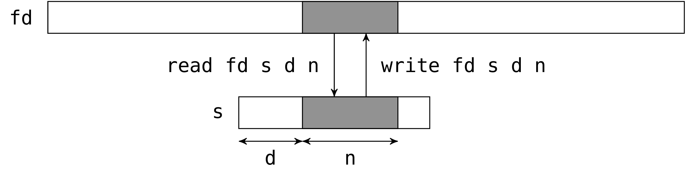
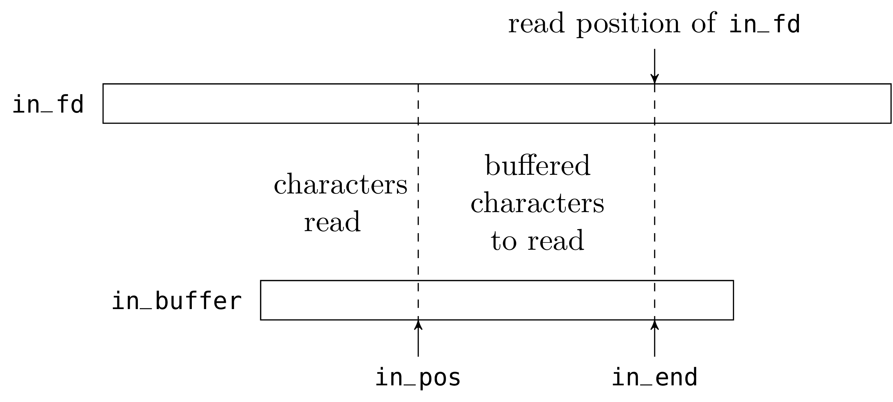

Unix system programming in OCamlXavier Leroy and Didier Rémy1stDecember
, 2014 |
© 1991, 1992, 2003, 2004, 2005, 2006, 2008, 2009, 2010
Xavier Leroy and Didier Rémy,
inria Rocquencourt.
Rights reserved.
Consult the
license. 
Translation by
Daniel C. Bünzli,
Eric Cooper,
Eliot Handelman,
Priya Hattiangdi,
Thad Meyer,
Prashanth Mundkur,
Richard Paradies,
Till Varoquaux,
Mark Wong-VanHaren
Proofread by
David Allsopp,
Erik de Castro Lopo,
John Clements,
Anil Madhavapeddy,
Prashanth Mundkur
Translation coordination & layout by Daniel C. Bünzli.
Please send corrections to daniel.buenzl i@erratique.ch.
Available as a monolithic file,
by chapters, and in PDF
—
git repository.
This document is an introductory course on Unix system programming,
with an emphasis on communications between processes. The main novelty
of this work is the use of the OCaml language, a dialect of the
ML language, instead of the C language that is customary in systems
programming. This gives an unusual perspective on systems programming
and on the ML language.
Contents
Introduction
These course notes originate from a system programming course Xavier
Leroy taught in 1994 to the first year students of the Master’s program in
fundamental and applied mathematics and computer science at the École
Normale Supérieure. This earliest version used the
Caml-Light [1] language.
For a Master’s course in computer science at the École Polytechnique
taught from 2003 to 2006, Didier Rémy adapted the notes to use the
OCaml language. During these years, Gilles Roussel, Fabrice Le
Fessant and Maxence Guesdon helped to teach the course and also
contributed to this document. The new version also brought
additions and updates. In ten years, some orders of magnitude have
shifted by a digit and the web has left its infancy. For instance, the
http relay example, now commonplace, may have been a forerunner in
1994. But, most of all, the OCaml language gained maturity and was
used to program real system applications like Unison [18].
Tradition dictates that Unix system programming must be done in C. For
this course we found it more interesting to use a higher-level
language, namely OCaml, to explain the fundamentals of Unix system
programming.
The OCaml interface to Unix system calls is more abstract. Instead
of encoding everything in terms of integers and bit fields as in C,
OCaml uses the whole power of the ML type system to clearly
represent the arguments and return values of system calls. Hence, it
becomes easier to explain the semantics of the calls instead of losing
oneself explaining how the arguments and the results have to be
en/decoded. (See, for example, the presentation of the system call
wait, page ??.)
Furthermore, due to the static type system and the clarity of its
primitives, it is safer to program in OCaml than in C. The
experienced C programmer may see these benefits as useless luxury,
however they are crucial for the inexperienced audience of this course.
A second goal of this exposition of system programming is to show
OCaml performing in a domain out of its usual applications in
theorem proving, compilation and symbolic computation. The outcome of
the experiment is rather positive, thanks to OCaml’s solid
imperative kernel and its other novel aspects like parametric
polymorphism, higher-order functions and exceptions. It also shows
that instead of applicative and imperative programming being mutually
exclusive, their combination makes it possible to integrate in the
same program complex symbolic computations and a good interface with
the operating system.
These notes assume the reader is familiar with OCaml and Unix shell
commands. For any question about the language, consult the OCaml
System documentation [2] and for questions about Unix,
read section 1 of the Unix manual or introductory books on Unix
like [5, 6].
This document describes only the programmatic interface to the Unix
system. It presents neither its implementation, neither its internal
architecture. The internal architecture of bsd 4.3 is
described in [8] and of System v
in [9]. Tanenbaum’s books [13, 14] give an overall view of
network and operating system architecture.
The Unix interface presented in this document is part of the
OCaml System available as free software at
http://caml.inria.fr/ocaml/.
1 Generalities
1.1 Modules Sys and Unix
Functions that give access to the system from OCaml are grouped into two
modules. The first module, Sys, contains those functions
common to Unix and other operating systems under which OCaml runs.
The second module, Unix, contains everything specific to
Unix.
In what follows, we will refer to identifiers from the Sys and
Unix modules without specifying which modules they come from. That is, we
will suppose that we are within the scope of the directives
open Sys and open Unix. In complete examples, we explicitly write
open, in order to be truly complete.
The Sys and Unix modules can redefine certain
identifiers of the Pervasives module, hiding previous
definitions. For example, Pervasives.stdin is different from
Unix.stdin. The previous definitions can always be obtained
through a prefix.
To compile an OCaml program that uses the
Unix library, do this:
ocamlc -o prog unix.cma mod1.ml mod2.ml mod3.ml
where the program prog is assumed to comprise of the three modules mod1,
mod2 and mod3. The modules can also be compiled separately:
ocamlc -c mod1.ml
ocamlc -c mod2.ml
ocamlc -c mod3.ml
and linked with:
ocamlc -o prog unix.cma mod1.cmo mod2.cmo mod3.cmo
In both cases, the argument unix.cma is the Unix library
written in OCaml. To use the native-code compiler rather than the
bytecode compiler, replace ocamlc with ocamlopt and
unix.cma with unix.cmxa.
If the compilation tool ocamlbuild is used, simply add the
following line to the
_tags file:
<prog.{native,byte}> : use_unix
The Unix system can also be accessed from the interactive system,
also known as the “toplevel”. If your platform supports dynamic
linking of C libraries, start an ocaml toplevel and type in the
directive:
#load "unix.cma";;
Otherwise, you will need to create an interactive system containing
the pre-loaded system functions:
ocamlmktop -o ocamlunix unix.cma
This toplevel can be started by:
./ocamlunix
1.2 Interface with the calling program
When running a program from a shell (command interpreter), the shell
passes arguments and an environment to the program. The
arguments are words on the command line that follow the name of the
command. The environment is a set of strings of the form
variable=value, representing the global bindings of environment
variables: bindings set with setenv var=val for the
csh shell, or with var=val; export var for
the sh shell.
The arguments passed to the program are in the string array
Sys.argv:
The environment of the program is obtained by the function
Unix.environment:
A more convenient way of looking up the environment is to use the
function Sys.getenv:
Sys.getenv v returns the value associated with the variable name
v in
the environment, raising the exception Not_found if this
variable is not bound.
Example
As a first example, here is the echo program, which prints a
list of its arguments, as does the Unix command of the same name.
let echo () =
let len = Array.length Sys.argv in
if len > 1 then
begin
print_string Sys.argv.(1);
for i = 2 to len - 1 do
print_char ' ';
print_string Sys.argv.(i);
done;
print_newline ();
end;;
echo ();;
* * *
A program can be terminated at any point with a call to exit:
The argument is the return code to send back to the calling program. The
convention is to return 0 if all has gone well, and to return a
non-zero code to signal an error. In conditional constructions, the
sh shell interprets the return code 0 as the boolean
“true”, and all non-zero codes as the boolean “false”.
When a program terminates normally after executing all of the
expressions of which it is composed, it makes an implicit call to
exit 0. When a program terminates prematurely because an
exception was raised but not caught, it makes an implicit call to
exit 2.
The function exit always flushes the buffers of all channels open for
writing. The function at_exit lets one register other actions
to be carried out when the program terminates.
val at_exit : (unit -> unit) -> unit
The last function to be registered is called first. A function registered with
at_exit cannot be unregistered. However, this is not a
real restriction: we can easily get the same effect with a function
whose execution depends on a global variable.
1.3 Error handling
Unless otherwise indicated, all functions in the Unix module
raise the exception Unix_error in case of error.
The second argument of the Unix_error exception is the name of
the system call that raised the error. The third argument identifies,
if possible, the object on which the error occurred; for example, in
the case of a system call taking a file name as an argument, this file name will be
in the third position in Unix_error. Finally, the first argument
of the exception is an error code indicating the nature of the
error. It belongs to the variant type error:
type error = E2BIG | EACCES | EAGAIN | ... | EUNKNOWNERR
of int
Constructors of this type have the same names and meanings as those
used in the posix convention and certain errors from
unix98 and bsd. All other errors use the constructor EUNKOWNERR.
Given the semantics of exceptions, an error that is not specifically
foreseen and intercepted by a try propagates up to the top of a
program and causes it to terminate prematurely. In small
applications, treating unforeseen errors as fatal is a good practice.
However, it is appropriate to display the error clearly. To do this,
the Unix module supplies the handle_unix_error function:
The call handle_unix_error f x applies function f to the
argument x. If this raises the exception Unix_error, a
message is displayed describing the error, and the program is
terminated with exit 2. A typical use is
handle_unix_error prog ();;
where the function prog : unit -> unit executes the body of the
program. For reference, here is how handle_unix_error is
implemented.
1 open Unix;;
2 let handle_unix_error f arg =
3 try
4 f arg
5 with Unix_error(err, fun_name, arg) ->
6 prerr_string Sys.argv.(0);
7 prerr_string ": \"";
8 prerr_string fun_name;
9 prerr_string "\" failed";
10 if String.length arg > 0
then begin
11 prerr_string " on \"";
12 prerr_string arg;
13 prerr_string "\""
14 end;
15 prerr_string ": ";
16 prerr_endline (error_message err);
17 exit 2;;
Functions of the form prerr_xxx are like the functions
print_xxx, except that they write on the error channel
stderr rather than on the standard output channel stdout.
The primitive error_message, of type
error -> string, returns a message describing the error given as an
argument (line 16). The argument number zero of the
program, namely Sys.argv.(0), contains the name of the command
that was used to invoke the program (line 6).
The function handle_unix_error handles fatal errors, i.e. errors
that stop the program. An advantage of OCaml is that it requires
all errors to be handled, if only at the highest level by
halting the program. Indeed, any error in a system call raises an
exception, and the execution thread in progress is interrupted up to
the level where the exception is explicitly caught and handled. This avoids
continuing the program in an inconsistent state.
Errors of type Unix_error can, of course, be
selectively matched. We will often see the following
function later on:
let rec restart_on_EINTR f x =
try f x with Unix_error (EINTR, _, _) -> restart_on_EINTR f x
which is used to execute a function and to restart it automatically
when it executes a system call that is interrupted (see section 4.5).
1.4 Library functions
As we will see throughout the examples, system programming often
repeats the same patterns. To reduce the code of each application to
its essentials, we will want to define library functions that
factor out the common parts.
Whereas in a complete program one knows precisely which errors can be
raised (and these are often fatal, resulting in the program being stopped),
we generally do not know the execution context in the case of library functions. We
cannot suppose that all errors are fatal. It is therefore necessary to
let the error return to the caller, which will decide on a suitable
course of action (e.g. stop the program, or handle or ignore the error). However,
the library function in general will not allow the error to simply pass
through, since it must maintain the system in a consistent state. For
example, a library function that opens a file and then applies an
operation to its file descriptor must take care to close the
descriptor in all cases, including those where the processing of the
file causes an error. This is in order to avoid a file descriptor
leak, leading to the exhaustion of file descriptors.
Furthermore, the operation applied to a file may be defined by a
function that was received as an argument, and we don’t know precisely
when or how it can fail (but the caller in general will know). We are
thus often led to protect the body of the processing with
“finalization” code, which must be executed just before the
function returns, whether normally or exceptionally.
There is no built-in finalize construct try …finalize in
the OCaml language, but it can be easily defined1:
let try_finalize f x finally y =
let res = try f x with exn -> finally y; raise exn in
finally y;
res
This function takes the main body f and the finalizer
finally, each in the form of a function, and two parameters x
and y, which are passed to their respective functions. The body
of the program f x is executed first, and its result is kept
aside to be returned after the execution of the finalizer
finally. In case the program fails, i.e. raises an exception exn,
the finalizer is run and the exception exn is raised
again. If both the main function and the finalizer fail, the
finalizer’s exception is raised (one could choose to have the main
function’s exception raised instead).
Note
In the rest of this course, we use an auxiliary library Misc
which contains several useful functions like try_finalize that are often
used in the examples. We will introduce them as they are needed. To
compile the examples of the course, the definitions of the Misc
module need to be collected and compiled.
The Misc module also contains certain functions, added for
illustration purposes, that will not be used in the course. These
simply enrich the Unix library, sometimes by redefining the
behavior of certain functions. The Misc module must thus take
precedence over the Unix module.
Examples
The course provides numerous examples. They can be compiled with
OCaml, version 4.01.0. Some programs will have to be slightly modified in order to work with
older versions.
There are two kinds of examples: “library functions” (very
general functions that can be reused) and small applications. It is
important to distinguish between the two. In the case of library functions, we
want their context of use to be as general as possible. We will thus
carefully specify their interface and attentively treat all
particular cases. In the case of small applications, an error is often
fatal and causes the program to stop executing. It is sufficient to report
the cause of an error, without needing to return to a consistent state, since
the program is stopped immediately thereafter.
2 Files
The term “file” in Unix covers several types of objects:
-
standard files: finite sets of bytes containing text or binary
information, often referred to as “ordinary” files,
- directories,
- symbolic links,
- special files (devices), which primarily provide access
to computer peripherals,
- named pipes,
- sockets named in the Unix domain.
The file concept includes both the data contained in the file and
information about the file itself (also called meta-data) like its
type, its access rights, the latest access times, etc.
2.1 The file system
To a first approximation, the file system can be considered to be a tree. The root is
represented by '/'. The branches are labeled by (file) names,
which are strings of any characters excluding '\000' and '/'
(but it is good practice to also avoid non-printing characters and
spaces). The non-terminal nodes are directories: these nodes
always contain two branches . and .. which respectively
represent the directory itself and the directory’s parent. The other
nodes are sometimes called files, as opposed to directories,
but this is ambiguous, as we can also designate any node as a
“file”. To avoid all ambiguity we refer to them as
non-directory files.
The nodes of the tree are addressed by paths. If the start of the path
is the root of the file hierarchy, the path is absolute, whereas if the
start is a directory it is relative. More precisely, a relative
path is a string of file names separated by the character
'/'. An absolute path is a relative path preceded by the
the character '/' (note the double use of this character both as
a separator and as the name of the root node).
The Filename module handles paths in a portable
manner. In particular, concat concatenates paths without
referring to the character '/', allowing the code to function equally
well on other operating systems (for example, the path separator character
under Windows is '\'). Similarly, the Filename module
provides the string values current_dir_name and
parent_dir_name to represent the branches
. and .. The functions basename and
dirname return the prefix d and the suffix
b from a path p such that the paths p and
d/b refer to the same file, where d is the directory in
which the file is found and b is the name of the file. The
functions defined in Filename operate only on paths,
independently of their actual existence within the file hierarchy.
In fact, strictly speaking, the file hierarchy is not a tree. First
the directories . and .. allow a directory to refer to
itself and to move up in the hierarchy to define paths leading from a
directory to itself. Moreover, non-directory files can have many
parents (we say that they have many hard links). Finally,
there are also symbolic links which can be seen as
non-directory files containing a path. Conceptually, this path can be
obtained by reading the contents of the symbolic link like an ordinary
file. Whenever a symbolic link occurs in the middle of a path we have
to follow its path transparently. If s is a symbolic link whose
value is the path l, then the path p/s/q represents the file
l/q if l is an absolute path or the file p/l/q if
l is a relative path.
Figure 1 gives an example of a file hierarchy. The
symbolic link 11 corresponding to the path /tmp/bar whose
path value is the relative path ../gnu, does not refer to any
existing file in the hierarchy (at the moment).
In general, a recursive traversal of the hierarchy will terminate
if the following rules are respected:
-
the directories
. and .. are ignored.
- symbolic links are not followed.
But if symbolic links are followed we are traversing a graph and
we need to keep track of the nodes we have already visited to avoid loops.
Each process has a current working directory. It is returned by the
function getcwd and can be changed with
chdir. It is also possible to constrict the
view of the file hierarchy by calling
chroot p. This makes the node p, which
should be a directory, the root of the restricted view of the
hierarchy. Absolute file paths are then
interpreted according to this new root p (and of course .. at the
new root is p itself).
2.2 File names and file descriptors
There are two ways to access a file. The first is by its file
name (or path name) in the file system hierarchy. Due to
hard links, a file can have many different names. Names are values of
type string. For example the system calls unlink,
link, symlink and rename all operate at
the file name level.
val unlink : string -> unit
val link : string -> string -> unit
val symlink : string -> string -> unit
val rename : string -> string -> unit
Their effect is as follows:
-
unlink f erases the file f like the Unix command
rm -f f.
link f1 f2 creates a hard link named f2 to
the file f1 like the command ln f1 f2.
symlink f1 f2 creates a symbolic link named f2 to the file
f1 like the command ln -s f1 f2.
rename f1 f2 renames the file f1 to f2
like the command mv f1 f2.
The second way of accessing a file is by a file descriptor. A
descriptor represents a pointer to a file along with other information
like the current read/write position in the file, the access rights of
the file (is it possible to read? write?) and flags which control the
behavior of reads and writes (blocking or non-blocking, overwrite,
append, etc.). File descriptors are values of the abstract type
file_descr.
Access to a file via its descriptor is independent from the
access via its name. In particular whenever we get a file descriptor,
the file can be destroyed or renamed but the descriptor still points
on the original file.
When a program is executed, three descriptors are allocated and
tied to the variables stdin, stdout and stderr of the
Unix module:
They correspond, respectively, to the standard input, standard output
and standard error of the process.
When a program is executed on the command line without any
redirections, the three descriptors refer to the terminal. But if,
for example, the input has been redirected using the shell expression
cmd < f, then the descriptor stdin refers to the file named f
during the execution of the command cmd. Similarly, cmd > f
and cmd 2> f respectively bind the descriptors stdout and
stderr to the file named f during the execution of the
command.
2.3 Meta-attributes, types and permissions
The system calls stat, lstat and fstat
return the meta-attributes of a file; that is, information about
the node itself rather than its content. Among other things, this
information contains the identity of the file, the type of file, the
access rights, the time and date of last access and other information.
val stat : string -> stats
val lstat : string -> stats
val fstat : file_descr -> stats
The system calls stat and lstat take a file name as an
argument while fstat takes a previously opened descriptor and
returns information about the file it points to. stat and
lstat differ on symbolic links : lstat returns information
about the symbolic link itself, while stat returns information
about the file that the link points to. The result of these three
calls is a record of type stats whose fields are
described in table 1.
| Field name | Description |
|
st_dev : int | The id of the device on which the file is stored. |
st_ino : int | The id of the file (inode number) in its partition.
The pair (st_dev, st_ino) uniquely identifies the file
within the file system. |
st_kind : file_kind | The file type. The type file_kind is an enumerated type
whose constructors are:
S_REG | Regular file |
S_DIR | Directory |
S_CHR | Character device |
S_BLK | Block device |
S_LNK | Symbolic link |
S_FIFO | Named pipe |
S_SOCK | Socket
|
|
st_perm : int | Access rights for the file |
st_nlink : int | For a directory: the number of entries in the directory. For others:
the number of hard links to this file. |
st_uid : int | The id of the file’s user owner. |
st_gid : int | The id of the file’s group owner. |
st_rdev : int | The id of the associated peripheral (for special files). |
st_size : int | The file size, in bytes. |
st_atime : int | Last file content access date (in seconds from
January 1st 1970, midnight, gmt). |
st_mtime : int | Last file content modification date (idem). |
st_ctime : int | Last file state modification date: either a
write to the file or a change in access rights, user or group owner,
or number of links.
|
|
Table 1 — Fields of the stats structure
Identification
A file is uniquely identified by the pair made of its device number
(typically the disk partition where it is located) st_dev and its
inode number st_ino.
Owners
A file has one user owner st_uid and one group owner
st_gid. All the users and groups
on the machine are usually described in the
/etc/passwd and /etc/groups files. We can look up them by
name in a portable manner with the functions getpwnam and
getgrnam or by id with
getpwuid and getgrgid.
The name of the user of a running process and all the groups
to which it belongs can be retrieved with the commands
getlogin and getgroups.
The call chown changes the owner (second argument) and the
group (third argument) of a file (first argument). If we have a file
descriptor, fchown can be used instead. Only the super user
can change this information arbitrarily.
val chown : string -> int -> int -> unit
val fchown : file_descr -> int -> int -> unit
Access rights
Access rights are encoded as bits in an integer, and the type
file_perm is just an abbreviation for the type
int. They specify special bits and read, write and
execution rights for the user owner, the group owner and the other
users as vector of bits:
| Special | User | Group | Other |
| – | – | – | – | – | – | – | – | – | – | – | – |
OoSUGO
|
where in each of the user, group and other fields, the order of bits
indicates read (r), write (w) and execute (x) rights.
The permissions on a file are the union of all these individual
rights, as shown in table 2.
| Bit (octal) | Notation ls -l | Access right |
|
0o100 | --x------ | executable by the user owner |
0o200 | -w------- | writable by the user owner |
0o400 | r-------- | readable by the user owner |
|
0o10 | -----x--- | executable by members of the group owner |
0o20 | ----w---- | writable by members of the group owner |
0o40 | ---r---- | readable by members of the group owner |
|
0o1 | --------x | executable by other users |
0o2 | -------w- | writable by other users |
0o4 | ------r-- | readable by other users |
|
0o1000 | --------t | the bit t on the group (sticky bit) |
0o2000 | -----s--- | the bit s on the group (set-gid) |
0o4000 | --s------ | the bit s on the user (set-uid) |
|
Table 2 — Permission bits
For files, the meaning of read, write and execute permissions is
obvious. For a directory, the execute permission means the right to
enter it (to chdir to it) and read permission the right to list
its contents. Read permission on a directory is however not needed to
read its files or sub-directories (but we then need to know their
names).
The special bits do not have meaning unless the x bit is set (if
present without x set, they do not give additional rights). This
is why their representation is superimposed on the bit x and
the letters S and T are used instead of s and t
whenever x is not set. The bit t allows sub-directories to
inherit the permissions of the parent directory. On a directory,
the bit s allows the use of the directory’s uid or gid rather
than the user’s to create directories. For an executable file,
the bit s allows the changing at execution time of the user’s
effective identity or group with the system calls setuid
and setgid.
The process also preserves its original identities unless
it has super user privileges, in which case setuid and
setgid change both its effective and original user and group
identities. The original identity is preserved to allow
the process to subsequently recover it as its effective identity
without needing further privileges. The system calls getuid and
getgid return the original identities and
geteuid and getegid return the effective identities.
A process also has a file creation mask encoded the same way file
permissions are. As its name suggests, the mask specifies prohibitions
(rights to remove): during file creation a bit set to 1 in the
mask is set to 0 in the permissions of the created file. The mask
can be consulted and changed with the system call umask:
Like many system calls that modify system variables, the modifying
function returns the old value of the variable. Thus, to just look up
the value we need to call the function twice. Once with an arbitrary
value to get the mask and a second time to put it back. For example:
let m = umask 0 in ignore (umask m); m
File access permissions can be modified with the system calls
chmod and fchmod:
val chmod : string -> file_perm -> unit
val fchmod : file_descr -> file_perm -> unit
and they can be tested “dynamically” with the system
call access:
where requested access rights to the file are specified by a list of
values of type access_permission whose meaning is
obvious except for F_OK which just checks for the file’s
existence (without checking for the other rights). The function
raises an error if the access rights are not granted.
Note that the information inferred by access may be more
restrictive than the information returned by lstat because a file
system may be mounted with restricted rights — for example in
read-only mode. In that case access will deny a write permission
on a file whose meta-attributes would allow it. This is why we
distinguish between “dynamic” (what a process can actually do)
and “static” (what the file system specifies) information.
2.4 Operations on directories
Only the kernel can write in directories (when files are
created). Thus opening a directory in write mode is prohibited. In
certain versions of Unix a directory may be opened in read only mode
and read with read, but other versions prohibit
it. However, even if this is possible, it is preferable not to do so
because the format of directory entries vary between Unix versions and
is often complex. The following functions allow reading a directory
sequentially in a portable manner:
The system call opendir returns a directory descriptor for a
directory. readdir reads the next entry of a descriptor, and
returns a file name relative to the directory or raises the exception
End_of_file if the end of the directory is
reached. rewinddir repositions the descriptor at the
beginning of the directory and closedir closes the directory
descriptor.
Example
The following library function, in Misc, iterates a
function f over the entries of the directory dirname.
let iter_dir f dirname =
let d = opendir dirname in
try while true do f (readdir d) done
with End_of_file -> closedir d
* * *
To create a directory or remove an empty directory, we have
mkdir and rmdir:
val mkdir : string -> file_perm -> unit
val rmdir : string -> unit
The second argument of mkdir determines the access rights of the
new directory. Note that we can only remove a directory that is
already empty. To remove a directory and its contents, it is thus
necessary to first recursively empty the contents of the directory and
then remove the directory.
2.5 Complete example: search in a file hierarchy
The Unix command find lists the files of a hierarchy matching
certain criteria (file name, type and permissions etc.). In this
section we develop a library function Findlib.find which
implements these searches and a command find that provides a version
of the Unix command find that supports the options -follow
and -maxdepth.
We specify the following interface for Findlib.find:
val find :
(Unix.error * string * string -> unit) ->
(string -> Unix.stats -> bool) -> bool -> int -> string list ->
unit
The function call
find handler action follow depth roots
traverses the file hierarchy starting from the roots specified in the
list roots (absolute or relative to the current directory of the
process when the call is made) up to a maximum depth depth and following
symbolic links if the flag follow is set. The paths found under
the root r include r as a prefix. Each found path p is
given to the function action along with the data returned by
Unix.lstat p (or Unix.stat p if follow is true).
The function action returns a boolean indicating, for
directories, whether the search should continue for its contents (true)
or not (false).
The handler function reports traversal errors of type
Unix_error. Whenever an error occurs the arguments of the
exception are given to the handler function and the traversal
continues. However when an exception is raised by the functions
action or handler themselves, we immediately stop the
traversal and let it propagate to the caller. To propagate an
Unix_error exception without catching it like a traversal error,
we wrap these exceptions in the Hidden exception (see
hide_exn and reveal_exn).
1 open Unix;;
2
3 exception Hidden
of exn
4 let hide_exn f x =
try f x
with exn -> raise (Hidden exn);;
5 let reveal_exn f x =
try f x
with Hidden exn -> raise exn;;
6
7 let find on_error on_path follow depth roots =
8 let rec find_rec depth visiting filename =
9 try
10 let infos = (
if follow
then stat
else lstat) filename
in
11 let continue = hide_exn (on_path filename) infos
in
12 let id = infos.st_dev, infos.st_ino
in
13 if infos.st_kind = S_DIR && depth > 0 && continue &&
14 (not follow || not (List.mem id visiting))
15 then
16 let process_child child =
17 if (child <> Filename.current_dir_name &&
18 child <> Filename.parent_dir_name)
then
19 let child_name = Filename.concat filename child
in
20 let visiting =
21 if follow
then id :: visiting
else visiting
in
22 find_rec (depth-1) visiting child_name
in
23 Misc.iter_dir process_child filename
24 with Unix_error (e, b, c) -> hide_exn on_error (e, b, c)
in
25 reveal_exn (List.iter (find_rec depth [])) roots;;
A directory is identified by the id pair (line 12)
made of its device and inode number. The list visiting keeps
track of the directories that have already been visited. In fact
this information is only needed if symbolic links are followed
(line 21).
It is now easy to program the find command. The essential part of
the code parses the command line arguments with the Arg
module.
let find () =
let follow = ref false in
let maxdepth = ref max_int in
let roots = ref [] in
let usage_string =
("Usage: " ^ Sys.argv.(0) ^ " [files...] [options...]") in
let opt_list = [
"-maxdepth", Arg.Int ((:=) maxdepth), "max depth search";
"-follow", Arg.Set follow, "follow symbolic links";
] in
Arg.parse opt_list (fun f -> roots := f :: !roots) usage_string;
let action p infos = print_endline p; true in
let errors = ref false in
let on_error (e, b, c) =
errors := true; prerr_endline (c ^ ": " ^ Unix.error_message e) in
Findlib.find on_error action !follow !maxdepth
(if !roots = [] then [ Filename.current_dir_name ]
else List.rev !roots);
if !errors then exit 1;;
Unix.handle_unix_error find ();;
Although our find command is quite limited, the library
function FindLib.find is far more general, as the following
exercise shows.
Exercise 1
Use the function FindLib.find to write a command
find_but_CVS equivalent to the Unix command:
find . -type d -name CVS -prune -o -print
which, starting from the current directory, recursively prints
files without printing or entering directories whose name is CVS.
Answer.
* * *
let main () =
let action p infos =
let b = not (infos.st_kind = S_DIR || Filename.basename p = "CVS") in
if b then print_endline p; b in
let errors = ref false in
let error (e,c,b) =
errors:= true; prerr_endline (b ^ ": " ^ error_message e) in
Findlib.find error action false max_int [ "." ];;
handle_unix_error main ()
* * *
Exercise 2
The function getcwd is not a system call but is defined in the
Unix module. Give a “primitive” implementation of
getcwd. First describe the principle of your algorithm with words
and then implement it (you should avoid repeating the same system
call).
Answer.
* * *
Here are some hints. We move up from the current position towards the
root and construct backwards the path we are looking for. The root can
be detected as the only directory node whose parent is equal to itself
(relative to the root . and .. are equal). To find the name
of a directory r we need to list the contents of its parent
directory and detect the file that corresponds to r.
* * *
2.6 Opening a file
The openfile function allows us to obtain a descriptor for
a file of a given name (the corresponding system call
is open, however open is a keyword in OCaml).
val openfile :
string -> open_flag list -> file_perm -> file_descr
The first argument is the name of the file to open. The second
argument, a list of flags from the enumerated type
open_flag, describes the mode in which the file should
be opened and what to do if it does not exist. The third argument of
type file_perm defines the file’s access rights,
should the file be created. The result is a file descriptor for the
given file name with the read/write position set to the beginning of the
file.
The flag list must contain exactly one of the following flags:
O_RDONLY | Open in read-only mode. |
O_WRONLY | Open in write-only mode. |
O_RDWR | Open in read and write mode.
|
These flags determine whether read or write calls can be done on the
descriptor. The call openfile fails if a process requests an open
in write (resp. read) mode on a file on which it has no right to
write (resp. read). For this reason O_RDWR should not be used
systematically.
The flag list can also contain one or more of the following values:
O_APPEND | Open in append mode. |
O_CREAT | Create the file if it does not exist. |
O_TRUNC | Truncate the file to zero if it already exists. |
O_EXCL | Fail if the file already exists.
|
O_NONBLOCK | Open in non-blocking mode. |
O_NOCTTY | Do not function in console mode.
|
O_SYNC | Perform the writes in synchronous mode. |
O_DSYNC | Perform the data writes in synchronous mode. |
O_RSYN | Perform the reads in synchronous mode.
|
The first group defines the behavior to follow if
the file exists or not. With:
-
O_APPEND, the read/write position will be set at the end of
the file before each write. Consequently any written data will be
added at the end of file. Without O_APPEND, writes occur at the
current read/write position (initially, the beginning of the file). O_TRUNC, the file is truncated when it
is opened. The length of the file is set to zero and the bytes
contained in the file are lost, and writes start from an empty file.
Without O_TRUNC, the writes are made at the start of the file
overwriting any data that may already be there.O_CREAT, creates the file if it does not exist. The created
file is empty and its access rights are specified by the third argument
and the creation mask of the process (the mask can be retrieved
and changed with umask).O_EXCL, openfile fails if the file already exists.
This flag, used in conjunction with O_CREAT allows to use
files as locks1. A process
which wants to take the lock calls openfile on the file with
O_EXCL and O_CREAT. If the file already exists, this means
that another process already holds the lock and openfile raises
an error. If the file does not exist openfile returns without
error and the file is created, preventing other processes from
taking the lock. To release the lock the process calls
unlink on it. The creation of a file is an atomic operation: if
two processes try to create the same file in parallel with the
options O_EXCL and O_CREAT, at most one of them can
succeed. The drawbacks of this technique is that a process must
busy wait to acquire a lock that is currently held and
the abnormal termination of a process holding a lock may never
release it.
Example
Most programs use 0o666 for the third argument
to openfile. This means rw-rw-rw- in symbolic notation.
With the default creation mask of 0o022, the
file is thus created with the permissions rw-r--r--. With a more
lenient mask of 0o002, the file is created with the permissions
rw-rw-r--.
* * *
Example
To read from a file:
openfile filename [O_RDONLY] 0
The third argument can be anything as O_CREAT is not specified, 0
is usually given.
To write to an empty a file without caring about any previous content:
openfile filename [O_WRONLY; O_TRUNC; O_CREAT] 0o666
If the file will contain executable code (e.g. files
created by ld, scripts, etc.), we create it with execution permissions:
openfile filename [O_WRONLY; O_TRUNC; O_CREAT] 0o777
If the file must be confidential (e.g. “mailbox” files where
mail stores read messages), we create it with write permissions
only for the user owner:
openfile filename [O_WRONLY; O_TRUNC; O_CREAT] 0o600
To append data at the end of an existing file or create it if it
doesn’t exist:
openfile filename [O_WRONLY; O_APPEND; O_CREAT] 0o666
* * *
The O_NONBLOCK flag guarantees that if the file is a named pipe
or a special file then the file opening and subsequent reads and
writes will be non-blocking.
The O_NOCTYY flag guarantees that if the file is a control
terminal (keyboard, window, etc.), it won’t become the controlling
terminal of the calling process.
The last group of flags specifies how to synchronize
read and write operations. By default these operations are not
synchronized. With:
-
O_DSYNC, the data is written synchronously such that
the process is blocked until all the writes have been done
physically on the media (usually a disk).
O_SYNC, the file data and its meta-attributes are written
synchronously.
O_RSYNC, with O_DSYNC specifies that the data reads are
also synchronized: it is guaranteed that all current writes
(requested but not necessarily performed) to the file are really
written to the media before the next read. If O_RSYNC is
provided with O_SYNC the above also applies to meta-attributes
changes.
2.7 Reading and writing
The system calls read and write read and write
bytes in a file. For historical reasons, the system
call write is provided in OCaml under the name
single_write:
val read : file_descr -> string -> int -> int -> int
val single_write : file_descr -> string -> int -> int -> int
The two calls read and single_write have the same
interface. The first argument is the file descriptor to act on. The
second argument is a string which will hold the read bytes (for
read) or the bytes to write (for single_write). The third
argument is the position in the string of the first byte to be written
or read. The fourth argument is the number of the bytes to be read or
written. In fact the third and fourth argument define a sub-string of
the second argument (the sub-string should be valid, read and
single_write do not check this).

read and single_write return the number of bytes actually
read or written.
Reads and write calls are performed from the file descriptor’s current
read/write position (if the file was opened in O_APPEND mode,
this position is set at the end of the file prior to any
write). After the system call, the current position is advanced by
the number of bytes read or written.
For writes, the number of bytes actually written is usually the number
of bytes requested. However there are exceptions: (i) if it is not
possible to write the bytes (e.g. if the disk is full) (ii) the
descriptor is a pipe or a socket open in non-blocking mode (iii) due to
OCaml, if the write is too large.
The reason for (iii) is that internally OCaml uses auxiliary
buffers whose size is bounded by a maximal value. If this value is
exceeded the write will be partial. To work around this problem
OCaml also provides the function write which
iterates the writes until all the data is written or an error occurs.
The problem is that in case of error there’s no way to know the number
of bytes that were actually written. Hence single_write should be
preferred because it preserves the atomicity of writes (we know
exactly what was written) and it is more faithful to the original Unix
system call (note that the implementation of single_write is
described in section 5.7).
Example
Assume fd is a descriptor open in write-only mode.
write fd "Hello world!" 3 7
writes the characters "lo worl" in the corresponding file,
and returns 7.
* * *
For reads, it is possible that the number bytes actually read is
smaller than the number of requested bytes. For example when the end
of file is near, that is when the number of bytes between the current
position and the end of file is less than the number of requested
bytes. In particular, when the current position is at the end of file,
read returns zero. The convention “zero equals end of
file” also holds for special files, pipes and sockets. For example,
read on a terminal returns zero if we issue a ctrl-D on the
input.
Another example is when we read from a terminal. In that case,
read blocks until an entire line is available. If the line length
is smaller than the requested bytes read returns immediately with
the line without waiting for more data to reach the number of
requested bytes. (This is the default behavior for terminals, but it
can be changed to read character-by-character instead of
line-by-line, see section 2.13 and the type
terminal_io for more details.)
Example
The following expression reads at most 100 characters from standard
input and returns them as a string.
let buffer = String.create 100 in
let n = read stdin buffer 0 100 in
String.sub buffer 0 n
* * *
Example
The function really_read below has the same interface as
read, but makes additional read attempts to try to get
the number of requested bytes. It raises the exception
End_of_file if the end of file is reached while doing this.
let rec really_read fd buffer start length =
if length <= 0 then () else
match read fd buffer start length with
| 0 -> raise End_of_file
| r -> really_read fd buffer (start + r) (length - r);;
* * *
2.8 Closing a descriptor
The system call close closes a file descriptor.
val close : file_descr -> unit
Once a descriptor is closed, all attempts to read, write, or do
anything else with the descriptor will fail. Descriptors should be
closed when they are no longer needed; but it is not mandatory. In
particular, and in contrast to Pervasives’
channels, a file descriptor doesn’t need to be closed to ensure that
all pending writes have been performed as write requests made with
write are immediately transmitted to the kernel. On the other
hand, the number of descriptors allocated by a process is limited by
the kernel (from several hundreds to thousands). Doing a close on
an unused descriptor releases it, so that the process does not run out
of descriptors.
2.9 Complete example: file copy
We program a command file_copy which, given two arguments
f1 and f2, copies to the file f2 the bytes contained
in f1.
open Unix;;
let buffer_size = 8192;;
let buffer = String.create buffer_size;;
let file_copy input_name output_name =
let fd_in = openfile input_name [O_RDONLY] 0 in
let fd_out = openfile output_name [O_WRONLY; O_CREAT; O_TRUNC] 0o666 in
let rec copy_loop () = match read fd_in buffer 0 buffer_size with
| 0 -> ()
| r -> ignore (write fd_out buffer 0 r); copy_loop ()
in
copy_loop ();
close fd_in;
close fd_out;;
let copy () =
if Array.length Sys.argv = 3 then begin
file_copy Sys.argv.(1) Sys.argv.(2);
exit 0
end else begin
prerr_endline
("Usage: " ^ Sys.argv.(0) ^ " <input_file> <output_file>");
exit 1
end;;
handle_unix_error copy ();;
The bulk of the work is performed by the the function file_copy.
First we open a descriptor in read-only mode on the input file and
another in write-only mode on the output file.
If the output file already exists, it is truncated (option
O_TRUNC) and if it does not exist it is created (option
O_CREAT) with the permissions rw-rw-rw- modified by the creation
mask. (This is unsatisfactory: if we copy an executable file, we would
like the copy to be also executable. We will see later how to give
a copy the same permissions as the original.)
In the copy_loop function we do the copy by blocks of
buffer_size bytes. We request buffer_size bytes to read. If
read returns zero, we have reached the end of file and the copy
is over. Otherwise we write the r bytes we have read in the
output file and start again.
Finally, we close the two descriptors. The main program copy
verifies that the command received two arguments and passes them to
the function file_copy.
Any error occurring during the copy results in a Unix_error
caught and displayed by handle_unix_error. Example of errors
include inability to open the input file because it does not
exist, failure to read because of restricted permissions, failure to
write because the disk is full, etc.
Exercise 3
Add an option -a to the program, such that
file_copy -a f1 f2 appends the contents of f1 to the end of
the file f2.
Answer.
* * *
If the option -a is supplied, we need to do
openfile output_name [O_WRONLY; O_CREAT; O_APPEND] 0o666
instead of
openfile output_name [O_WRONLY; O_CREAT; O_TRUNC] 0o666
Parsing the new option from the command line is left to the reader.
* * *
2.10 The cost of system calls and buffers
In the example file_copy, reads were made in blocks of 8192
bytes. Why not read byte per by byte, or megabyte per by megabyte?
The reason is efficiency.
Figure 2 shows the copy speed of file_copy, in
bytes per second, against the size of blocks (the value
buffer_size). The amount of data transferred is the same
regardless of the size of the blocks.
For small block sizes, the copy speed is almost proportional to the
block size. Most of the time is spent not in data transfers but in the
execution of the loop copy_loop and in the calls to read and
write. By profiling more carefully we can see that most of the
time is spent in the calls to read and write. We conclude
that a system call, even if it has not much to do, takes a minimum of
about 4 micro-seconds (on the machine that was used for the test — a
2.8 GHz Pentium 4 ), let us say from 1 to 10 microseconds. For small
input/output blocks, the duration of the system call dominates.
For larger blocks, between 4KB and 1MB, the copy speed is constant and
maximal. Here, the time spent in system calls and the loop is small
relative to the time spent on the data transfer. Also, the buffer
size becomes bigger than the cache sizes used by the system and the
time spent by the system to make the transfer dominates the cost of a
system call2.
Finally, for very large blocks (8MB and more) the speed is slightly
under the maximum. Coming into play here is the time needed to
allocate the block and assign memory pages to it as it fills up.
The moral of the story is that, a system call, even if it does very little work,
costs dearly — much more than a normal function call: roughly, 2 to
20 microseconds for each system call, depending on the
architecture. It is therefore important to minimize the number of
system calls. In particular, read and write operations should be made
in blocks of reasonable size and not character by character.
In examples like file_copy, it is not difficult to do
input/output with large blocks. But other types of programs are more
naturally written with character by character input or output (e.g.
reading a line from a file, lexical analysis, displaying a number etc.).
To satisfy the needs of these programs, most systems provide
input/output libraries with an additional layer of software between
the application and the operating system. For example, in OCaml the
Pervasives module defines the abstract types
in_channel and
out_channel, similar to file descriptors, and
functions on these types like input_char,
input_line,
output_char, or
output_string. This layer uses buffers to
group sequences of character by character reads or writes into a
single system call to read or write. This results in better
performance for programs that proceed character by character.
Moreover this additional layer makes programs more portable: we just
need to implement this layer with the system calls provided by another
operating system to port all the programs that use this library on
this new platform.
2.11 Complete example: a small input/output library
To illustrate the buffered input/output techniques, we implement a fragment
of OCaml Pervasives library. Here is the interface:
exception End_of_file
type in_channel
val open_in : string -> in_channel
val input_char : in_channel -> char
val close_in : in_channel -> unit
type out_channel
val open_out : string -> out_channel
val output_char : out_channel -> char -> unit
val close_out : out_channel -> unit
We start with the “input” part. The abstract type
in_channel is defined as follows:
open Unix;;
type in_channel =
{ in_buffer: string;
in_fd: file_descr;
mutable in_pos: int;
mutable in_end: int };;
exception End_of_file
The character string of the in_buffer field is, literally, the
buffer. The field in_fd is a (Unix) file descriptor, opened on
the file to read. The field in_pos is the current read position
in the buffer. The field in_end is the number of valid
characters preloaded in the buffer.

The fields in_pos and in_end will be modified in place during
read operations; we therefore declare them as mutable.
let buffer_size = 8192;;
let open_in filename =
{ in_buffer = String.create buffer_size;
in_fd = openfile filename [O_RDONLY] 0;
in_pos = 0;
in_end = 0 };;
When we open a file for reading, we create a buffer of reasonable size
(large enough so as not to make too many system calls; small enough so
as not to waste memory). We then initialize the field in_fd with
a Unix file descriptor opened in read-only mode on the given file. The
buffer is initially empty (it does not contain any character from the
file); the field in_end is therefore initialized to zero.
let input_char chan =
if chan.in_pos < chan.in_end then begin
let c = chan.in_buffer.[chan.in_pos] in
chan.in_pos <- chan.in_pos + 1;
c
end else begin
match read chan.in_fd chan.in_buffer 0 buffer_size
with 0 -> raise End_of_file
| r -> chan.in_end <- r;
chan.in_pos <- 1;
chan.in_buffer.[0]
end;;
To read a character from an in_channel, we do one of two
things. Either there is at least one unread character in the buffer;
that is to say, the field in_pos is less than the field
in_end. We then return this character located at in_pos, and
increment in_pos. Or the buffer is empty and we call read to
refill the buffer. If read returns zero, we have reached the end
of the file and we raise the exception End_of_file. Otherwise, we
put the number of characters read in the field in_end (we may
receive less characters than we requested, thus the buffer may be
only partially refilled) and we return the first character read.
let close_in chan =
close chan.in_fd;;
Closing an in_channel just closes the underlying Unix file descriptor.
The “output” part is very similar to the “input”
part. The only asymmetry is that the buffer now contains incomplete
writes (characters that have already been buffered but not written to
the file descriptor), and not reads in advance (characters that have
buffered, but not yet read).
type out_channel =
{ out_buffer: string;
out_fd: file_descr;
mutable out_pos: int };;
let open_out filename =
{ out_buffer = String.create 8192;
out_fd = openfile filename [O_WRONLY; O_TRUNC; O_CREAT] 0o666;
out_pos = 0 };;
let output_char chan c =
if chan.out_pos < String.length chan.out_buffer then begin
chan.out_buffer.[chan.out_pos] <- c;
chan.out_pos <- chan.out_pos + 1
end else begin
ignore (write chan.out_fd chan.out_buffer 0 chan.out_pos);
chan.out_buffer.[0] <- c;
chan.out_pos <- 1
end;;
let close_out chan =
ignore (write chan.out_fd chan.out_buffer 0 chan.out_pos);
close chan.out_fd;;
To write a character on an out_channel, we do one of two things.
Either the buffer is not full and we just store the character in the
buffer at the position out_pos and increment that value. Or the
buffer is full and we empty it with a call to write and then
store the character at the beginning of the buffer.
When we close an out_channel, we must not forget to write the
buffer contents (the characters from 0 to out_pos - 1) to the
file otherwise the writes made on the channel since the last time
the buffer was emptied would be lost.
Exercise 4
Implement the function:
val output_string : out_channel -> string -> unit
which behaves like a sequence of output_char on each
character of the string, but is more efficient.
Answer.
* * *
The idea is to copy the string to output into the buffer. We need to
take into account the case where there is not enough space in the
buffer (in that case the buffer needs to emptied), and also the case
where the string is longer than the buffer (in that case it can
be written directly). Here is a possible solution.
let output_string chan s =
let avail = String.length chan.out_buffer - chan.out_pos in
if String.length s <= avail then begin
String.blit s 0 chan.out_buffer chan.out_pos (String.length s);
chan.out_pos <- chan.out_pos + String.length s
end
else if chan.out_pos = 0 then begin
ignore (write chan.out_fd s 0 (String.length s))
end
else begin
String.blit s 0 chan.out_buffer chan.out_pos avail;
let out_buffer_size = String.length chan.out_buffer in
ignore (write chan.out_fd chan.out_buffer 0 out_buffer_size);
let remaining = String.length s - avail in
if remaining < out_buffer_size then begin
String.blit s avail chan.out_buffer 0 remaining;
chan.out_pos <- remaining
end else begin
ignore (write chan.out_fd s avail remaining);
chan.out_pos <- 0
end
end;;
* * *
2.12 Positioning
The system call lseek allows to set the current read/write
position of a file descriptor.
val lseek : file_descr -> int -> seek_command -> int
The first argument is the file descriptor and the second one the
desired position. The latter is interpreted according to the value
of the third argument of type seek_command. This
enumerated type specifies the kind of position:
SEEK_SET | Absolute position. The second argument specifies
the character number to point to. The first character of a file is at
position zero. |
SEEK_CUR | Position relative to the current position.
The second argument is an offset relative to the
current position. A positive value moves forward and a negative value
moves backwards. |
SEEK_END | Position relative to the end of file. The
second argument is an offset relative to the end of file.
As for SEEK_CUR, the offset may be positive or negative.
|
The value returned by lseek is the resulting absolute
read/write position.
An error is raised if a negative absolute position is
requested. The requested position can be located after the end
of file. In that case, a read returns zero (end of
file reached) and a write extends the file with zeros until
that position and then writes the supplied data.
Example
To position the cursor on the 1000th character of a file:
lseek fd 1000 SEEK_SET
To rewind by one character:
lseek fd (-1) SEEK_CUR
To find out the size of a file:
let file_size = lseek fd 0 SEEK_END in ...
* * *
For descriptors opened in O_APPEND mode, the read/write position
is automatically set at the end of the file before each write. Thus
a call lseek is useless to set the write position, it may however
be useful to set the read position.
The behavior of lseek is undefined on certain type of files for
which absolute access is meaningless: communication devices (pipes,
sockets) but also many special files like the terminal.
In most Unix implementations a call to lseek on these files is
simply ignored: the read/write position is set but read/write
operations ignore it. In some implementations, lseek on a pipe or
a socket triggers an error.
Exercise 5
The command tail displays the last n lines of a file.
How can it be implemented efficiently on regular files? What can we
do for the other kind of files? How can the option -f be
implemented (cf. man tail)?
Answer.
* * *
A naive implementation of tail is to read the file sequentially
from the beginning, keeping the last n lines read in a circular
buffer. When we reach the end of file, we display the buffer.
When the data comes from a pipe or a special file which
does not implement lseek, there is no better way.
However if the data is coming from a normal file, it is better to read
the file from the end. With lseek, we read the last 4096
characters. We scan them for the end of lines. If there are at least
n of them, we output and display the corresponding lines.
Otherwise, we start again by adding the next preceding 4096
characters, etc.
To add the option -f, we first proceed as above and then we go
back at the end of the file and try to read from there. If
read returns data we display it immediately and start again. If it
returns 0 we wait some time (sleep 1) and try again.
* * *
2.13 Operations specific to certain file types
In Unix, data communication is done via file descriptors representing
either permanent files (files, peripherals) or volatile ones (pipes
and sockets, see chapters 5 and 6). File
descriptors provide a uniform and media-independent interface for data
communication. Of course the actual implementation of the operations
on a file descriptor depends on the underlying media.
However this uniformity breaks when we need to access all the
features provided by a given media. General operations (opening,
writing, reading, etc.) remain uniform on most descriptors but even,
on certain special files, these may have an ad hoc behavior defined
by the kind of peripheral and its parameters. There are also
operations that work only with certain kind of media.
Normal files
We can shorten a normal file with the system calls
truncate and ftruncate.
The first argument is the file to truncate and the second the desired
size. All the data after this position is lost.
Symbolic links
Most operations on files “follow” symbolic links in the sense
that they do not apply to the link itself but to the file on which the
link points (for example openfile,
stat, truncate, opendir, etc.).
The two system calls symlink and readlink operate
specifically on symbolic links:
The call symlink f1 f2 creates the file f2 as a symbolic
link to f1 (like the Unix command ln -s f1 f2). The call
readlink returns the content of a symbolic link, i.e. the name of
the file to which the link points.
Special files
Special files can be of “character” or “block” type.
The former are character streams: we can read or write characters only
sequentially. These are the terminals, sound devices, printers, etc.
The latter, typically disks, have a permanent medium: characters can
be read by blocks and even seeked relative to the current position.
Among the special files, we may distinguish:
/dev/null | This is the black hole which swallows
everything we put into and from which nothing comes out. This is
extremely useful for ignoring the results of a process: we redirect
its output to /dev/null (see chapter 5). |
/dev/tty* | These are the control terminals. |
/dev/pty* | These are the pseudo-terminals: they are not real
terminals but simulate them (they provide the same interface). |
/dev/hd* | These are the disks. |
/proc | Under Linux, system parameters organized as a
file system. They allow reads and writes.
|
The usual file system calls on special files can behave differently.
However, most special files (terminals, tape drives, disks, etc.)
respond to read and write in the obvious manner (but
sometimes with restrictions on the number of bytes written or read),
but many ignore lseek.
In addition to the usual file system calls, special files which
represent peripherals must be commanded and/or configured
dynamically. For example, for a tape drive, rewind or fast forward the
tape; for a terminal, choice of the line editing mode, behavior of
special characters, serial connection parameters (speed, parity,
etc.). These operations are made in Unix with the system call
ioctl which group together all the particular
cases. However, this system call is not provided by OCaml; it is
ill-defined and cannot be treated in a uniform way.
Terminals
Terminals and pseudo-terminals are special files of type character
which can be configured from OCaml. The system call
tcgetattr takes a file descriptor open on a special file
and returns a structure of type terminal_io which
describes the status of the terminal according to the posix
standard.
type terminal_io =
{ c_ignbrk : bool; c_brk_int : bool; ...; c_vstop : char }
This structure can be modified and given to the function
tcsetattr to change the attributes of the peripheral.
val tcsetattr : file_descr -> setattr_when -> terminal_io -> unit
The first argument is the file descriptor of the peripheral. The last
argument is a structure of type terminal_io describing the
parameters of the peripheral as we want them. The second argument is a
value of the enumerated type setattr_when that
indicates when the change must be done: immediately (TCSANOW),
after having transmitted all written data (TCSADRAIN) or after
having read all the received data (TCAFLUSH). TCSADRAIN is
recommended for changing write parameters and TCSAFLUSH for read
parameters.
Example
When a password is read, characters entered by the user should not be
echoed if the standard input is connected to a terminal or a
pseudo-terminal.
let read_passwd message =
match
try
let default = tcgetattr stdin in
let silent =
{ default with
c_echo = false;
c_echoe = false;
c_echok = false;
c_echonl = false;
} in
Some (default, silent)
with _ -> None
with
| None -> input_line Pervasives.stdin
| Some (default, silent) ->
print_string message;
flush Pervasives.stdout;
tcsetattr stdin TCSANOW silent;
try
let s = input_line Pervasives.stdin in
tcsetattr stdin TCSANOW default; s
with x ->
tcsetattr stdin TCSANOW default; raise x;;
The read_passwd function starts by getting the current settings
of the terminal connected to stdin. Then it defines a modified
version of these in which characters are not echoed. If this fails the
standard input is not a control terminal and we just read a
line. Otherwise we display a message, change the terminal settings, read the
password and put the terminal back in its initial state. Care must be
taken to set the terminal back to its initial state even after a read
failure.
* * *
Sometimes a program needs to start another and connect its standard input
to a terminal (or pseudo-terminal). OCaml does not provide any
support for this3. To achieve that, we must manually look among the
pseudo-terminals (in general, they are files with names in the form of
/dev/tty[a-z][a-f0-9]) and find one that is not already open. We
can then open this file and start the program with this file on its
standard input.
Four other functions control the stream of data of a terminal
(flush waiting data, wait for the end of transmission and restart
communication).
The function tcsendbreak sends an interrupt to the
peripheral. The second argument is the duration of the interrupt
(0 is interpreted as the default value for the
peripheral).
The function tcdrain waits for all written data to
be transmitted.
val tcflush : file_descr -> flush_queue -> unit
Depending on the value of the second argument, a call to the
function tcflush discards the data written but not yet
transmitted (TCIFLUSH), or the data received but not yet read
(TCOFLUSH) or both (TCIOFLUSH).
val tcflow : file_descr -> flow_action -> unit
Depending on the value of the second argument, a call to the
function tcflow suspends the data transmission
(TCOOFF), restarts the transmission (TCOON), sends a control
character stop or start to request the
transmission to be suspended (TCIOFF) or restarted (TCION).
The function setsid puts the process in a new
session and detaches it from the terminal.
2.14 Locks on files
Two processes can modify the same file in parallel; however, their
writes may collide and result in inconsistent data. In some cases data
is always written at the end and opening the file with O_APPEND
prevents this. This is fine for log files but it does not
work for files that store, for example, a database because writes are
performed at arbitrary positions. In that case processes using the
file must collaborate in order not to step on each others toes. A
lock on the whole file can be implemented with an auxiliary file (see
page ??) but the system call lockf allows
for finer synchronization patterns by locking only parts of a file.
val lockf : file_descr -> lock_command -> int -> unit
2.15 Complete example: recursive copy of files
We extend the function file_copy (section 2.9) to
support symbolic links and directories in addition to normal files.
For directories, we recursively copy their contents.
To copy normal files we reuse the function file_copy we already
defined.
open Unix
...
let file_copy input_name output_name =
...
The function set_infos below modifies the owner, the
access rights and the last dates of access/modification
of a file. We use it to preserve this information for copied files.
let set_infos filename infos =
utimes filename infos.st_atime infos.st_mtime;
chmod filename infos.st_perm;
try
chown filename infos.st_uid infos.st_gid
with Unix_error(EPERM,_,_) -> ()
The system call utime modifies the dates of access and
modification. We use chmod and chown to re-establish
the access rights and the owner. For normal users, there are
a certain number of cases where chown will fail with a
“permission denied” error. We catch this error and ignore it.
Here’s the main recursive function.
let rec copy_rec source dest =
let infos = lstat source in
match infos.st_kind with
| S_REG ->
file_copy source dest;
set_infos dest infos
| S_LNK ->
let link = readlink source in
symlink link dest
| S_DIR ->
mkdir dest 0o200;
Misc.iter_dir
(fun file ->
if file <> Filename.current_dir_name
&& file <> Filename.parent_dir_name
then
copy_rec
(Filename.concat source file)
(Filename.concat dest file))
source;
set_infos dest infos
| _ ->
prerr_endline ("Can't cope with special file " ^ source)
We begin by reading the information of the source file. If it is
a normal file, we copy its contents with file_copy and its
information with set_infos. If it is a symbolic link, we read
where it points to and create a link pointing to the same object. If
it is a directory, we create a destination directory, then we read the
directory’s entries (ignoring the entries about the directory itself
or its parent) and recursively call copy_rec for each entry. All
other file types are ignored, with a warning.
The main program is straightforward:
let copyrec () =
if Array.length Sys.argv <> 3 then begin
prerr_endline ("Usage: " ^Sys.argv.(0)^ " <source> <destination>");
exit 2
end else begin
copy_rec Sys.argv.(1) Sys.argv.(2);
exit 0
end
;;
handle_unix_error copyrec ();;
Exercise 6
Copy hard links cleverly. As written above copy_rec creates n
duplicates of the same file whenever a file occurs under n different
names in the hierarchy to copy. Try to detect this situation, copy
the file only once and make hard links in the destination hierarchy.
Answer.
* * *
For the files that have already been copied we keep a map from their
identity (st_dev, st_ino) to their destination file name. Before
each copy we consult the map to see if a file with the same identity
was already copied. If that’s the case we do a hard link on the
destination file name instead of redoing the copy. To minimize the
size of the map we remember only the files which have more than one
name, i.e. those for which st_nlink > 1.
let copied_files = (Hashtbl.create 53 : ((int * int), string) Hashtbl.t)
let rec copy source dest =
let infos = lstat source in
match infos.st_kind with
S_REG ->
if infos.st_nlink > 1 then begin
try
let dest' =
Hashtbl.find copied_files (infos.st_dev, infos.st_ino)
in link dest' dest
with Not_found ->
Hashtbl.add copied_files (infos.st_dev, infos.st_ino) dest;
file_copy source dest;
set_infos dest infos
end else begin
file_copy source dest;
set_infos dest infos
end
| S_LNK -> ...
* * *
2.16 Complete example: Tape ARchive
The tar file format (for tape archive) can store a file
hierarchy into a single file. It can be seen as a mini file system.
In this section we define functions to read and write tar
files. We also program a command readtar such that readtar a
displays the name of the files contained in the archive a and
readtar a f extracts the contents of the file f contained in
a. Extracting the whole file hierarchy of an archive and
generating an archive for a file hierarchy is left as an exercise.
File format specification
A tar archive is a set of records. Each record represents a
file; it starts with a header which encodes the information
about the file (its name, type, size, owners, etc.) and is followed by
the contents of the file. The header is a block of 512 bytes structured as
shown in table 3.
| Offset | Length | Code Type | Name | Description |
|
| 0 | 100 | string | name | File name |
| 100 | 8 | octal | perm | File permissions |
| 108 | 8 | octal | uid | Id of user owner |
| 116 | 8 | octal | gid | Id of group owner |
| 124 | 12 | octal | size | File size (in bytes) |
| 136 | 12 | octal | mtime | Date of last modification |
| 148 | 8 | octal | checksum | Header checksum |
| 156 | 1 | character | kind | File type |
| 157 | 100 | octal | link | Link |
| 257 | 8 | string | magic | Signature ("ustar\032\032\0") |
| 265 | 32 | string | user | Name of user owner |
| 297 | 32 | string | group | Name of group owner |
| 329 | 8 | octal | major | Peripheral major number |
| 337 | 8 | octal | minor | Peripheral minor number |
| 345 | 167 | | | Padding
|
|
Note. Field lengths are in number of
bytes. All fields are encoded with character strings terminated with
the null character '\000'; except the fields kind and
size in which '\000' optional.
Table 3 — Header structure
The file contents is stored right after the header, its size is
rounded to a multiple of 512 bytes (the extra space is filled with
zeros). Records are stored one after the other. If needed, the file is
padded with empty blocks to reach at least 20 blocks.
Since tar archives are also designed to be written on brittle media
and reread many years later, the header contains a checksum
field which allows to detect when the header is damaged. Its value is
the sum of all the bytes of the header (to compute that sum we assume
that the checksum field itself is made of zeros).
The kind header field encodes the file type in a byte as follows4:
'\0' or '0' | '1' | '2' | '3' | '4' | '5' | '6' | '7' |
|
REG | LINK | LNK | CHR | BLK | DIR | FIFO | CONT
|
Most of the cases correspond to the values of the Unix file type
file_kind stored in the st_kind field of the
stats structure. LINK is for hard links which
must lead to another file already stored within the archive. CONT
is for ordinary file, but stored in a contiguous area of memory (this
is a feature of some file systems, we can treat it like an ordinary
file).
The link header field stores the link when kind is LNK
or LINK. The fields major and minor contain the major
and minor numbers of the peripheral when kind is CHR or
BLK. These three fields are not used in other cases.
The value of the kind field is naturally represented by a
variant type and the header by a record:
type kind =
| REG | LNK of string | LINK of string | CHR of int * int
| BLK of int * int | DIR | FIFO | CONT
type header =
{ name : string; perm : int; uid : int; gid : int; size : int;
mtime : int; kind : kind; user : string; group : string }
Reading a header
Reading a header is not very interesting, but it cannot be ignored.
exception Error of string * string
let error err mes = raise (Error (err, mes));;
let handle_error f s =
try f s with
| Error (err, mes) ->
Printf.eprintf "Error: %s: %s" err mes;
exit 2
let substring s offset len =
let max_length = min (offset + len + 1) (String.length s) in
let rec real_length j =
if j < max_length && s.[j] <> '\000' then real_length (succ j)
else j - offset in
String.sub s offset (real_length offset);;
let integer_of_octal nbytes s offset =
let i = int_of_string ("0o" ^ substring s offset nbytes) in
if i < 0 then error "Corrupted archive" "integer too large" else i;;
let kind s i = match s.[i] with
| '\000' | '0' -> REG
| '1' -> LINK (substring s (succ i) 99)
| '2' -> LNK (substring s (succ i) 99)
| '3' -> CHR (integer_of_octal 8 s 329, integer_of_octal 8 s 329)
| '4' -> BLK (integer_of_octal 8 s 329, integer_of_octal 8 s 337)
| '5' -> DIR | '6' -> FIFO | '7' -> CONT
| _ -> error "Corrupted archive" "kind"
let header_of_string s =
{ name = substring s 0 99;
perm = integer_of_octal 8 s 100;
uid = integer_of_octal 8 s 108;
gid = integer_of_octal 8 s 116;
size = integer_of_octal 12 s 124;
mtime = integer_of_octal 12 s 136;
kind = kind s 156;
user = substring s 265 32;
group = substring s 297 32; }
let block_size = 512;;
let total_size size =
block_size + ((block_size -1 + size) / block_size) * block_size;;
An archive ends either at the end of file where a new record would
start or on a complete, but empty, block. To read a header we thus try
to read a block which must be either empty or complete. For that we
reuse the really_read function defined earlier. The end of file
should not be reached when we try to read a block.
let buffer_size = block_size;;
let buffer = String.create buffer_size;;
let end_of_file_error () =
error "Corrupted archive" "unexpected end of file"
let without_end_of_file f x =
try f x with End_of_file -> end_of_file_error ()
let read_header fd =
let len = read fd buffer 0 buffer_size in
if len = 0 || buffer.[0] = '\000' then None
else begin
if len < buffer_size then
without_end_of_file (really_read fd buffer len) (buffer_size - len);
Some (header_of_string buffer)
end;;
Reading an archive
To perform an operation in an archive, we need to read the records
sequentially until we find the target of the operation. Usually we
just need to read the header of each record without its contents but
sometimes we also need to get back to a previous one to read its
contents. As such we keep, for each record, its header and its location
in the archive:
type record = { header : header; offset : int; descr : file_descr };;
We define a general iterator that reads and accumulates the records
of an archive (without their contents). To remain general, the
accumulating function f is abstracted. This allows to use the
same iterator function to display records, destroy them, etc.
let fold f initial fd =
let rec fold_aux offset accu =
ignore (without_end_of_file (lseek fd offset) SEEK_SET);
match without_end_of_file read_header fd with
Some h ->
let r =
{ header = h; offset = offset + block_size; descr = fd } in
fold_aux (offset + total_size h.size) (f r accu)
| None -> accu in
fold_aux 0 initial;;
The function fold_aux starts from a position offset with a
partial result accu. It moves to offset where a record
should start, reads a header, constructs the record r and starts
again at the end of the record with the new (less partial) result
f r accu. It stops when there’s no header: the end of the archive
was reached.
Display the record names
We just display the name of records without keeping them:
let list tarfile =
let fd = openfile tarfile [ O_RDONLY ] 0o0 in
let add r () = print_string r.header.name; print_newline () in
fold add () fd;
close fd
Display the contents of a record
The command readtar a f must look for the file f in the
archive and, if it is a regular file, display its contents. If f
is a hard link on g in the archive, we follow the link and
display g since even though f and g are represented
differently in the archive they represent the same file. The fact that
g or f is a link on the other or vice versa depends only on
the order in which the files were traversed when the archive was
created. For now we do not follow symbol links.
Hard link resolution is done by the following mutually recursive
functions:
let rec find_regular r list = match r.header.kind with
| REG | CONT -> r
| LINK name -> find_file name list
| _ -> error r.header.name "Not a regular file"
and find_file name list = match list with
| r :: rest ->
if r.header.name = name then find_regular r rest
else find_file name rest
| [] -> error name "Link not found (corrupted archive)";;
The function find_regular finds the regular file corresponding to
the record r. If r is a regular file itself, r is
returned. If r is a hard link the function looks for the regular
file in the archive’s previous records stored in list with the
function find_file. In all other cases, the function aborts.
Once the record is found we just need to display its contents. After
positioning the descriptor at the start of the record’s contents this
operation is very similar to the file_copy example.
let copy_file file output =
ignore (lseek file.descr file.offset SEEK_SET);
let rec copy_loop len =
if len > 0 then
match read file.descr buffer 0 (min buffer_size len) with
| 0 -> end_of_file_error ()
| r -> ignore (write output buffer 0 r); copy_loop (len-r) in
copy_loop file.header.size
We now just need to combine these functions correctly.
exception Done
let find_and_copy tarfile filename =
let fd = openfile tarfile [ O_RDONLY ] 0o0 in
let found_or_collect r accu =
if r.header.name = filename then begin
copy_file (find_regular r accu) stdout;
raise Done
end else r :: accu in
try
ignore (fold found_or_collect [] fd);
error "File not found" filename
with
| Done -> close fd
We read the records in the archive (but not their contents) until we
find the record with the target name. We then call the function
find_regular to find the record that actually contains the file.
This second, backward, search must succeed if the archive is
well-formed. The first search may however fail if the target name is
not in the archive. In case of failure, the program takes care to
distinguish between these two cases.
Here is the main function which implements the command readtar:
let readtar () =
let nargs = Array.length Sys.argv in
if nargs = 2 then list Sys.argv.(1)
else if nargs = 3 then find_and_copy Sys.argv.(1) Sys.argv.(2)
else
prerr_endline ("Usage: " ^Sys.argv.(0)^ " <tarfile> [ <source> ]");;
handle_unix_error (handle_error readtar) ();;
Exercise 7
Extend the command readtar so that it follows symbolic links in
the sense that if the link points to a file of the archive that file’s
contents should be extracted.
Answer.
* * *
Behind this apparently trivial requirement are hidden difficulties.
Symbolic links are arbitrary paths, they can point on directories
(which is not allowed for hard links) and they may not correspond to
files contained in the archive.
A simple solution is to recreate, in memory, the file hierarchy
contained in the archive.
type info = File | Link of string list | Dir of (string * inode) list
and inode = { mutable record : record option; mutable info : info;}
Nodes of this in-memory file system are described by the inode
type. The info field describes the file type, limited to ordinary
files, symbolic links and directories. Paths are represented by lists
of strings and directories by lists that associate a node to each file
name in the directory. The record field stores the tar
record associated to the node. This field is optional because
intermediate directories are not always present in the archive; it is
mutable because a file may appear more than once in the archive and
the last occurrence takes precedence over the other.
let root () =
let rec i =
{ record = None; info = Dir [ Filename.current_dir_name, i ] }
in i
let link inode name nod = match inode.info with
| File | Link _ -> error name "Not a directory"
| Dir list ->
try let _ = List.assoc name list in error name "Already exists"
with Not_found -> inode.info <- Dir ((name, nod) :: list)
let mkfile inode name r =
let f = { record = r; info = File } in
link inode name f; f
let symlink inode name r path =
let s = { record = r; info = Link path } in
link inode name s; s
let mkdir inode name r =
let d = mkfile inode name r in
d.info <-
Dir [ Filename.current_dir_name, d; Filename.parent_dir_name, inode ];
d
As in Unix, each directory contains a link to itself and
to its parent, except for the root directory (in contrast to Unix
where it is its own parent). This allows us to detect and
forbid any access outside the hierarchy contained in the archive.
let rec find link inode path = match inode.info, path with
| _, [] -> inode
| Dir list, name :: rest ->
let subnode = List.assoc name list in
let subnode =
match subnode.info with
Link q ->
if link && rest = [] then subnode else find false inode q
| _ -> subnode in
find link subnode rest
| _, _ -> raise Not_found;;
The function find finds in the archive the node corresponding to
path by starting from the initial node inode. If the search
result is a link, the flag link indicates whether the link itself
should be returned (true) or the file pointed by the link (false).
let rec mkpath inode path =
match inode.info, path with
| _, [] -> inode
| Dir list, name :: rest ->
let subnode =
try List.assoc name list
with Not_found -> mkdir inode name None in
mkpath subnode rest
| _, _ -> raise Not_found;;
The function mkpath traverses the path path creating missing
nodes along the path.
let explode f =
let rec dec f p =
if f = Filename.current_dir_name then p
else dec (Filename.dirname f) (Filename.basename f :: p) in
dec (if Filename.basename f = "" then Filename.dirname f else f) [];;
The function explode parses a Unix path into a list of strings.
It removes the end “/” of directory names which are allowed
in archives.
let add archive r =
match r.header.kind with
| CHR (_,_) | BLK (_,_) | FIFO -> ()
| kind ->
match List.rev (explode r.header.name) with
| [] -> ()
| name :: parent_rev ->
let inode = mkpath archive (List.rev parent_rev) in
match kind with
| DIR -> ignore (mkdir inode name (Some r))
| REG | CONT -> ignore (mkfile inode name (Some r))
| LNK f -> ignore (symlink inode name (Some r) (explode f))
| LINK f -> link inode name (find true archive (explode f))
| _ -> assert false;;
The function add adds the record r to
the archive. The archive, represented by its root node, is modified by a
side effect.
let find_and_copy tarfile filename =
let fd = openfile tarfile [ O_RDONLY ] 0 in
let records = List.rev (fold (fun x y -> x :: y) [] fd) in
let archive = root () in
List.iter (add archive) records;
let inode =
try find false archive (explode filename)
with Not_found -> error filename "File not found" in
begin match inode.record with
| Some ({ header = { kind = (REG | CONT) }} as r) -> copy_file r stdout
| Some _ -> error filename "Not a regular file"
| None -> error filename "Not found"
end;
close fd;;
We end as before.
let readtar () =
let nargs = Array.length Sys.argv in
if nargs = 2 then list Sys.argv.(1)
else if nargs = 3 then find_and_copy Sys.argv.(1) Sys.argv.(2)
else prerr_endline ("Usage: " ^Sys.argv.(0)^ " <tarfile> [ <source> ]");;
Printexc.print (handle_unix_error (handle_error readtar)) ();;
* * *
Exercise 8
Write a command untar such that untar a extracts and creates
all the files in the archive a (except special files)
restoring if possible the information about the files
(owners, permissions) as found in the archive.
The file hierarchy should be reconstructed in the current working
directory of the untar command. If the archive tries to create
files outside a sub-directory of the current working directory this
should be detected and prohibited. Nonexistent directories not explicitly
mentioned in the archive should be created with the user’s default
permissions.
Answer.
* * *
This exercise combines the previous exercise (exercise 2.16)
and the recursive file copy (exercise 2.15).
One small difficulty is the management of permissions: we must create
the archive’s directories with write permission and set them to their
actual value only after all the files were extracted.
Let us first write an auxiliary function for mkpath p m that
creates the missing directories along the path p with permissions
m (and such that p may be terminated by a
superfluous “/”).
let warning mes = prerr_string mes;prerr_newline ();;
open Filename
let mkpath p perm =
let normal_path =
if basename p = "" then dirname p else p in
let path_to_dir = dirname normal_path in
let rec make p =
try ignore (stat p)
with Unix_error (ENOENT, _, _) ->
if p = current_dir_name then ()
else if p = parent_dir_name then
warning "Ill formed archive: path contains \"..\""
else begin
make (dirname p);
mkdir p perm
end in
make path_to_dir;;
We also define a function set_infos similar to the one
used to copy files (section 2.15):
let set_infos header =
chmod header.name header.perm;
let mtime = float header.mtime in
utimes header.name mtime mtime;
begin match header.kind with
| LNK f -> ()
| _ -> chmod header.name header.perm
end;
try chown header.name header.uid header.gid
with Unix_error(EPERM,_,_) -> ();;
The main function of the program is untar_file_collect_dirs which
processes a single record and accumulates directories explicitly
created by the archive:
let verbose = ref true;;
let default_dir_perm = 0o777;;
let default_file_perm = 0o666;;
let protect f x g y = try f x; g y with z -> g y; raise z
let file_exists f = try ignore (stat f); true with _ -> false;;
let untar_file_collect_dirs file dirs =
let fh = file.header in
if !verbose then begin print_string fh.name; print_newline () end;
match fh.kind with
| CHR (_,_) | BLK(_,_) | FIFO ->
warning (fh.name ^ "Ignoring special files");
dirs
| DIR ->
mkpath fh.name default_dir_perm;
if file_exists fh.name then dirs
else begin mkdir fh.name default_dir_perm; fh :: dirs end
| x ->
mkpath fh.name default_dir_perm;
begin match x with
| REG | CONT ->
let flags = [ O_WRONLY; O_TRUNC; O_CREAT; ] in
let out = openfile fh.name flags default_file_perm in
protect (copy_file file) out close out
| LNK f ->
symlink f fh.name
| LINK f ->
begin
try if (stat fh.name).st_kind = S_REG then unlink fh.name
with Unix_error(_,_,_) -> ();
end;
Unix.link f fh.name;
| _ -> assert false
end;
set_infos fh;
dirs;;
The body of the program just iterates untar_file_collect_dirs on
the records and finally updates the directories with the correct access
rights.
let extract tarfile =
let fd = openfile tarfile [ O_RDONLY ] 0 in
let new_directories =
fold untar_file_collect_dirs [] fd in
List.iter set_infos new_directories;
close fd;;
let untar () =
let nargs = Array.length Sys.argv in
if nargs = 2 then extract Sys.argv.(1)
else prerr_endline ("Usage: " ^ Sys.argv.(0) ^ " <tarfile>");;
handle_unix_error untar ();;
* * *
Exercise 9
Write a program tar such that tar -xvf a f1 f2 ...
constructs the archive a containing the list of files f1,
f2, etc. and their sub-directories.
Answer.
* * *
We reuse the data structures already defined above and collect them in
a Tarlib module. We define a warning function which does not stop
the program or alter the return code of the program.
open Sys
open Unix
open Tarlib
let warning path message = prerr_endline (path ^ ": " ^ message)
We start with the function that writes a record header in a
buffer. It’s a tedious function but it must be done with care as a
single error in a header can corrupt the entire archive. In particular
we must pay attention to the limits imposed by the file format. For
example the size of paths is limited to 99 bytes (There are extensions
to the format to handle longer path but it’s not the goal of this
project).
let write_header_to_buffer source infos kind =
let size = if kind = REG then infos.st_size else 0 in
String.fill buffer 0 block_size '\000';
let put len string offset =
String.blit string 0 buffer offset (min (String.length string) len) in
let put_int8 x = put 7 (Printf.sprintf "%07o" x) in
let put_int12 x = put 11 (Printf.sprintf "%011o" x) in
let put_char c offset = buffer.[offset] <- c in
let put_path s offset =
if String.length s <= 99 then put 99 s offset
else raise (Error ("path too long", s)) in
put_path (if kind = DIR then source ^ "/" else source) 0;
put_int8 infos.st_perm 100;
put_int8 infos.st_uid 108;
put_int8 infos.st_gid 116;
put_int12 size 124;
put_int12 (int_of_float infos.st_mtime) 136;
put 7 "ustar " 257;
put 31 (getpwuid infos.st_uid).pw_name 265;
put 31 (getgrgid infos.st_gid).gr_name 297;
(* Fields dev and rdev are only used for special files, which we omit *)
put_char
begin match kind with
| REG -> '0'
| LINK s -> put_path s 157; '1'
| LNK s -> put_path s 157; '2'
| DIR -> '5'
| _ -> failwith "Special files not implemented"
end 156;
let rec sum s i =
if i < 0 then s else sum (s + Char.code buffer.[i]) (pred i) in
let checksum = sum (Char.code ' ' * 8) (block_size - 1) in
put 8 (Printf.sprintf "%06o\000 " checksum) 148;;
The following function creates a record header for a file. source is
the file name, infos is the stats information of
the file and kind is the type of file.
let header source infos kind = {
name = source;
size = if kind = REG then infos.st_size else 0;
perm = infos.st_perm;
mtime = int_of_float infos.st_mtime;
uid = infos.st_uid;
gid = infos.st_gid;
user = (getpwuid infos.st_uid).pw_name;
group = (getgrgid infos.st_gid).gr_name;
kind = kind }
To write a file in the archive, we define a variant of file_copy
which takes as an argument the number of bytes to copy and verifies
that the end of file corresponds to that size. Otherwise, an error is
raised: this handles the abnormal case where a file is modified during
the archival process. To limit the archive’s corruption to a single
file we do not write beyond that size.
let write_file len source fdout =
let fdin = openfile source [O_RDONLY] 0 in
let error () = raise (Error ("File changed size", source)) in
let rec copy_loop len =
match read fdin buffer 0 buffer_size with
0 ->
close fdin; if len > 0 then error ()
| r ->
let len = len - r in
if len < 0 then (close fdin; error ());
ignore (write fdout buffer 0 r); copy_loop len in
copy_loop len;;
let padding fd len =
if len > 0 then ignore (write fd (String.make len '\000') 0 len);;
We now tackle the creation of the archive. The files already written
in the archive are stored in a hashtable with their path so that they
are not copied more than once. We also store the directories that were
already written so as not to copy them again: it can happen that the
archival root is already contained in another and we don’t want to
copy it again (even though that would be harmless).
The data needed to write an archive is a file descriptor pointing on
the file to write, the file and directory cache (see above) and a size
variable that remembers the current archive size (to pad it to a
minimal size if needed). The archive type collects all this
information in a record:
type archive =
{ regfiles : (int * int, string) Hashtbl.t;
dirfiles : (int * int, bool) Hashtbl.t;
fd : file_descr; st : stats; mutable size : int }
let try_new_dir archive dir =
try Hashtbl.find archive.dirfiles dir
with Not_found -> Hashtbl.add archive.dirfiles dir false; true
Here is the main function that writes an entire hierarchy starting
from a file path given on the command line. This function is not
difficult but needs some care with pathological cases. In particular
we saw how to detect when a file is modified the archival. A sub case
of this when the archive is being archived itself…
let verbose = ref true;;
let write_from archive file =
if not (Filename.is_relative file) then
raise (Error ("absolute path", file));
let rec write_rec archive file =
let source =
if Filename.basename file = "" then Filename.dirname file else file in
if !verbose then begin prerr_endline source end;
let st = lstat source in
if st.st_ino = archive.st.st_ino && st.st_dev = archive.st.st_dev
then warning source "Skipping archive itself!"
else
let write_header kind =
write_header_to_buffer source st kind;
ignore (write archive.fd buffer 0 block_size) in
match st.st_kind with
S_REG ->
begin try
if st.st_nlink = 1 then raise Not_found;
let path =
Hashtbl.find archive.regfiles (st.st_ino, st.st_dev) in
write_header (LINK path);
with Not_found ->
if st.st_nlink > 1 then
Hashtbl.add archive.regfiles (st.st_ino, st.st_dev) source;
write_header REG;
write_file st.st_size source archive.fd;
let t =
(block_size-1 + st.st_size) / block_size * block_size in
padding archive.fd (t - st.st_size);
archive.size <- archive.size + t + block_size;
end
| S_LNK ->
write_header (LNK (readlink source));
| S_DIR when try_new_dir archive (st.st_ino, st.st_dev) ->
write_header DIR;
Misc.iter_dir
begin
fun file ->
if file = Filename.current_dir_name then ()
else if file = Filename.parent_dir_name then ()
else write_rec archive (source ^ "/" ^ file)
end
source
| S_DIR ->
warning source "Ignoring directory already in archive."
| _ ->
prerr_endline ("Can't cope with special file " ^ source) in
write_rec archive file;;
We keep track of regular files that may have hard links in the
regfiles table. It’s not necessary for files that have a single
link.
Here’s the main function. In case of error, it is better to remove the
erroneous archive.
let min_archive_size = 20 * block_size;;
let build tarfile files =
let fd, remove =
if tarfile = "-" then stdout, ignore
else openfile tarfile [ O_WRONLY; O_CREAT; O_TRUNC ] 0o666, unlink in
try
let arch =
{ regfiles = Hashtbl.create 13; dirfiles = Hashtbl.create 13;
st = fstat fd; fd = fd; size =0 } in
Array.iter (write_from arch) files;
padding fd (min_archive_size - arch.size);
close fd
with z ->
remove tarfile; close fd; raise z;;
We end by parsing the command line arguments.
let usage () =
prerr_endline "Usage: tar -cvf tarfile file1 [ file2 ... ] ";
exit 2;;
let tar () =
let argn = Array.length Sys.argv in
if argn > 3 && Sys.argv.(1) = "-cvf" then
build Sys.argv.(2) (Array.sub Sys.argv 3 (argn-3))
else usage ();;
let _ =
try handle_unix_error tar ()
with Error (mes, s) ->
prerr_endline ("Error: " ^ mes ^ ": " ^ s); exit 1;;
* * *
3 Processes
A process is a program executing on the operating system. It
consists of a program (machine code) and a state of the program
(current control point, variable values, call stack, open file
descriptors, etc.).
This section presents the Unix system calls to create new processes
and make them run other programs.
3.1 Creation of processes
The system call fork creates a process.
The new child process is a nearly perfect clone of the
parent process which called fork. Both processes execute
the same code, are initially at the same control point (the return
from fork), attribute the same values to all variables, have
identical call stacks, and hold open the same file descriptors to
the same files. The only thing which distinguishes the two processes
is the return value from fork: zero in the child process,
and a non-zero integer in the parent. By checking the return value
from fork, a program can thus determine if it is in the parent
process or the child and behave accordingly:
match fork () with
| 0 -> (* code run only in the child *)
| pid -> (* code run only in the parent *)
The non-zero integer returned by fork in the parent process
is the process id of the child. The process id is used by
the kernel to uniquely identify each process. A process can obtain
its process id by calling getpid.
The child process is initially in the same state as the parent process
(same variable values, same open file descriptors). This state is not
shared between the parent and the child, but merely duplicated at the
moment of the fork. For example, if one variable is bound to a
reference before the fork, a copy of that reference and its
current contents is made at the moment of the fork; after the
fork, each process independently modifies its “own”
reference without affecting the other process.
Similarly, the open file descriptors are copied at the moment of the
fork: one may be closed and the other kept open. On the other
hand, the two descriptors designate the same entry in the file table
(residing in system memory) and share their current position: if one
reads and then the other, each will read a different part of the file;
likewise, changes in the read/write position by one process with lseek are
immediately visible to the other.
3.2 Complete Example: the command leave
The command leave hhmm exits immediately, but
forks a background process which, at the time hhmm, reports that
it is time to leave.
1 open Unix;;
2
3 let leave () =
4 let hh = int_of_string (String.sub Sys.argv.(1) 0 2)
5 and mm = int_of_string (String.sub Sys.argv.(1) 2 2)
in
6 let now = localtime(time ())
in
7 let delay = (hh - now.tm_hour) * 3600 + (mm - now.tm_min) * 60
in
8
9 if delay <= 0
then begin
10 print_endline "Hey! That time has already passed!";
11 exit 0
12 end;
13 if fork () <> 0
then exit 0;
14 sleep delay;
15 print_endline "\007\007\007Time to leave!";
16 exit 0;;
17
18 handle_unix_error leave ();;
The program begins with a rudimentary parsing of the command line,
in order to extract the time provided. It then calculates the delay
in seconds (line 8). The time
call returns the current date, in seconds from the epoch (January 1st
1970, midnight). The function localtime splits
this duration into years, months, days, hours, minutes and seconds.
It then creates a new process using fork. The parent process
(whose return value from fork is a non-zero integer) terminates
immediately. The shell which launched leave thereby returns
control to the user. The child process (whose return value from
fork is zero) continues executing. It does nothing during the
indicated time (the call to sleep), then displays its message and
terminates.
3.3 Awaiting the termination of a process
The system call wait waits for one of the child processes created
by fork to terminate and returns information about how it did.
It provides a parent-child synchronization mechanism and a very
rudimentary form of communication from the child to the parent.
val wait : unit -> int * process_status
val waitpid : wait_flag list -> int -> int * process_status
The primitive system call is waitpid and the function
wait () is merely a shortcut for the expression waitpid [] (-1).
The behavior of waitpid [] p depends on the value of p:
-
If
p > 0, it awaits the termination of the child with id
equal to p.
- If
p = 0, it awaits any child with the same group id as the
calling process.
- If
p = −1, it awaits any process.
- If
p <−1, it awaits a child process with group id equal
to -p.
The first component of the result is the process id of the child
caught by wait. The second component of the result is a value of type
process_status:
WEXITED r | The child process terminated normally via
exit or by reaching the end of the program; r is the return
code (the argument passed to exit). |
WSIGNALED s | The child process was killed by a signal
(ctrl-C, kill, etc., see chapter 4
for more information about signals); s identifies the signal. |
WSTOPPED s | The child process was halted by the signal
s; this occurs only in very special cases where a process
(typically a debugger) is currently monitoring the execution of
another (by calling ptrace).
|
If one of the child processes has already terminated by the time the
parent calls wait, the call returns immediately. Otherwise, the
parent process blocks until some child process terminates (a behavior
called “rendezvous”). To wait for n child processes, one must
call wait n times.
The command waitpid accepts two optional flags for its first
argument: the flag WNOHANG indicates not to wait if there is
a child that responds to the request but has not yet terminated.
In that case, the first result is 0 and the second undefined.
The flag WUNTRACED returns the child processes that have been
halted by the signal sigstop. The command raises the exception
ECHILD if no child processes match p (in particular, if
p is -1 and the current process has no more children).
Example
The function fork_search below performs a linear search in an
array with two processes. It relies on the function simple_search
to perform the linear search.
1 open Unix;;
2 exception Found;;
3
4 let simple_search cond v =
5 try
6 for i = 0
to Array.length v - 1
do
7 if cond v.(i)
then raise Found
8 done;
9 false
10 with Found ->
true;;
11
12 let fork_search cond v =
13 let n = Array.length v
in
14 match fork ()
with
15 | 0 ->
16 let found = simple_search cond (Array.sub v (n/2) (n-n/2))
in
17 exit (
if found
then 0
else 1)
18 | _ ->
19 let found = simple_search cond (Array.sub v 0 (n/2))
in
20 match wait ()
with
21 | (pid, WEXITED retcode) -> found || (retcode = 0)
22 | (pid, _) -> failwith "fork_search";;
After the fork, the child process traverses the upper half of
the table, and exits with the return code 1 if it found an element
satisfying the predicate cond, or 0 otherwise
(lines 16 and 17). The parent process
traverses the lower half of the table, then calls wait to
sync with the child process (lines 21
and 22). If the child terminated normally, it combines
its return code with the boolean result of the search in the lower
half of the table. Otherwise, something horrible happened, and the
function fork_search fails.
* * *
In addition to the synchronization between processes, the wait
call also ensures recovery of all resources used by the child
processes. When a process terminates, it moves into a “zombie”
state, where most, but not all, of its resources (memory, etc.) have
been freed. It continues to occupy a slot in the process table to
transmit its return value to the parent via the wait call.
Once the parent calls wait, the zombie process is removed from
the process table. Since this table is of fixed size, it is important
to call wait on each forked process to avoid leaks.
If the parent process terminates before the child, the child is
given the process number 1 (usually init) as parent. This
process contains an infinite loop of wait calls, and will
therefore make the child process disappear once it finishes. This
leads to the useful “double fork” technique if you cannot
easily call wait on each process you create (because you cannot
afford to block on termination of the child process,
for example).
match fork () with
| 0 -> if fork () <> 0 then exit 0;
(* do whatever the child should do *)
| _ -> wait ();
(* do whatever the parent should do *)
The child terminates via exit just after the second fork.
The grandson becomes an orphan, and is adopted by init. In this
way, it leaves no zombie processes. The parent immediately calls
wait to reap the child. This wait will not block for long
since the child terminates very quickly.
3.4 Launching a program
The system calls execve, execv, and
execvp launch a program within the current process.
Except in case of error, these calls never return: they halt the progress
of the current program and switch to the new program.
val execve : string -> string array -> string array -> unit
val execv : string -> string array -> unit
val execvp : string -> string array -> unit
The first argument is the name of the file containing the program to
execute. In the case of execvp, this name is looked for in the
directories of the search path (specified in the environment variable
PATH).
The second argument is the array of command line arguments with which
to execute the program; this array will be the Sys.argv array
of the executed program.
In the case of execve, the third argument is the environment
given to the executed program; execv and execvp
give the current environment unchanged.
The calls execve, execv, and execvp never return a
result: either everything works without errors and the process starts
the requested program or an error occurs (file not found, etc.), and
the call raises the exception Unix_error in the calling program.
Example
The following three forms are equivalent:
execve "/bin/ls" [|"ls"; "-l"; "/tmp"|] (environment ())
execv "/bin/ls" [|"ls"; "-l"; "/tmp"|]
execvp "ls" [|"ls"; "-l"; "/tmp"|]
* * *
Example
Here is a “wrapper” around the command grep which
adds the option -i (to ignore case) to the list of arguments:
open Sys;;
open Unix;;
let grep () =
execvp "grep"
(Array.concat
[ [|"grep"; "-i"|];
(Array.sub Sys.argv 1 (Array.length Sys.argv - 1)) ])
;;
handle_unix_error grep ();;
* * *
Example
Here’s a “wrapper” around the command emacs which
changes the terminal type:
open Sys;;
open Unix;;
let emacs () =
execve "/usr/bin/emacs" Sys.argv
(Array.concat [ [|"TERM=hacked-xterm"|]; (environment ()) ]);;
handle_unix_error emacs ();;
* * *
The process which calls exec is the same one that executes the
new program. As a result, the new program inherits some features of
the execution environment of the program which called exec:
-
the same process id and parent process
- same standard input, standard output and standard error
- same ignored signals (see chapter 4)
3.5 Complete example: a mini-shell
The following program is a simplified command interpreter: it reads
lines from standard input, breaks them into words, launches the
corresponding command, and repeats until the end of file on the
standard input. We begin with the function which splits a string into
a list of words. Please, no comments on this horror.
open Unix;;
open Printf;;
let split_words s =
let rec skip_blanks i =
if i < String.length s & s.[i] = ' '
then skip_blanks (i+1)
else i in
let rec split start i =
if i >= String.length s then
[String.sub s start (i-start)]
else if s.[i] = ' ' then
let j = skip_blanks i in
String.sub s start (i-start) :: split j j
else
split start (i+1) in
Array.of_list (split 0 0);;
We now move on to the main loop of the interpreter.
let exec_command cmd =
try execvp cmd.(0) cmd
with Unix_error(err, _, _) ->
printf "Cannot execute %s : %s\n%!"
cmd.(0) (error_message err);
exit 255
let print_status program status =
match status with
| WEXITED 255 -> ()
| WEXITED status ->
printf "%s exited with code %d\n%!" program status;
| WSIGNALED signal ->
printf "%s killed by signal %d\n%!" program signal;
| WSTOPPED signal ->
printf "%s stopped (???)\n%!" program;;
The function exec_command executes a command and handles errors.
The return code 255 indicates that the command could not be executed.
(This is not a standard convention; we just hope that few commands
terminate with a return code of 255.) The function
print_status decodes and prints the status information returned
by a process, ignoring the return code of 255.
let minishell () =
try
while true do
let cmd = input_line Pervasives.stdin in
let words = split_words cmd in
match fork () with
| 0 -> exec_command words
| pid_son ->
let pid, status = wait () in
print_status "Program" status
done
with End_of_file -> ()
;;
handle_unix_error minishell ();;
Each time through the loop, we read a line from stdin with the
function input_line. This function raises the End_of_file
exception when the end of file is reached, causing the loop to
exit. We split the line into words, and then call fork. The
child process uses exec_command to execute the command. The
parent process calls wait to wait for the command to finish and
prints the status information returned by wait.
Exercise 10
Add the ability to execute commands in the background if they are
followed by &.
Answer.
* * *
If the command line ends with &, we do not call wait in
the parent process and immediately continue with the next iteration
of the loop. But there is one difficulty: the parent may now have
multiple children executing at the same time (the commands in the
background which haven’t terminated yet, plus the last synchronous
command), and wait could synchronize with any of these children.
Thus, for synchronous command, wait must be repeated until the
recovered child is the one actually executing that command.
while true do
let cmd = input_line Pervasives.stdin in
let words, ampersand = parse_command_line cmd in
match fork () with
| 0 -> exec_command words
| pid_son ->
if ampersand then ()
else
let rec wait_for_son () =
let pid, status = wait () in
if pid = pid_son then
print_status "Program" status
else
let p = "Background program " ^ (string_of_int pid) in
print_status p status;
wait_for_son () in
wait_for_son ()
done
* * *
4 Signals
Signals, or software interrupts, are external, asynchronous events
used to alter the course of a program. These may occur at any
time during the execution of a program. Because of this,
they differ from other methods of inter-process communication, where
two processes must be explicitly directed to wait for external messages;
for example, by calling read on a pipe (see
chapter 5).
The amount of information transmitted via a signal is minimal, just
the type of signal, and although they were not originally
intended for communication between processes, they do make it
possible to transmit atomic information about the state of an
external entity (e.g. the state of the system or another process).
4.1 Default behavior
When a process receives a signal, there are four possible outcomes:
-
The signal terminates the process. Additionally, the system may write
an image of the process state in a core file (a core dump, which
may be later examined with a debugger).
- The signal suspends process execution, but retains it in memory. The
parent process (usually the shell) is not terminated, and so may
choose to continue the process or restart it in the background by
sending the process additional signals.
- Nothing occurs: the signal is completely ignored.
- The signal triggers the execution of an associated function in the
receiving process. Normal execution of the process resumes after the
function returns.
There are several types of signals, each associated with a particular event.
Table 4 lists some of them with their default behaviors.
| Name | Event | Default Behavior |
|
sighup | Hang-up (end of connection) | Termination |
sigint | Interruption (ctrl-C) | Termination |
sigquit | Strong interruption (ctrl-\) | Term. & core dump |
sigfpe | Arithmetic error (division by zero) | Term. & core dump |
sigkill | Very strong interruption (cannot be ignored) | Termination |
sigsegv | Memory protection violation | Term. & core dump |
sigpipe | Writing to a pipe without readers | Termination |
sigalrm | Timer interrupt | Ignored |
sigtstp | Temporary halt (ctrl-Z) | Suspension |
sigcont | Resuming a stopped process | Ignored |
sigchld | A child process died or was stopped | Ignored
|
|
Table 4 — Some signals and their default behaviors
The signals received by a process come from several possible sources:
- The user may send signals via the keyboard. By typing
ctrl-C,
the console operator sends the sigint signal to the processes
controlled by her terminal (that were not already put in the background).
In the same way, the sigquit signal is sent by typing ctrl-\1.
When the terminal is closed (either through voluntary disconnection or owing to a disconnected network link), the sighup signal is sent. - The user may issue the shell command
kill. This makes it possible
to send a specific signal to a specific process. For example,
kill -KILL 194 sends the sigkill signal to the process with id 194, which
causes the process to be killed. - Another program may invoke the system call
kill (the preceding example being a specific case). - The system, for misbehaving processes. For example, a process
attempting to divide by zero will receive a
sigfpe signal. - The system, to notify a process that its execution environment has
been changed. For example, when a child process terminates, its parent
will receive a
sigchld signal.
4.2 Using signals
The system call kill makes it possible to send a
signal to a process.
val kill : int -> int -> unit
The first parameter is the process id of the destination process and
the second the signal number to send. An error occurs if we attempt to
send a signal to a process not owned by the user. A process may send
signals to itself. When the kill system call returns, it is
guaranteed that the signal was delivered to the destination
process. If a process receives the same signal in rapid succession it
will execute the code associated with the signal only once. Therefore
a program cannot count the number of times it receives a signal,
rather only the number of times it responds to it.
The system call alarm makes it possible to schedule
interruptions based on the system clock.
The call alarm s returns immediately but causes the sigalrm
signal to be sent to the calling process at least s seconds later
(note that there is no guarantee on the maximum wait time). The call returns
the number of seconds remaining to an alarm scheduled by a previous call.
If s is 0, the effect is simply to cancel an earlier alarm.
4.3 Changing the effect of a signal
The system call signal makes it possible to modify the behavior
of a process when it receives a signal of a certain type.
val signal : int -> signal_behavior -> signal_behavior
The first argument is the signal number and the second argument, a
value of type signal_behavior, indicates the desired
behavior for the signal. With:
Signal_ignore | The signal is ignored. |
Signal_default | The default behavior occurs. |
Signal_handle f | The function f is
invoked each time the signal is received.
|
Forking a process with the system call fork
preserves signal behavior: the initial definitions for the child are
those of the parent at the time when fork was executed. The
execve system call sets all the behaviors to
Signal_default except that signals ignored before are still
ignored afterward.
Example
Occasionally we want to log-off or end a session while allowing
background tasks (large calculations, “spyware” programs, etc.)
to continue to run. If this is desired, processes which normally
exit on receiving sighup (sent at the time the user disconnects)
should be prevented from doing so. The Unix command nohup does
exactly this:
nohup cmd arg1 ... argn
executes the command cmd arg1 ... argn in a way unaffected by
the signal sighup (certain shells execute nohup
automatically for all processes launched as background tasks). Here’s how
to implement this in three lines:
open Sys;;
signal sighup Signal_ignore;;
Unix.execvp argv.(1) (Array.sub argv 1 (Array.length argv - 1));;
The system call execvp preserves the fact that
sighup is ignored.
* * *
Example
Carefully exiting when a program is misbehaving. For example,
a program like tar can try to save important information
in a file or destroy the corrupted file before terminating. For this
it is possible to include the following lines at the beginning of the program:
signal sigquit (Signal_handle quit);
signal sigsegv (Signal_handle quit);
signal sigfpe (Signal_handle quit);
where the function quit is of the form:
let quit _ =
(* Try to save important information in a file *);
exit 100;;
* * *
Example
Capturing user-initiated interruptions. Some interactive programs
need to return to a main control loop when a user
presses ctrl-C. For this we just need to raise an exception when the
sigint signal is received.
exception Break;;
let break _ = raise Break;;
...
let main_loop () =
signal sigint (Signal_handle break);
while true do
try (* Read and evaluate user commands *)
with Break -> (* Display "stopped" *)
done;;
* * *
Example
To carry out periodic tasks (animations, etc.) interleaved with
the execution of the main program. For example, here is how
to create “beep” sounds every 30 seconds, regardless of
the activity of the main program (calculations or input/output).
let beep _ =
output_char stdout '\007'; flush stdout;
ignore (alarm 30);;
...
signal sigalrm (Signal_handle beep); ignore (alarm 30);;
* * *
Checkpoints
Signals are useful for asynchronous communication — indeed, it is
their raison d’être — but this asynchronous nature also makes them
one of the major difficulties of system programming.
The signal handling function is executed asynchronously and thus
pseudo-concurrently with the main program of the process. As signal
handling functions cannot return a value, they usually modify global
variables. This can result in race conditions between the signal
handler and the main program if they try to modify the same variable.
As explained in the next section one solution is to temporarily block
signals when this variable is accessed by the main program.
In fact, OCaml does not treat signals in a strictly asynchronous
fashion. On receiving a signal, OCaml records the receipt of the
signal but the signal handling function will only be executed at
certain checkpoints. These are frequent enough to provide the
illusion of asynchronous execution. The checkpoints typically occur
during allocations, loop controls, or interactions with the system
(particularly system calls). OCaml guarantees that a program that
does not loop, does not allocate, and does not interact with the
system will not have its execution interleaved with that of a
signal handler. In particular, storing an unallocated value (integer,
boolean, etc. — but not a float!) in a reference cell cannot
result in the race condition described above.
4.4 How to mask signals
Signals may be blocked. Blocked signals are not ignored, but put on
standby, generally to be delivered later. The
sigprocmask system call makes it possible to change the mask
for incoming signals:
val sigprocmask : sigprocmask_command -> int list -> int list
sigprocmask cmd sigs changes the list of blocked signals and
returns the list of signals that were blocked before the execution of
the function. This makes it possible to later reset the mask to its
previous state. The argument sigs is a list of signals and cmd
a value of type sigprocmask_command which determines the
effect of the call:
SIG_BLOCK | The signals sigs are added
to the list of blocked signals. |
SIG_UNBLOCK | The signals sigs are removed
from the set of blocked signals. |
SIG_SETMASK | The signals sigs are exactly the
signals to be blocked.
|
A typical usage of sigprocmask is to mask certain
signals temporarily.
let old_mask = sigprocmask cmd sigs in
(* do something *)
let _ = sigprocmask SIG_SETMASK old_mask
Often, one has to guard against possible errors by using
the following pattern:
let old_mask = sigprocmask cmd sigs in
let treat () = ((* do something *)) in
let reset () = ignore (sigprocmask SIG_SETMASK old_mask) in
Misc.try_finalize treat () reset ()
4.5 Signals and system calls
Certain system calls can be interrupted by unignored signals. These
system calls are known as slow calls, which can take an
arbitrary amount of time (for example terminal i/o,
select, system, etc.). If
an interruption occurs, the system call is not completed and raises
the exception EINTR. However file i/o is not interruptible:
although these operations can suspend the running process to execute
another process for disk i/o, when this occurs the interruption will
always be brief if the disk functions correctly. In particular, the
throughput of data depends only on the system, and not another user’s
process.
Ignored signals are never delivered and a masked signal is not
delivered until unmasked. But in all other cases we must protect our
system calls against unwanted interruptions. A typical example is a
parent waiting for the termination of a child. In this case, the
parent executes waitpid [] pid where pid is the
process id of the child. This is a blocking system call, it is thus
slow and could be interrupted by the arrival of a signal,
especially since the sigchld signal is sent to the parent when a
child process dies.
The module Misc define the function restart_on_EINTR which
makes it possible to repeat a system call when it is interrupted by a
signal, i.e. when the EINTR exception is raised.
let rec restart_on_EINTR f x =
try f x with Unix_error (EINTR, _, _) -> restart_on_EINTR f x
To wait on a child correctly, call
restart_on_EINTR (waitpid flags) pid.
Example
Children can also be recovered asynchronously in the signal handler of
sigchld, especially when their return value does not matter to
the parent. But when the process receives the sigchld signal, it
is not possible to know the exact number of terminated processes, since if
the signal is received several times within a short period of time the
handler is invoked only once. This leads to the library function
Misc.free_children function to handle the sigchld signal.
let free_children _ =
try while fst (waitpid [ WNOHANG ] (-1)) > 0 do () done
with Unix_error (ECHILD, _, _) -> ()
free_children executes waitpid in
non-blocking mode (option WNOHANG) to recover any dead children
and repeats until either there are only live children (zero is
returned instead of a child id) or there are no children (ECHILD
exception).
Note that it is not important to guard against the EINTR
exception because waitpid is non-blocking when called with the
WNOHANG option.
* * *
Example
The function system in the Unix module is simply defined as:
let system cmd = match fork () with
| 0 -> begin try
execv "/bin/sh" [| "/bin/sh"; "-c"; cmd |]
with _ -> exit 127
end
| id -> snd (waitpid [] id);;
The specification of the system function in the C standard
library states that the parent ignores sigint and
sigquit signals and masks the sigchld signal during the
command’s execution. This makes it possible to stop or kill the child
process without affecting the main program’s execution.
We prefer to define the function system as a specialization of the
more general function exec_as_system which does not necessarily
go through the shell.
1 let exec_as_system exec args =
2 let old_mask = sigprocmask SIG_BLOCK [ sigchld ]
in
3 let old_int = signal sigint Signal_ignore
in
4 let old_quit = signal sigquit Signal_ignore
in
5 let reset () =
6 ignore (signal sigint old_int);
7 ignore (signal sigquit old_quit);
8 ignore (sigprocmask SIG_SETMASK old_mask)
in
9 let system_call () =
match fork ()
with
10 | 0 ->
11 reset ();
12 (
try exec args
with _ -> exit 127)
13 | k ->
14 snd (restart_on_EINTR (waitpid []) k)
in
15 try_finalize system_call () reset ();;
16
17 let system cmd =
18 exec_as_system (execv "/bin/sh") [| "/bin/sh"; "-c"; cmd |];;
Note that the signal changes must be made before the call
to fork is executed because the parent could receive signals
(e.g. sigchld if the child were to finish immediately) before it
proceeds. These changes are reset for the child on line 11
before executing the command. Indeed, all ignored signals
are preserved by fork and exec and their behavior is
preserved by fork. The exec system call uses the
default behavior of signals except if the calling process ignores a
signal in which case it also does.
Finally, the parent must also reset the changes immediately after the
call, even if an error occurs. This is why
try_finalize is used on line 15.
* * *
4.6 The passage of time
Legacy approach to time
Since the earliest versions of Unix, time has been counted in seconds.
For compatibility reasons, therefore, one can always measure time in seconds.
The current time is defined as the number of seconds since January 1st, 1970
at 00:00:00 gmt. It is returned by the function:
The sleep system call can pause the execution of a program
for the number of seconds specified in its argument:
However, this function is not primitive. It is programmable with
more elementary system calls using the function alarm (see
above) and sigsuspend:
The sigsuspend l system call temporarily suspends the signals in the
list l and then halts the execution of the program until the reception
of a signal which is not ignored or suspended (on return, the
signal mask is reset to its old value).
Example
Now we may program the sleep function:
1 let sleep s =
2 let old_alarm = signal sigalrm (Signal_handle (
fun s -> ()))
in
3 let old_mask = sigprocmask SIG_UNBLOCK [ sigalrm ]
in
4 let _ = alarm s
in
5 let new_mask = List.filter (
fun x -> x <> sigalrm) old_mask
in
6 sigsuspend new_mask;
7 let _ = alarm 0
in
8 ignore (signal sigalrm old_alarm);
9 ignore (sigprocmask SIG_SETMASK old_mask)
;;
Initially, the behavior of the sigalrm signal does nothing. Note
that “doing nothing” is the same as ignoring the signal. To
ensure that the process will be awakened by the reception
of the signal, the sigalrm signal is put in an unblocked
state. Then the process is put on standby by suspending all other
signals which were not already suspended (old_mask). After the alarm
is signaled, the preceding modifications are erased. (Note that
line 9 could be placed immediately after
line 2 because the call to sigsuspend preserves
the signal mask.)
* * *
Modern times
In more modern versions of Unix, time can also be measured in microseconds.
In OCaml, time measured in microseconds is represented by a float.
The gettimeofday function is the equivalent of the time
function for modern systems.
Timers
In present-day Unix each process is equipped with three timers, each
measuring time from a different perspective. The timers are
identified by a value of type interval_timer :
ITIMER_REAL | Real time (sigalrm). |
ITIMER_VIRTUAL | User time (sigvtalrm). |
ITIMER_PROF | User time and system time (sigprof).
|
The state of a timer is described by the interval_timer_status
type which is a record with two fields (each a float)
representing time:
-
The field
it_interval is the period of the timer.
- The field
it_value is the current value of the timer;
when it turns 0 the signal sigvtalrm is sent and
the timer is reset to the value in it_interval.
A timer is therefore inactive when its two fields are 0.
The timers can be queried or modified with the following functions:
val getitimer : interval_timer -> interval_timer_status
val setitimer :
interval_timer -> interval_timer_status -> interval_timer_status
The value returned by setitimer is the old value of
the timer at the time of the modification.
Exercise 11
To manage several timers, write a module with the following interface:
module type Timer = sig
open Unix
type t
val new_timer : interval_timer -> (unit -> unit) -> t
val get_timer : t -> interval_timer_status
val set_timer : t -> interval_timer_status -> interval_timer_status
end
The function new_timer k f should create a new timer of the
timer-type k starting the action f, and inactive on creation;
the function set_timer t should set the value of the timer t
(and return the old value).
* * *
Date calculations
Modern versions of Unix also provide functions to handle dates, see
the structure tm which allows dates and times to be
expressed according to a calendar (year, month, etc.) and the
conversion functions: gmtime,
localtime, mktime, etc.
4.7 Problems with signals
Owing to their asynchronous nature, the use of signals for inter-process communication
presents some limitations and difficulties:
- Very little information is transmitted — the signal’s
type and nothing else.
- A signal may occur at any point during the execution of the
program. Therefore, a signal handling function that accesses global
variables must cooperate with the main program to avoid race
conditions.
- The use of signals by the main program entails that long system
calls made by the program may be interrupted, even if the signals
keep their default behavior.
- Library functions must always consider the possibility of
signal use and guard against system call interruption.
Signals offer only a limited form of asynchronous communication but
carry all the difficulties and problems associated with it. If possible,
it is therefore better not to use them. For example, to wait for a small
amount of time, select can be used instead of alarms. But
in certain situations signals must be taken into account (for example in
command line interpreters).
Signals are possibly the least useful concept in the Unix system. On
certain older versions of Unix (System V, in particular) the behavior
of a signal is automatically reset to Signal_default when it is
received. The signal handling function can of course register itself
again. For example in the “beep” example on
page ??, it would be necessary to write:
let rec beep _ =
set_signal sigalrm (Signal_handle beep);
output_char stdout '\007'; flush stdout;
ignore (alarm 30);;
However the problem is that the signals that are received between the
instant were the behavior is automatically reset to
Signal_default and the moment were set_signal is invoked are
not treated correctly and depending on the type of the signal they may
be ignored or cause the process to die instead of invoking the signal
handling function.
Other flavors of Unix (bsd or Linux) provide better support:
the behavior associated with a signal is not altered when it is
received, and during the handling of a signal other signals of the
same type are put on hold.
5 Classical inter-process communication: pipes
So far, we have learned how to manage processes and how they can communicate
with the environment by using files. In the remainder of the
course we see how processes running in parallel can cooperate by
communicating among themselves.
5.1 Pipes
Regular files are not a satisfactory communication medium for processes
running in parallel. Take for example a reader/writer situation in
which one process writes data and the other reads them. If a file is used
as the communication medium, the reader can detect that the file
does not grow any more (read returns zero), but it does not know
whether the writer is finished or simply busy computing
more data. Moreover, the file keeps track of all the data transmitted,
requiring needless disk space.
Pipes provide a mechanism suitable for this kind of communication. A
pipe is made of two file descriptors. The first one
represents the pipe’s output. The second one represents
the pipe’s input. Pipes are created by the system call
pipe:
val pipe : unit -> file_descr * file_descr
The call returns a pair (fd_in, fd_out) where fd_in is a
file descriptor open in read mode on the pipe’s output and
fd_out is file descriptor open in write mode on the pipe’s
input. The pipe itself is an internal object of the kernel that can
only be accessed via these two descriptors. In particular, it has no
name in the file system.
A pipe behaves like a queue (first-in, first-out). The first
thing written to the pipe is the first thing read from the pipe.
Writes (calls to write on the pipe’s input
descriptor) fill the pipe and block when the pipe is full. They block
until another process reads enough data at the other end of the pipe
and return when all the data given to write have been
transmitted. Reads (calls to read on the pipe’s output
descriptor) drain the pipe. If the pipe is empty, a call to read
blocks until at least a byte is written at the other end. It then
returns immediately without waiting for the number of bytes requested
by read to be available.
Pipes are useless if they are written and read by the same process
(such a process will likely block forever on a substantial write or on
a read on the empty pipe). Hence they are usually read and written by
different processes. Since a pipe has no name, one of these processes
must be created by forking the process that created the pipe. Indeed,
the two file descriptors of the pipe, like any other file descriptors,
are duplicated by the call to fork and thus refer to the
same pipe in the parent and the child process.
Example
The following snippet of code is typical.
let (fd_in, fd_out) = pipe () in
match fork () with
| 0 -> close fd_in; ... write fd_out buffer1 offset1 count1 ...
| pid -> close fd_out; ... read fd_in buffer2 offset2 count2 ...
After the fork there are two descriptors open on the pipe’s
input, one in the parent and the other in the child. The same
holds for the pipe’s output.
In this example the child becomes the writer and the parent the
reader. Consequently the child closes its descriptor fd_in on the
pipe’s output (to save descriptors and to avoid programming
errors). This leaves the descriptor fd_in of the parent unchanged
as descriptors are allocated in process memory and after the fork the
parent’s and child’s memory are disjoint. The pipe, allocated in system
memory, still lives as there’s still the descriptor fd_in of the
parent open in read mode on the pipe’s output. Following the same
reasoning the parent closes its descriptor on the pipe’s input. The
result is as follows:
Data written by the child on fd_out is transmitted to fd_in
in
the parent.
* * *
When all the descriptors on a pipe’s input are closed and the pipe is
empty, a call to read on its output returns zero:
end of file. And when all the descriptors on a pipe’s output are
closed, a call to write on its input kills the writing
process. More precisely the kernel sends the signal sigpipe to
the process calling write and the default handler of this signal
terminates the process. If the signal handler of sigpipe is
changed, the call to write fails with an EPIPE error.
5.2 Complete example: parallel sieve of Eratosthenes
This is a classic example of parallel programming. The task of the
program is to enumerate the prime numbers and display them
interactively as they are found. The idea of the algorithm is as
follows. A process enumerates on its output the integers from 2 onwards. We
connect this process to a “filter” process that reads an
integer p on its input and displays it.
Therefore, the first filter process reads p=2. Then it creates a new
filter process connected to its output and filters out the multiples
of p it gets on its input; all numbers it reads that are not a
multiple of p are rewritten on its output.
Hence the next process reads p=3, which it displays and then starts
to filter multiples of 3, and so on.
This algorithm cannot be directly implemented in Unix because it
creates too many processes (the number of primes already found plus
one). Most Unix systems limit the number of process to a few dozens.
Moreover, on a uniprocessor machine, too many processes active
simultaneously can bring the system to its knees because of the
high costs incurred by switching process contexts. In the following
implementation each process first reads n primes p1, …, pn
on its input before transforming itself in a filter that eliminate the
multiples of p1, …, pn. In practice n = 1000 gives a
reasonable slowdown on process creation.
We start with the process that enumerates integers from 2 to k.
open Unix;;
let input_int = input_binary_int
let output_int = output_binary_int
let generate k output =
let rec gen m =
output_int output m;
if m < k then gen (m+1)
in
gen 2;;
To output and input the integers, the following functions are used:
The function output_binary_int from the standard library writes a
four-byte binary representation of an integer on an
out_channel. The integer can be read back by the function
input_binary_int on an in_channel. Using these functions
from the standard library has two advantages: first, there is no need to
code the function converting integers to a bytewise
representation1; second, since
these functions use buffered i/o, fewer system calls are
performed, which results in better performance. The following functions
create an in_channel or out_channel to buffer the
i/o on the given descriptor:
They allow a program to perform buffered i/o on descriptors acquired
indirectly or that are not the result of opening a file. These
functions are not here to mix buffered i/o with non-buffered
i/o; this is possible but very brittle and highly
discouraged — particularly for input. Note also that it is possible
but very risky to create more than one in_channel (for example)
on the same descriptor.
We now continue with the filter process. It uses the auxiliary function
read_first_primes. A call to read_first_primes input count
reads count prime numbers on input (an in_channel) and eliminates
multiples of the primes already read. These count primes are
displayed as soon as they are read and we return them in a list.
1 let print_prime n = print_int n; print_newline ()
2
3 let read_first_primes input count =
4 let rec read_primes first_primes count =
5 if count <= 0
then first_primes
else
6 let n = input_int input
in
7 if List.exists (
fun m -> n
mod m = 0) first_primes
then
8 read_primes first_primes count
9 else begin
10 print_prime n;
11 read_primes (n :: first_primes) (count - 1)
12 end
13 in
14 read_primes [] count
;;
And here is the concrete filter function:
1 let rec filter input =
2 try
3 let first_primes = read_first_primes input 1000
in
4 let (fd_in, fd_out) = pipe ()
in
5 match fork ()
with
6 | 0 ->
7 close fd_out;
8 filter (in_channel_of_descr fd_in)
9 | p ->
10 close fd_in;
11 let output = out_channel_of_descr fd_out
in
12 while true do
13 let n = input_int input
in
14 if List.exists (
fun m -> n
mod m = 0) first_primes
then ()
15 else output_int output n
16 done
17 with End_of_file -> ();;
The filter starts by calling read_first_primes to read the first
1000 prime numbers on its input (the input argument of type
in_channel). Then we create a pipe and clone the process with
fork. The child starts to filter the output of this pipe. The
parent reads numbers on its input and writes each one to the pipe if it
is not a multiple of one of the 1000 primes it initially read.
Finally, the main program just connects the integer generator to the
first filter process with a pipe. Invoking the program sieve k
enumerates the primes smaller than k. If k is omitted (or
not an integer), it defaults to max_int.
1 let sieve () =
2 let len =
try int_of_string Sys.argv.(1)
with _ -> max_int
in
3 let (fd_in, fd_out) = pipe ()
in
4 match fork ()
with
5 | 0 ->
6 close fd_out;
7 filter (in_channel_of_descr fd_in)
8 | p ->
9 close fd_in;
10 generate len (out_channel_of_descr fd_out);;
11
12 handle_unix_error sieve ();;
In this example we do not wait for the child before stopping the
parent. The reason is that parent processes are generators for
their children.
When k is given, the parent will terminate first and close
the descriptor on the input of the pipe connected to its child. Since
OCaml empties the buffers of descriptors open in write mode when a
process stops, the child process will read the last integer provided
by the parent. After that the child also stops etc. Thus, in this
program children become orphaned and are temporarily attached to the
process init before they die in turn.
If k is not given, all processes continue indefinitely until one or
more are killed. The death of a process results in the death of its child
as described above. It also closes the output of the pipe connected to
its parent. This will in turn kill the parent at the next write on the
pipe (the parent will receive a sigpipe signal whose default
handler terminates the process).
Exercise 12
What needs to be changed so that the parent waits on the termination
of its children?
Answer.
* * *
Of course the parent must wait on its child. However, before that the
input of the pipe on which the child reads must be closed by the
parent, otherwise the child will wait indefinitely for new integers from the
parent. This leads to a deadlock (closing the channel empties the
buffer before closing the corresponding descriptor, therefore no data
is lost). Concretely, the line 10 of the sieve
function needs to be replaced by:
let output = out_channel_of_descr fd_out in
generate len output;
close_out output;
ignore(waitpid [] p);;
Accordingly, we enclose the
lines 12–16 of the
filter function (represented by ... below) with the
following lines:
try
...
with End_of_file ->
close_out output;
ignore (waitpid [] p)
* * *
Exercise 13
Whenever a prime is found, the function print_prime evaluates
print_newline (). This performs a system call to empty the standard
output buffer and artificially limits the execution speed of the program.
In fact print_newline () executes print_char '\n'
followed by flush Pervasives.stdout. What can happen if
print_newline () is replaced by print_char '\n'? What needs
to be added to solve the problem?
Answer.
* * *
Since the child process is an exact copy of the parent, i/o
buffers of the standard library are duplicated when fork is
executed. If the buffers are not emptied after each write,
they must be emptied explicitly just before the call to
fork. All is needed is to add
flush Pervasives.stdout after the line 14 of the
function read_first_prime.
* * *
5.3 Named pipes
On some Unix systems (System V, SunOS, Ultrix, Linux, bsd)
pipes with a name in the file system can be created. These named
pipes (also known as fifo) allow processes to communicate
even if they are not in a parent/child relationship. This contrasts
with regular pipes that limit communication between the pipe creator
and its descendants.
The system call mkfifo creates a named pipe:
val mkfifo : string -> file_perm -> unit
The first argument is the name of the pipe, and the second one represents the
requested access permissions.
Named pipes are opened with a call to openfile like any
regular file. Reads and writes on a named pipe have the same semantics
as those on regular ones. Opening a named pipe in read-only mode
(resp. write-only mode) blocks until the pipe is opened by another
process for writing (resp. reading); if this has already happened,
there’s no blocking. Blocking can be avoided altogether by opening the
pipe with the flag O_NONBLOCK, but in this case reads and writes
on the pipe won’t block either. After the
pipe is opened, the function clear_nonblock will change this flag to make further
reads or writes on the pipe blocking. Alternatively,
set_nonblock will make reads and writes non-blocking.
5.4 Descriptor redirections
So far, we still do not know how to connect the standard input and
output of processes with a pipe as the shell does to execute
commands like cmd1 | cmd2. Indeed, the descriptors we get on the
ends of a pipe with a call to pipe (or to openfile on a
named pipe) are new descriptors, distinct from stdin,
stdout or stderr.
To address this problem, Unix provides the system call dup2
(read: “duplicate a descriptor to another
descriptor”) that gives one file descriptor another one’s meaning.
This
can be done because there is a level of indirection between a file
descriptor (an object of type file_descr) and the object in the
kernel called a file table entry that points to the actual
file or pipe and maintains its current read/write position.
val dup2 : file_descr -> file_descr -> unit
The effect of dup2 fd1 fd2 is to update the descriptor fd2 to refer to
the file table entry pointed to by fd1. After the call, these two
descriptors refer to same file or pipe, at the same read/write
position.
Example
Standard input redirection.
let fd = openfile "foo" [O_RDONLY] 0 in
dup2 fd stdin;
close fd;
execvp "bar" [|"bar"|]
After the call to dup2, the descriptor stdin points to the
file foo. Any read on stdin will read from the file foo
(so does any read on fd; but since we won’t use it, we close it
immediately). This setting on stdin is preserved by execvp
and the program bar will execute with its standard input
connected to the file foo. This is the way the shell executes
commands like bar < foo.
* * *
Example
Standard output redirection.
let fd = openfile "foo" [O_WRONLY; O_TRUNC; O_CREAT] 0o666 in
dup2 fd stdout;
close fd;
execvp "bar" [|"bar"|]
After the call to dup2, the descriptor stdout points to
the file foo. Any write on stdout will write to the file
foo (so does any write on fd; but since we won’t use it we
close it immediately). This setting on stdout is preserved by
execvp and the program bar will execute with its standard output
connected to the file foo. This is the way the shell executes
commands like bar > foo.
* * *
Example
Connecting the output of a program to the input of another.
let (fd_in, fd_out) = pipe () in
match fork () with
| 0 ->
dup2 fd_in stdin;
close fd_out;
close fd_in;
execvp "cmd2" [|"cmd2"|]
| _ ->
dup2 fd_out stdout;
close fd_out;
close fd_in;
execvp "cmd1" [|"cmd1"|]
The program cmd2 is executed with its standard input connected to
the output of the pipe. In parallel, the program cmd1 is executed
with its standard output connected to the input of the pipe. Therefore
whatever cmd1 writes on its standard output is read by cmd2
on its standard input.
What happens if cmd1 terminates before cmd2? When cmd1
terminates, all its open descriptors are closed. This means that there’s no
open descriptor on the input of the pipe. When cmd2 has read all
the data waiting in the pipe, the next read returns an end of file;
cmd2 will then do what it is assigned to do when it reaches the
end of its standard input — for example, terminate.
Now, if cmd2 terminates before cmd1, the last descriptor on
the output of the pipe is closed and cmd1 will get
a signal (which by default kills the process) the next time
it tries to write on its standard output.
* * *
Exercise 14
Implement some of the other redirections provided by the shell
sh. Namely:
>> 2> 2>> 2>1 <<
Answer.
* * *
-
For
>>, the answer is similar to the > redirection, except that the
file is opened with the flags [O_WRONLY; O_APPEND; O_CREAT].
- For
2>, the answer is similar to the > redirection, except that
dup2 fd stderr is executed instead of dup2 fd stdout
- For
2>1, we must call dup2 stderr stdout before executing
the command.
- For
<<, the shell sh must create a temporary file in
/tmp containing the lines that follow << and execute the
command with its standard input redirected from this file. Another
solution is to connect the command’s standard input to the output of a
pipe and let a child process write the lines following << on the
input of that pipe.
* * *
Swapping two descriptors requires care. The naive sequence
dup2 fd1 fd2; dup2 fd2 fd1 does not work. Indeed, the second
redirection has no effect since after the first one both descriptors
fd1 and fd2 already point to the same file table entry. The
initial value pointed by fd2 was lost. This is like swapping the
contents of two reference cells: a temporary variable is needed to
save one of the two values. Here we can save one of the
descriptors by copying it with the system call dup.
val dup : file_descr -> file_descr
The call to dup fd returns a new descriptor pointing on the same
file table entry as fd. For example we can swap stdout and
stderr with:
let tmp = dup stdout in
dup2 stderr stdout;
dup2 tmp stderr;
close tmp;;
After the swap, do not forget to close the temporary descriptor
tmp to prevent a descriptor leak.
5.5 Complete example: composing N commands
We program a command compose such that
compose cmd1 cmd2 ... cmdn
behaves like the shell command:
cmd1 | cmd2 | ... | cmdn
1 open Sys;;
2 open Unix;;
3
4 let compose () =
5 let n = Array.length Sys.argv - 1
in
6 for i = 1
to n - 1
do
7 let (fd_in, fd_out) = pipe ()
in
8 match fork ()
with
9 | 0 ->
10 dup2 fd_out stdout;
11 close fd_out;
12 close fd_in;
13 execv "/bin/sh" [| "/bin/sh"; "-c"; Sys.argv.(i) |]
14 | _ ->
15 dup2 fd_in stdin;
16 close fd_out;
17 close fd_in
18 done;
19 match fork ()
with
20 | 0 -> execv "/bin/sh" [|"/bin/sh"; "-c"; Sys.argv.(n) |]
21 | _ ->
22 let rec wait_for_children retcode =
23 try
24 match wait ()
with
25 | (pid, WEXITED n) -> wait_for_children (retcode
lor n)
26 | (pid, _) -> wait_for_children 127
27 with
28 Unix_error(ECHILD, _, _) -> retcode
in
29 exit (wait_for_children 0)
30 ;;
31 handle_unix_error compose ();;
The bulk of the work is done by the for loop starting at
line 6. For each command except the last one, we
create a new pipe and a child process. The child connects the pipe’s
input to its standard output and executes the command. After the
fork it inherits the standard input of its parent. The main
process (the parent) connects the pipe’s output to its standard input
and continues the loop. Suppose (induction hypothesis) that at the
beginning of the ith iteration, the situation is as follows:
Rounded boxes represent processes. Their standard input is on the
left, their standard output on the right. The ellipses represent
the initial standard input and output of the compose process.
Just after the call to pipe and fork we have:
When the parent calls dup2, we get:
When the child calls dup2 and execv, we get:
and everything is ready for the next iteration.
The last command is forked after the loop because there’s no need to
create a new pipe: the process compose already has the right
standard input (the output of the next to last command) and output
(the one initially given to the command compose) for the
child. Hence it is sufficient to fork and exec. The parent then
waits for its children to terminate: it calls wait repeatedly
until the error ECHILD (no child to wait for) is raised. The
children’s return codes are combined with a bitwise “or”
(lor operator) to create a meaningful return code for
compose : zero if all the children returned zero, different from
zero otherwise.
Note that we execute commands through the shell /bin/sh. This
prevents us from having to parse complex commands into tokens as
in the following invocation:
compose "grep foo" "wc -l"
Adding this functionality to our program would complicate it needlessly.
5.6 Input/output multiplexing
In all the examples so far, processes communicate linearly:
each process reads data coming from at most one other process. In this
section we highlight and solve the problems occurring whenever a
process needs to read data coming from many processes.
Consider the example of a multi-windowed terminal emulator. Suppose we
have a computer, called the client, connected to a Unix machine by a
serial port. We want to emulate, on the client, many terminal windows
connected to different user processes on the Unix machine. For example,
one window can be connected to a shell and another to a text
editor. Outputs from the shell are displayed in the first window and
those from the editor in the other. If the first window is
active, keystrokes from the client’s keyboard are sent to the input of
the shell and if the second window is active they are sent to the
input of the editor.
Since there’s only a single physical link between the client and the
Unix machine, we need to multiplex the virtual connections between
windows and processes by interleaving the data transmissions.
Here’s the protocol we are going to use. On the serial port, we send
messages with the following structure:
-
One byte indicating the process number or window number of the receiver.
- One byte indicating the number N of bytes that are following.
- N bytes of data to send to the receiver.
On the Unix machine, user processes (shell, editor, etc.) are
connected by a pipe to one or more auxiliary processes that read and
write on the serial port and (de)multiplex the data. The serial port
is a special file (/dev/ttya, for example), on which the
auxiliary processes read and write to communicate with the
client.
Demultiplexing (transmission from the client to the user processes)
does not pose any particular problem. We just need a process that reads
messages on the serial port and writes the extracted data on the pipe
connected to the standard input of the receiving user process.
Multiplexing (transmission from user processes to the client) is
more tricky. Let us try to mimic the demultiplexer: a process reads
sequentially the output of the pipes connected to the standard output
of the user processes and then writes the data it reads as message on
the serial port by adding the receiving window number and the length
of the data.
This does not work, because reading a pipe can block. For example, if we
try to read the output of the shell but it has nothing to
display at that moment, the multiplexer process will block, and waiting
characters from the editor will be ignored.
There’s no way to know in advance on which pipes there is
data waiting to be displayed (in parallel algorithms, the situation
where a process is perpetually denied access to a shared resource is
called starvation).
Here is another approach: we associate with each user process a
repeater process. The repeater reads the output of the pipe
connected to the standard output of the user process, transforms the
data into messages and writes the result directly on the serial port
(each repeater process opens /dev/ttya in write mode).

Since each user process has its output transmitted independently,
blocking problems are solved. However the protocol may not be
respected. Two repeaters may try to write a message at the same time
and the Unix kernel does not guarantee the atomicity of writes, i.e.
that they are performed in a single uninterruptible operation.
Thus the kernel may choose to write only a part of a message from a
repeater to /dev/ttya, then write a full message from another
repeater and finally write the remaining part of the first message.
This will utterly confuse the demultiplexer on the client:
it will interpret the second message as part of the data of the
first and then interpret the rest of the data as a new message header.
To avoid this, repeater processes must synchronize so that at anytime
at most one of them is writing on the serial port (in parallel
algorithms we say that we need to enforce the mutual exclusion of
repeaters on the access to the serial link). Technically, this can be
done with concepts we have already seen so far: repeaters can create a
specific file (the “lock”) with the O_EXCL flag before
sending a message and destroy it after they are done writing to the
serial port. However this technique is not very efficient because the
lock creation and destruction costs are too high.
A better solution is to take the first approach (a single
multiplexer process) and set the output of the pipes connected to the
standard output of user processes in non-blocking mode with
set_nonblock. A read on an empty pipe will not block but return
immediately by raising the error EAGAIN or EWOULDBLOCK. We
just ignore this error and try to read the output of the next user
process. This will prevent starvation and avoid any mutual exclusion
problem. However it is a very inefficient solution, the multiplexer
process performs what is called “busy waiting”: it uses
processing time even if no process is
sending data. This can be alleviated by introducing calls to
sleep in the reading loop; unfortunately, it is very difficult to find
the right frequency. Short sleeps cause needless processor load when there
is little data, and long sleeps introduce perceptible delays when there is a lot of data.
This is a serious problem. To solve it, the designers of bsd
Unix introduced a new system call, select, which is now
available on most Unix variants. A call to select allows a
process to wait (passively) on one or more input/output events.
An event can be:
-
A read event: there is data to read on that descriptor.
- A write event: it is possible to write on that descriptor
without blocking.
- An exceptional event: an exceptional condition is
true on that descriptor. For example, on certain network connections
high-priority data (out-of-band data) can be sent that
overtakes normal data waiting to be sent. Receiving this kind of
high-priority data is an exceptional condition.
The system call select has the following signature:
val select :
file_descr list -> file_descr list -> file_descr list ->
float -> file_descr list * file_descr list * file_descr list
The first three arguments are sets of descriptors represented by
lists: the first argument is the set of descriptors to watch for read
events; the second argument is the set of descriptors to watch for
write events; the third argument is the set of descriptors to watch
for exceptional events. The fourth argument is a timeout in
seconds. If it is positive or zero, the call to select will return
after that time, even if no event occurred. If it is negative, the call
to select waits indefinitely until one of the requested events occurs.
The select call returns a triplet of descriptor lists: the first
component is the list of descriptors ready for reading, the second
component those ready for writing and the third one those on which an
exceptional condition occurred. If the timeout expires before any
event occurs, the three lists are empty.
Example
The code below watches read events on the descriptors fd1 and
fd2 and returns after 0.5 seconds.
match select [fd1; fd2] [] [] 0.5 with
| [], [], [] -> (* the 0,5s timeout expired *)
| fdl, [], [] ->
if List.mem fd1 fdl then
(* read from fd1 *);
if List.mem fd2 fdl then
(* read from fd2 *)
* * *
Example
The following multiplex function is central to the
multiplexer/demultiplexer of the multi-windowed terminal emulator
described above.
To simplify, the multiplexer just sets the receiver of messages
according to their provenance and the demultiplexer redirects data
directly to the receiver number. In other words, we assume that either
each sender talks to a receiver with the same number, or that the
correspondence between them is magically established in the middle of
the serial link by rewriting the receiver number.
The multiplex function takes a descriptor open on the serial port
and two arrays of descriptors of the same size, one containing pipes
connected to the standard input of the user processes, the other
containing pipes connected to their standard output.
open Unix;;
let rec really_read fd buff start length =
if length <= 0 then () else
match read fd buff start length with
| 0 -> raise End_of_file
| n -> really_read fd buff (start+n) (length-n);;
let buffer = String.create 258;;
let multiplex channel inputs outputs =
let input_fds = channel :: Array.to_list inputs in
try
while true do
let (ready_fds, _, _) = select input_fds [] [] (-1.0) in
for i = 0 to Array.length inputs - 1 do
if List.mem inputs.(i) ready_fds then begin
let n = read inputs.(i) buffer 2 255 in
buffer.[0] <- char_of_int i;
buffer.[1] <- char_of_int n;
ignore (write channel buffer 0 (n+2));
()
end
done;
if List.mem channel ready_fds then begin
really_read channel buffer 0 2;
let i = int_of_char(buffer.[0])
and n = int_of_char(buffer.[1]) in
if n = 0 then close outputs.(i) else
begin
really_read channel buffer 0 n;
ignore (write outputs.(i) buffer 0 n);
()
end
end
done
with End_of_file -> () ;;
The multiplex function starts by constructing a set of
descriptors (input_fds) that contain the input descriptors
(those connected to the standard output of the user processes) and the
descriptor of the serial port. On each iteration of the
while loop we call select to watch for pending reads in
input_fds. We do not watch for any write or exceptional event and
we do not limit the waiting time. When select returns, we test whether
there is data waiting on an input descriptor or on the serial port.
If there is data on an input descriptor we read this input into a
buffer, add a message header and write the result on the serial
port. If read returns zero this indicates that the corresponding
pipe was closed. The terminal emulator on the client will receive a
message with zero bytes, signaling that the user process
with that number died; it can then close the corresponding window.
If there is data on the serial port, we read the two-byte message
header which gives us the number i of the receiver and the number
n of bytes to read. We then read n bytes on the channel and
write them on the output i connected to the standard input of the
corresponding user process. However, if n is 0, we close the
output i. The idea is that the terminal emulator at the other end
sends a message with n = 0 to indicate an end of file on the
standard input of the receiving user process.
We get out of the loop when really_read raises the exception
End_of_file, which indicates an end of file on the
serial port.
* * *
5.7 Miscellaneous: write
The function write of the Unix module iterates the system call
write until all the requested bytes are effectively written.
val write : file_descr -> string -> int -> int -> int
However, when the descriptor is a pipe (or a socket, see
chapter 6), writes may block and the system call
write may be interrupted by a signal. In this case the OCaml
call to Unix.write is interrupted and the error EINTR is
raised. The problem is that some of the data may already have been
written by a previous system call to write but the actual size
that was transferred is unknown and lost. This renders the function
write of the Unix module useless in the presence of signals.
To address this problem, the Unix module also provides the
“raw” system call write under the name
single_write.
val single_write : file_descr -> string -> int -> int -> int
With single_write, if an error is raised it is guaranteed that no
data is written.
The rest of this section shows how to implement this
function. Fundamentally, it is just a matter of interfacing OCaml with
C (more information about this topic can be found in the relevant
section of the OCaml manual). The following code is written in the file
single_write.c:
1 #include <errno.h>
2 #include <string.h>
3 #include <caml/mlvalues.h>
4 #include <caml/memory.h>
5 #include <caml/signals.h>
6 #include <caml/unixsupport.h>
7
8 CAMLprim value caml_single_write
9 (value fd, value buf, value vofs, value vlen) {
10 CAMLparam4(fd, buf, vofs, vlen);
11 long ofs, len;
12 int numbytes, ret;
13 char iobuf[UNIX_BUFFER_SIZE];
14 ofs = Long_val(vofs)
15 len = Long_val(vlen)
16 ret = 0;
17 if (len > 0) {
18 numbytes = len > UNIX_BUFFER_SIZE ? UNIX_BUFFER_SIZE : len;
19 memmove (iobuf, &Byte(buf, ofs), numbytes);
20 caml_enter_blocking_section ();
21 ret = write(Int_val(fd), iobuf, numbytes);
22 caml_leave_blocking_section ();
23 if (ret == -1) uerror("single_write", Nothing);
24 }
25 CAMLreturn (Val_int(ret));
26 }
The first two lines include standard C headers. The following four
lines include C headers specific to OCaml installed by the
distribution. The unixsupport.h header defines reusable C
functions of the OCaml Unix library.
The most important line is the call to write. Since the call may
block (if the descriptor is a pipe or a socket) we need to release the
global lock on the OCaml runtime immediately before the call
(line 20) and reacquire it right after
(line 22). This makes the function compatible with the
Thread module (see chapter 7): it allows
other threads to execute during the blocking call.
During the system call OCaml may perform a garbage collection and
the address of the OCaml string buf may move in memory. To
solve this problem we copy buf into the C string iobuf.
This has an additional cost, but only in the order of magnitude of
10% (and not 50% as one might think) because the overall cost of the
function is dominated by the system call. The size of this C string is
defined in unix_support.h. If an error occurs during the system
call (indicated by a negative return value) it is propagated to
OCaml by the function uerror, defined in the OCaml Unix library.
To access this code from OCaml, the file unix.mli declares:
external unsafe_single_write :
file_descr -> string -> int -> int -> int = "caml_single_write"
But in practice we verify the arguments before calling the function:
let single_write fd buf ofs len =
if ofs < 0 || len < 0 || ofs > String.length buf - len
then invalid_arg "Unix.write"
else unsafe_single_write fd buf ofs len
This function has been available in the Unix module since version
3.08. But if we had written the program above ourselves we would
need to compile it as follows to use it (assuming the OCaml code is
in the files write.mli and write.ml):
ocamlc -c single_write.c write.ml
ocamlc -custom -o prog unix.cma single_write.o write.cmo mod1.ml mod2.ml
It is often more practical to build a library write.cma containing
both the C and the OCaml code:
ocamlc -custom -a -o write.cma single_write.o write.cmo
The library write.cma can then be used like unix.cma:
ocamlc -o main.byte unix.cma write.cma main.ml
The semantics of single_write is as close as possible to the
system call write. The only remaining difference is when the
original string is very long (greater than UNIX_BUFFER_SIZE); the
call may then not write all the data and must be iterated. The
atomicity of write (guaranteed for regular files) is thus not
guaranteed for long writes. This difference is generally insignificant but one should
be aware of it.
On top of this function we can implement a higher-level function
really_write, analogous to the function really_read of the
multiplexer example, that writes exactly the requested amount of data
(but not atomically).
let rec really_write fd buffer offset len =
let n = restart_on_EINTR (single_write fd buffer offset) len in
if n < len then really_write fd buffer (offset + n) (len - n);;
6 Modern communication: sockets
Communication with pipes has some limitations. First, it is local to a
machine: with named pipes, communicating processes must run on the
same machine and what’s more, with anonymous pipes, they must share a
common ancestor. Furthermore, pipes are not very suitable for a
particularly useful model of communication: the client-server
model. In this model, only one program, the server, has direct
access to a shared resource. The other programs, the clients,
access the resource by connecting to the server. The server serializes
and controls the access to the shared resource. (Example: the
x-window windowing system — the shared resources are
the screen, the keyboard and the mouse.)
The client-server model is difficult to implement with pipes. The
major difficulty is to establish the connection between a client and
the server. With anonymous pipes, it is impossible: the server and the
client would need a common ancestor that allocated an arbitrarily
large number of pipes in advance. With named pipes, the server could
read connection requests on a particular pipe. These requests would
contain the name of another named pipe created and used by the client
to communicate with the server. The problem is to ensure the mutual
exclusion of simultaneous connection requests performed by multiple
clients.
Sockets are a generalization of pipes addressing these issues. The
client-server model is shown in figure 3.
-
The server U creates a socket s on a port p known to the clients and
waits for connections on it (1).
- The client A creates a socket and connects to the server on the port
p (2). On the server, the system allocates a new socket to
communicate privately with
the client A (3). In this example, the server forks off an auxiliary
server V (4), closes its connection with the client A (represented by the
dashed line) and lets its child V handle the connection with A (5).
- The server can then accept a new client B, establish another
connection handled in parallel by another clone W (6), and so on.
- The server can close its service by closing the file descriptor
associated with the socket s. After a while the system frees the
port p which can then be reused, for example to install another
service.
In the model described above, the server U and the client A
establish a private connection (3) to communicate without interference
from other clients. For that reason, this mode of communication is
referred to as the connection-oriented mode. If the transaction
is short the server can handle the request directly (without forking)
through the connection (3). In this case, the next client must wait
for the server to be available, either because it is handling the
connection (3), or because it explicitly manages several connections
via multiplexing.
Sockets also allow a connectionless communication mode. In
this mode, less frequently used, the server does not establish a
private connection with the client, but responds directly to the
client’s requests. We will briefly comment on this model in
section 6.10 but in the remainder of this
chapter, we mainly describe connection-oriented communication.
6.1 Sockets
Sockets, an extension of pipes, were introduced in bsd
4.2. They are now found on all Unix machines connected to a
network. Special system calls are provided to establish connections
following the client-server model; they enable local and remote
communication between processes in a (nearly) transparent way.
The communication domain of a socket limits the processes (and
the format of their address) with which we can communicate on the
socket. Different communication domains are available, for example:
-
the Unix domain: an address is a name in the file system
of a machine. Communication is limited to processes
running on that machine (like with pipes).
- the Internet domain: an address is an address of a
machine on the Internet network (addresses of the form
129.199.129.1, for example) and a port number on that
machine. Communication is possible between processes running on any
two machines connected to Internet.1
The communication type of a socket indicates whether
communication is reliable (no loss or duplication of data) and the way
the data is sent and received (a stream of bytes, or a sequence of
packets — small blocks of bytes). The communication type
constrains the protocol used to transmit data. Different communication
types are available, here are three of them with their properties:
| Type | Reliable | Data representation |
|
| Stream | yes | byte stream |
| Datagram | no | packets |
| Segmented packets | yes | packets |
|
The “stream” type is very similar to communication with pipes.
It is used most frequently, in particular to transmit unstructured
byte sequences (e.g. rsh). The “segmented packets” type
transmits data as packets: each write delimits a packet, each read
returns at most a packet. It is well suited for message-oriented
communication. The “datagram” type is the closest to the
hardware properties of an Ethernet network: data is transmitted with
packets and there is no guarantee that they reach their
destination. It is the most economical type in terms of network
resources. Some programs use it to transmit data that is not of
crucial importance (e.g. biff); others, to get more network
performance but with the burden of managing data losses manually.
6.2 Socket creation
The socket system creates a new socket:
val socket : socket_domain -> socket_type -> int -> file_descr
The result is a file descriptor that represents the new
socket. Initially, this descriptor is “disconnected”,
it is not ready to accept any read or write.
The first argument is a value of type socket_domain, it
specifies the socket’s communication domain:
PF_UNIX | The Unix domain. |
PF_INET | The Internet domain.
|
The second argument, a value of type socket_type,
specifies the desired communication type:
SOCK_STREAM | Byte streams, reliable. |
SOCK_DGRAM | Packets, unreliable. |
SOCK_RAW | Direct access to the lower layers of the network. |
SOCK_SEQPACKET | Packets, reliable.
|
The third argument is the communication protocol to use. It is usually
0 which selects the default protocol for the given communication
domain and type (e.g. udp for SOCK_DGRAM or
tcp for SOCK_STREAM). Other values allow to use special
protocols, for example icmp (Internet Control Message
Protocol) used by the ping command to send packets which
return automatically to the sender. The numbers for these special protocols
are in the /etc/protocols file or in the protocols table of
the nis (Network Information Service) database, if
any. The system call getprotobyname returns information about a
protocol in a portable manner:
Given the name of a protocol the result is a record
of type protocol_entry. The p_proto field of
this record has the protocol number.
6.3 Addresses
Several socket operations use socket addresses, represented by the variant
type sockaddr:
type sockaddr =
| ADDR_UNIX
of string
| ADDR_INET
of inet_addr * int
ADDR_UNIX f is an address in the Unix domain, f is
the name of the corresponding file in the machine’s file
system. ADDR_INET (a,p) is an address in the Internet domain,
a is the Internet address of a machine and p a port
number on this machine.
Internet addresses are represented by the abstract type
inet_addr. The following functions convert strings of the form
128.93.8.2 to values of type inet_addr, and vice versa:
Another way to obtain internet addresses is to look them up by host name in
the /etc/hosts table, the nis database or in domain name
servers. The system call gethostbyname does that. On
modern machines, the domain name servers are consulted first and
/etc/hosts is only used as a fallback but in general that may
depend on the machine’s configuration.
The argument is the host name to look for and the result a record of
type host_entry. The h_addr_list field of this
record is an array of Internet addresses corresponding to the machine
(the same machine can be connected to multiple networks under
different addresses).
Regarding port numbers, the most common services are listed in the
table /etc/services which can be read in a portable manner using
the getservbyname function:
The first argument is the service name ("ftp" for ftp
servers, "smtp" for email, "nntp" for news servers,
"talk" and "ntalk" for commands of that name, etc.) and the
second argument is the name of the protocol: usually "tcp" if the
service is using the stream connection type or "udp" for the
datagram type. The result of getservbyname is a record of type
service_entry whose s_port field contains the
desired number.
Example
To obtain the address of the ftp server
pauillac.inria.fr:
ADDR_INET((gethostbyname "pauillac.inria.fr").h_addr_list.(0),
(getservbyname "ftp" "tcp").s_port)
* * *
6.4 Connection to a server
The system call connect establishes a connection with a
server on a socket.
val connect : file_descr -> sockaddr -> unit
The first argument is a socket descriptor and the second argument is
the server’s address.
Once the connection is established, calls to write on the
socket descriptor send data to the server and calls to read
receive data from the server. Sockets behave like pipes for read and
write operations. First, read blocks if no data is available and
can return fewer bytes than requested. Second, whenever the server
closes the connection read returns 0 and write sends a
sigpipe signal to the calling process.
connect binds the socket to a local address chosen by the
system. Sometimes, it is preferable to manually choose this address.
This can be done by calling the function bind (see
section 6.7) before connect.
The netstat Unix command lists the current connections on the
machine and their status.
6.5 Disconnecting sockets
There are two ways to disconnect a socket. The first is to
call close on the socket. This closes the read and write
sides of the connection, and deallocates the socket. But sometimes
this is too brutal, for example we may want to close the connection
from the client to the server to indicate an end of file but keep the
connection open in the other direction to get remaining data from the
server. The system call shutdown allows to close the
connection gradually.
val shutdown : file_descr -> shutdown_command -> unit
The first argument is the descriptor of the socket to close and the
second a value of type shutdown_command indicating
which direction to close:
SHUTDOWN_RECEIVE | Closes the socket for reading; write
on the other end of the connection will send a sigpipe signal to
the caller. |
SHUTDOWN_SEND | Closes the socket for writing; read on the
other end of the connection returns an end of file. |
SHUTDOWN_ALL | Closes the socket for reading and writing;
unlike close, the socket descriptor is not deallocated.
|
Note that disconnecting a socket can take some time whether done with
close or shutdown.
6.6 Complete example: the universal client
We program a client command such that client host port
establishes a connection on the port port of the machine named
host, sends on the resulting socket the data it reads on its
standard input and writes the data it receives on its standard output.
For instance, the command
echo -e 'GET /~remy/ HTTP/1.0\r\n\r\n' | ./client pauillac.inria.fr 80
connects to the port 80 of pauillac.inria.fr and sends an
http request for the web page /~remy/.
This command is a “universal” client application in the sense
that it factors out the code to establish a connection common to many
clients and delegates the implementation of the specific protocol to
the program that calls client.
The library function Misc.retransmit fdin fdout reads data on the
descriptor fdin and writes it on fdout. It terminates,
without closing the descriptors, when the end of file is reached on
the input descriptor. Note that retransmit may be interrupted by
a signal.
let retransmit fdin fdout =
let buffer_size = 4096 in
let buffer = String.create buffer_size in
let rec copy () = match read fdin buffer 0 buffer_size with
| 0 -> ()
| n -> ignore (write fdout buffer 0 n); copy ()
in
copy ();;
The serious matter starts here.
1 open Sys;;
2 open Unix;;
3
4 let client () =
5 if Array.length Sys.argv < 3
then begin
6 prerr_endline "Usage: client <host> <port>";
7 exit 2;
8 end;
9 let server_name = Sys.argv.(1)
10 and port_number = int_of_string Sys.argv.(2)
in
11 let server_addr =
12 try (gethostbyname server_name).h_addr_list.(0)
13 with Not_found ->
14 prerr_endline (server_name ^ ": Host not found");
15 exit 2
in
16 let sock = socket PF_INET SOCK_STREAM 0
in
17 connect sock (ADDR_INET(server_addr, port_number));
18 match fork ()
with
19 | 0 ->
20 Misc.retransmit stdin sock;
21 shutdown sock SHUTDOWN_SEND;
22 exit 0
23 | _ ->
24 Misc.retransmit sock stdout;
25 close stdout;
26 wait ();;
27
28 handle_unix_error client ();;
We start by determining the Internet address of the machine to which
we want to connect. It can be specified by a host name or in numerical
form, gethostbyname correctly handles both cases. Then, we create
a socket of type stream in the Internet domain with the default protocol
and connect it to the address of the machine.
The process is then cloned with fork. The child process copies
the data from its standard input to the socket. Once the end of
standard input is reached it closes the connection in the sending
direction and terminates. The parent process copies the data it reads
on the socket to its standard output. Once the end of file is reached
on the socket, it closes the standard output, synchronizes with the
child process and terminates.
The connection is closed either by the client or by the server:
6.7 Establishing a service
Having seen how a client connects to a server, we now show how a
server can provide a service for clients. First we need to associate a
particular address to a socket to make it reachable from the network.
The system call bind does this:
val bind : file_descr -> sockaddr -> unit
The first argument is the socket descriptor and the second the address
to bind. The constant Internet address inet_addr_any can be
used to bind all the Internet addresses that the machine has (it may
be on multiple sub-networks).
We then indicate that the socket can accept connections with the
system call listen:
val listen : file_descr -> int -> unit
The first argument is the socket descriptor and the second is the
number of request that can be be put on hold while the server is busy
(ranges from a few dozen to several hundreds for large servers). When
the number of waiting clients exceeds this number, additional client
connection requests fail.
Finally, connection requests on a socket descriptor are received via the
system call accept:
val accept : file_descr -> file_descr * sockaddr
When the call returns the socket given in argument is still free and
can accept more connection request. The first component of the result
is a new descriptor connected to the client, everything written
(resp. read) on that socket can be read (resp. is written) on the
socket the client gave to connect. The second component of the
result is the address of the client. It can be used to check that the
client is authorized to connect (for example this is what the
x server does, xhost can be used to add new
authorizations), or to establish a second connection from the server
to the client (as ftp does for each file transfer request).
The general structure of a tcp server is as follows.
let install_tcp_server_socket addr =
let s = socket PF_INET SOCK_STREAM 0 in
try
bind s addr;
listen s 10;
s
with z -> close s; raise z;;
The library function Misc.install_tcp_server addr creates a
socket of type stream in the Internet domain with the default protocol
and prepares it to accept new connection requests on the address addr
with bind and listen. Given that this is a library
function, we close the socket in case of an error.
let tcp_server treat_connection addr =
ignore (signal sigpipe Signal_ignore);
let server_sock = install_tcp_server_socket addr in
while true do
let client = restart_on_EINTR accept server_sock in
treat_connection server_sock client
done;;
The library function Misc.tcp_server creates a socket with
install_tcp_server and enters an infinite loop. At each iteration
of the loop it waits for a connection request with accept and
treats it with the function treat_connection. Since this is a
library function we restart the accept call if it is
interrupted. We also ignore the signal sigpipe so that unexpected
disconnection raise an EPIPE exception that can be caught by
treat_connection rather than killing the server. Note that it in
any case it is treat_connection’s duty to close the client
descriptor at the end of the connection.
The function treat_connection is also given the descriptor of the
server so that if it forks or or double_forks it can be
closed by the child.
Now suppose we have the following, application specific, service
function that talks to the client end ends by closing the connection:
let service (client_sock, client_addr) =
(* Handle the client on the descriptor client_sock *)
(* And when we are done: *)
close client_sock;;
The server itself can treat each connection sequentially. The
following library function, in Misc, captures this pattern:
let sequential_treatment server service client = service client
However as the server cannot handle any other requests while serving a client,
this scheme is only appropriate for quick services, where the
service function always runs in a short, bounded, amount of time (for
instance, a date server).
Most servers delegate the service to a child process: fork is called
immediately after accept returns. The child process handles the
connection and the parent process immediately retries to accept. We
obtain the following library function in Misc:
let fork_treatment server service (client_sock, _ as client) =
let treat () = match fork () with
| 0 -> close server; service client; exit 0
| k -> ()
in
try_finalize treat () close client_sock;;
Note that it is essential that the parent closes client_sock
otherwise the close made by the child will not terminate the
connection (besides the parent would also quickly run out of
descriptors). The descriptor is also closed if the fork fails, for the
server may eventually decide the error is not fatal and continue to
operate.
Similarly, the child immediately closes the server descriptor on
which the connection request was received. First, it does not need
it. Second, the server may stop accepting new connections before
the child has terminated. The call to exit 0 is important since
it ensures that the child terminates after the execution of the
service and that it does not start to execute the server loop.
So far we ignored the fact that children will become zombie processes
and that we need to recover them. There are two ways to to so. The
simple approach is to have a grandchild process handle the connection
using a double fork (see page ??). This gives the
following library function, also in Misc:
let double_fork_treatment server service (client_descr, _ as client) =
let treat () = match fork () with
| 0 ->
if fork () <> 0 then exit 0;
close server; service client; exit 0
| k ->
ignore (restart_on_EINTR (waitpid []) k)
in
try_finalize treat () close client_descr;;
However with this approach the server loses all control on the
grandchild process. It is better to have the processes handling
services and the server in the same process group so that the whole
group can be killed at once to terminate the service. For this reason servers
usually keep the fork treatment but add children recovering code, for
example in the handler of the sigchld signal (see the function
Misc.free_children on page ??).
6.8 Tuning sockets
Sockets have numerous internal parameters that can be tuned: the size
of the transfer buffer, the size of the minimum transfer, the behavior
on closing, etc.
These parameters have different types, for this reason there are as
many getsockopt and setsockopt
OCaml functions as there are types. Consult the OCaml
documentation of the function getsockopt and its variants
to get a detailed list of those options and the posix
reference for getsockopt and setsockopt for their
exact meaning.
Example
The following two parameters apply only to sockets of type stream in the
Internet domain.
In the tcp protocol, the disconnection of a socket is
negotiated and hence takes some time. Normally a call to
close returns immediately, and lets the system
negotiates the disconnection. The code below turns close on the
socket sock into a blocking operation. It blocks either
until all the sent data has been transmitted or until 5 seconds have
passed.
setsockopt_optint sock SO_LINGER (Some 5);;
The SO_REUSEADDR option allows the bind system call
to allocate a new socket on a local address immediately after the
socket sock bound on that address is closed (there is however the
risk to get packets intended for the old connection). This option
allows to stop a server and restart it immediately, very useful for
testing purposes.
setsockopt sock SO_REUSEADDR;;
* * *
6.9 Complete example: the universal server
We program a server command such that:
./server port cmd arg1 ... argn
receives connection requests on the port port and, for each
connection, executes cmd with the arguments arg1 ... argn
and the socket connection as its standard input and output. For
example, if we execute:
./server 8500 grep foo
on the pomerol machine and the universal client (see
section 6.6) on an other machine as follows:
./client pomerol 8500 < /etc/passwd
the client displays the same result as if we had typed:
grep foo < /etc/passwd
except that grep is executed on pomerol, and not on the local machine.
This command is a “universal” server in the sense that it factors
out the code common to many server and delegates the implementation of
the specific service and communication protocol to the cmd program it
launches.
1 open Sys;;
2 open Unix;;
3
4 let server () =
5 if Array.length Sys.argv < 2
then begin
6 prerr_endline "Usage: client <port> <command> [arg1 ... argn]";
7 exit 2;
8 end;
9 let port = int_of_string Sys.argv.(1)
in
10 let args = Array.sub Sys.argv 2 (Array.length Sys.argv - 2)
in
11 let host = (gethostbyname(gethostname ())).h_addr_list.(0)
in
12 let addr = ADDR_INET (host, port)
in
13 let treat sock (client_sock, client_addr
as client) =
14 (* log information *)
15 begin match client_addr
with
16 | ADDR_INET(caller, _) ->
17 prerr_endline ("Connection from " ^ string_of_inet_addr caller);
18 | ADDR_UNIX _ ->
19 prerr_endline "Connection from the Unix domain (???)";
20 end;
21 (* connection treatment *)
22 let service (s, _) =
23 dup2 s stdin; dup2 s stdout; dup2 s stderr; close s;
24 execvp args.(0) args
25 in
26 Misc.double_fork_treatment sock service client
in
27 Misc.tcp_server treat addr;;
28
29 handle_unix_error server ();;
The address given to tcp_server contains the Internet address
of the machine running the program; the usual way to get it
(line 11) is by calling
gethostname. But in general many addresses are
referencing the same machine. For instance, the address of the
pauillac machine is 128.93.11.35, it can also be accessed
locally (provided we are already on the pauillac machine) with
the address 127.0.0.1. To provide a service on all the addresses
pointing to this machine, we can use the constant Internet address
inet_addr_any.
The service is handled by a “double fork”. The service
function, executed by the child, redirects standard input and the two
standard output on the connection socket and executes the requested
command (note that the handling of the service cannot be done
sequentially).
The connection is closed without any intervention of the server
program. One of the following cases occurs:
-
The client closes the connection in the client to server
direction. The command launched by the server receives an end of
file on its standard input. It finishes what it has to do, and calls
exit when it is done. This closes the standard outputs which
are the last descriptors open for writing on the connection and the
client receives an end of file on its socket. - The client ends prematurely and closes the connection in the
server to client direction. The command launched by the server may
then receive a
sigpipe signal the next time it tries to write
data on the connection. This may kill the process but is perfectly
acceptable since nothing is now reading the output of this command. - The command launched by the server exits before having read the
end of file on its input. The client receives a
sigpipe signal
(or an EPIPE exception) when it tries to write on the
connection.
Precautions
Writing a server requires more care than writing a client. While the
client usually knows the server to which it connects, the server knows
nothing about its clients and particularly if the service is public,
the client can be “hostile”. The server must therefore guard
itself against all pathological cases.
A typical attack is to open connections and leave them open without
transmitting requests. After accepting the connection the server is
blocked on the socket as long as the client stays connected. An
attacker can saturate the service by opening a lot of unused
connections. The server must be robust against these attacks: it must
only accept a limited number of simultaneous connections to avoid
system resources exhaustion and it must terminate connections that
remain inactive for too long.
A sequential server handling connections without forking is
immediately exposed to this blocking issue. It will be unresponsive for
further request even though it does nothing. A solution for a
sequential server is to multiplex the connections, but it can be
tricky to implement. The solution with a parallel server is more
elegant, but it still needs a timeout, for example by programming an alarm
(see section 4.2).
6.10 Communication in connectionless mode
The tcp protocol used by most connections of type
SOCK_STREAM works only in connection-oriented mode. Conversely,
the udp protocol used by most connections of type
SOCK_DGRAM always works in connectionless mode, there is
no established connection between the two machines. For this type of
sockets, data is transmitted with the system calls recvfrom
and sendto.
val recvfrom :
file_descr -> string -> int -> int -> msg_flag list -> int * sockaddr
val sendto :
file_descr -> string -> int -> int -> msg_flag list -> sockaddr -> int
Their interface is similar to read and write, they
return the size of the transferred data. The
call recvfrom also returns the address of the sending machine.
We can call connect on a socket of type SOCK_DGRAM
to obtain a pseudo-connection. This pseudo-connection is just an
illusion, the only effect is that the address passed in argument is
memorized by the socket and becomes the address used for sending and
receiving data (messages coming from other addresses are ignored). It
is possible to call connect more than once to change the address
or disconnect the pseudo-connection by connecting to an invalid
address like 0. In contrast, doing this with a socket of type stream
would generally issue an error.
6.11 Low level reads and writes
The system calls recv and send respectively
generalize read and write but they work only
on socket descriptors.
val recv : file_descr -> string -> int -> int -> msg_flag list -> int
val send : file_descr -> string -> int -> int -> msg_flag list -> int
Their interface is similar to read and write but they add
a list of flags of type msg_flag whose semantics is:
MSG_OOB | Process out-of-band data. |
MSG_DONTROUTE | Short-circuit the default routing table. |
MSG_PEEK | Examines the data without reading it.
|
These primitives can be used in connection-oriented mode instead of
read and write or in pseudo-connected mode instead of
recvfrom and sendto.
6.12 High-level primitives
Examples like the universal client-server are so frequent that the
Unix module provides higher-level functions to establish
or use network services.
The open_connection function opens a connection to the given address
and creates a pair of Pervasives input/output channels on the resulting
socket. Reads and writes on these channels communicate with the server
but since the output channel is buffered we must flush it to ensure
that a request has been really sent. The client can shutdown the
connection abruptly by closing either of the channels (this will close
the socket) or more “cleanly” by calling
shutdown_connection. If the server closes the connection, the
client receives an end of file on the input channel.
A service can be established with the establish_server function.
The function establish_server f addr establishes a service on the
address addr and handles requests with the function f. Each
connection to the server creates a new socket and forks. The child
creates a pair of Pervasives input/output channels on the socket
to communicate with the client and gives them to f to provide the
service. Once f returns the child closes the socket and exits. If
the client closes the connection cleanly, the child gets and end of
file on the input channel and if it doesn’t it may receive a
sigpipe signal when f writes on the output channel. As for the
parent, it has probably already handled another request! The
establish_server function never terminates, except in
case of error (e.g. of the OCaml runtime or the system during
the establishment of the service).
6.13 Examples of protocols
In simple cases (rsh, rlogin, …), the data transmitted
between a client and a server is naturally represented by two streams
of bytes, one from the client to the server and the other in the
reverse direction. In other cases, the data to transmit is more
complex, and requires to be encoded and decoded to/from the streams of
bytes. The client and the server must then agree on a precise
transmission protocol, which specifies the format of requests and
responses exchanged on the connection. Most protocols used by Unix
commands are specified in documents called “rfc”
(request for comments): these documents start as proposals open
for discussion, and gradually become standards over time, as users
adopt the described protocol.2
“Binary” protocols
Most binary protocols transmit data in a compact format, as close as
possible to the in-memory representation, in order to minimize the
encoding/decoding work needed for transmission and save network
bandwidth. Typical examples of protocols of this type are the
x-window protocol, which governs exchanges between the
x server and x applications, and the
nfs protocol (rfc 1094).
Binary protocols usually encode data as follows. An integer or
floating point number is represented by its 1, 2, 4, or 8 bytes binary
representation. A string by its length as an integer followed by its
contents as bytes. A structured object (tuple, record) by the
representation of its fields in order. A variable size structure
(array, list) by its length as an integer followed by the
representation of its elements. If the exact type of data being
transmitted in known to a process it can easily recreate it in its
memory. When different type of data is exchanged on a socket the data
encoding can be preceded by an integer to identify the data that
follows.
Example
The XFillPolygon call of the x library, which draws and
fills a polygon, sends a message with the following structure to the
x server:
-
the byte 69 (the code of the
FillPoly command)
- a padding byte
- a 16 bit integer specifying the number n of vertices of the polygon
- a 32 bit integer identifying the window on which to draw
- a 32 bit integer identifying the “graphic context”
- a “form” byte, indicating whether the polygon is convex, etc.
- a byte indicating whether the coordinates of the vertices are absolute or
relative
- 4n bytes encoding the coordinates of the polygon’s vertices
by two 16 bit integers
* * *
With binary protocols we must pay attention to the computer
architecture of the communicating machines. In particular for
multi-byte integers, big-endian machines store the most
significant byte first (that is, in memory, at the lower-address) and
little-endian machines store the least significant byte
first. For instance, the 16 bit integer 12345 = 48 × 256 + 57
is represented by the byte 48 at the address n and the byte 57
at the address n+1 on a big-endian machine, and by the byte
57 at the address n and the byte 48 at the address n+1 on a
little-endian machine. Hence protocols must precisely specify which
convention they use when multi-bytes integers are transmitted. Another
option is to allow both and have it specified in the header of the
transmitted message.
The OCaml system helps to encode and decode data structures (a
procedure called
marshalling, serialization or pickling in the
literature) by providing two functions to convert an OCaml value
into a sequence of bytes and vice versa:
These function are defined to save values to a disk file and get
them back but they can also be used to transmit any value on a pipe or
a socket. They handle any OCaml values except functions, preserve
sharing and circularities inside values and work correctly between
machines of different endianness. More information can be found in the
Marshal module.
Note that semantically, the type of input_value is incorrect. It
is too general, it is not true that the result of input_value is
of type 'a for any type 'a. The value returned by
input_value belongs to a precise type, and not to all possible
types. But this type cannot be determined at compile time, it depends
on the content of the channel read at runtime. Type-checking
input_value correctly requires an extension to the ML language
known as dynamic objects: values are paired with a representation of
their type allowing to perform runtime type checks. Consult
[15] for a detailed presentation.
Example
If the x-window protocol was written in OCaml, we would
define a variant type request for requests sent to the
server and a reply type for server responses:
type request =
| FillPolyReq of (int * int) array * drawable * graphic_context
* poly_shape * coord_mode
| GetAtomNameReq of atom
| ...
and reply =
| GetAtomNameReply of string
| ...
The core of the server would be a loop that reads and decodes a
request and responds by writing a reply:
(* Get a connection request on the descriptor s *)
let requests = in_channel_of_descr s
and replies = out_channel_of_descr s in
try
while true do
match input_value requests with
...
| FillPoly(vertices, drawable, gc, shape, mode) ->
fill_poly vertices drawable gc shape mode
| GetAtomNameReq atom ->
output_value replies (GetAtomNameReply(get_atom_name atom))
| ...
done
with End_of_file -> (* end of the connection *)
The functions of the x library,
linked with each application would have the following structure:
(* First establish a connection with the server on the descriptor s *)
...
let requests = out_channel_of_descr s
and replies = in_channel_of_descr s;;
let fill_poly vertices drawable gc shape mode =
output_value requests
(FillPolyReq(vertices, drawable, gc, shape, mode));;
let get_atom_name atom =
output_value requests (GetAtomNameReq atom);
match input_value replies with
| GetAtomNameReply name -> name
| _ -> fatal_protocol_error "get_atom_name";;
* * *
Remote procedure call
Another typical incarnation of binary protocols is remote procedure
calls (rpc). A user on machine A wants to call a function
f on a machine B. This is obviously not directly possible. It can
be programmed on a case by case basis using the system to open
a connection to the machine B, execute the call and send the
result back to the machine A.
But since this is a common situation, an rpc service can
handle that (see figure 4). An rpc server runs on
both machine A and B. A user on machine A requests the rpc
server on the machine to execute a function on the distant machine
B. The server on A relays the request to the rpc server on
machine B which executes the call to f, sends the result back to
the server on A which gives the result to the user. The point is that
another user can call another function on B by going through the same
server on A. The connection work is shared by the rpc service
installed on the machines A and B and from the perspective of the
users, everything happens as if these calls were simple function calls
(dashed arrows).
“Text” protocols
Network services where the efficiency of the protocol is not crucial
are often “text” protocols. A “text” protocol is in fact a
small command language. Requests are command lines, the first word
identifies the request type and the possible remaining words the
command’s arguments. Responses are also made of one or more lines of
text, often starting with a numerical code to identify the kind of
response. Here are some “text” protocols:
| Name | Descr. | Purpose |
|
| smtp (Simple Mail Transfer Protocol) | rfc 821 | Electronic mail
|
| ftp
(File Transfer Protocol) | rfc 959 | File transfer
|
| nttp
(Network News Transfer Protocol) | rfc 977 | News reading
|
| http/1.0 (HyperText Transfer Protocol) | rfc 1945 | Web navigation
|
| http/1.1 (HyperText Transfer Protocol) | rfc 2068 | Web navigation
|
|
The great advantage of these protocols is that the exchanges between
the server and the client are human readable. For example we can just
use the telnet command to talk directly to the server. Invoke
telnet host service where host is the host name on which the
server is running the service service (e.g. http, smtp,
nntp, etc.) and then type in the requests as a client would, the
server’s responses will be printed on standard output. This makes it easier to
understand the protocol. However coding and decoding requests and
responses is more involved than for binary protocols and the message
size also tends to be larger which is less efficient.
Example
Here is an example of an interactive dialog, in the shell, to send an
email on an smtp server. The
lines preceded by >> go from the client to the
server, and are typed in by the user. The lines preceded
by << go from the server to the client.
telnet margaux smtp
Trying 128.93.8.2 ...
Connected to margaux.inria.fr.
Escape character is '^]'.
<< 220 margaux.inria.fr Sendmail 5.64+/AFUU-3 ready at Wed, 15 Apr 92 17:40:59
>> HELO pomerol.inria.fr
<< 250 Hello pomerol.inria.fr, pleased to meet you
>> MAIL From:<god@heavens.sky.com>
<< 250 <god@heavens.sky.com>... Sender ok
>> RCPT To:<xleroy@margaux.inria.fr>
<< 250 <xleroy@margaux.inria.fr>... Recipient ok
>> DATA
<< 354 Enter mail, end with "." on a line by itself
>> From: god@heavens.sky.com (Himself)
>> To: xleroy@margaux.inria.fr
>> Subject: Hello!
>>
>> Is everything ok down there?
>> .
<< 250 Ok
>> QUIT
<< 221 margaux.inria.fr closing connection
Connection closed by foreign host.
The commands HELO, MAIL and RCPT respectively send to
the server: the name of the client machine, the address of the sender
and the address of the recipient. The DATA command asks to send
the body of the email. The body of the message is then entered and
ended by a line containing the single character '.' (would the body
of the email contain such a line, we just double the initial '.' on
that line, this additional period is then suppressed by the server).
The responses from the server are all made of a 3 digit numerical code
followed by a comment. Responses of the form 5xx indicate an
error and those with 2xx, that everything is fine. When the
client is a real program it only interprets the response code, the comment is
only to help the person who develops the mail system.
* * *
6.14 Complete example: http requests
The http protocol (HyperText Transfer Protocol) is primarily used
to read documents over the famous “world wide web”. This domain
is a niche area of client-server examples: between the client that
reads a page and the server that writes it there is a myriad of
intermediary relays that act as virtual servers for the real client or
delegated clients for the real server. These relay often provide
additional service like caching, filtering, etc..
There are several versions of the http protocol. To allow us to
focus on the essentials, namely the architecture of clients or relays,
we use the simple protocol inherited from the very first versions of
the protocol. Even if dust-covered it is still understood by most
servers. At the end of the section we describe a more modern, but also
more complex, version which is needed to make real tools to explore
the web. We do however leave the translation of the examples to this
new version as an exercise.
Version 1.0 of the http protocol specified in rfc 1945 defines
simple requests of the form:
GET sp uri crlf
where sp represents a space and crlf the
string "\r\n" (“return” followed by
“linefeed”). The response to a simple request is also
simple: the content of the url is sent directly, without any
headers and the end of the request is signaled by the end of file,
which closes the connection. This form of request, inherited from
version 0.9 of the protocol, limits the connection to a single
request.
Fetching a url
We write a geturl program that takes a single argument, a url,
retrieves the resource it denotes on the web and displays it.
The first task is to parse the url to extract the name of the
protocol (here, necessarily "http"), the address of the server,
the optional port and the absolute path of the document on the
server. This is done with Str, OCaml’s regular
expression library.
open Unix;;
exception Error of string
let error err mes = raise (Error (err ^ ": " ^ mes));;
let handle_error f x = try f x with Error err -> prerr_endline err; exit 2
let default_port = "80";;
type regexp = { regexp : Str.regexp; fields : (int * string option) list; }
let regexp_match r string =
let get (pos, default) =
try Str.matched_group pos string
with Not_found ->
match default with Some s -> s | _ -> raise Not_found in
try
if Str.string_match r.regexp string 0 then
Some (List.map get r.fields)
else None
with Not_found -> None;;
let host_regexp =
{ regexp = Str.regexp "\\([^/:]*\\)\\(:\\([0-9]+\\)\\)?";
fields = [ 1, None; 3, Some default_port; ] };;
let url_regexp =
{ regexp = Str.regexp "http://\\([^/:]*\\(:[0-9]+\\)?\\)\\(/.*\\)";
fields = [ 1, None; 3, None ] };;
let parse_host host = match regexp_match host_regexp host with
| Some (host :: port :: _) -> host, int_of_string port
| _ -> error host "Ill formed host";;
let parse_url url = match regexp_match url_regexp url with
| Some (host :: path :: _) -> parse_host host, path
| _ -> error url "Ill formed url";;
Sending a simple request is a trivial task, as the following function
shows.
let send_get url sock =
let s = Printf.sprintf "GET %s\r\n" url in
ignore (write sock s 0 (String.length s));;
Note that the url can be complete, with the address and port of the
server, or just contain the requested path on the server.
Reading the response is even easier, since only the document is
returned, without any additional information. If there’s an error in
the request, the error message returned by the server as an
html document. Thus we just print the response with the
function Misc.retransmit without indicating whether this is an
error or the desired document. The rest of the program establishes the
connection with the server.
let get_url proxy url fdout =
let (hostname, port), path = match proxy with
| None -> parse_url url
| Some host -> parse_host host, url
in
let hostaddr =
try inet_addr_of_string hostname
with Failure _ ->
try (gethostbyname hostname).h_addr_list.(0)
with Not_found -> error hostname "Host not found"
in
let sock = socket PF_INET SOCK_STREAM 0 in
Misc.try_finalize
begin function () ->
connect sock (ADDR_INET (hostaddr, port));
send_get path sock;
Misc.retransmit sock fdout
end ()
close sock;;
We conclude, as usual, by parsing the command line.
let geturl () =
let len = Array.length Sys.argv in
if len < 2 then
error "Usage:" (Sys.argv.(0) ^ " [ proxy [:<port>] ] <url>")
else
let proxy, url =
if len > 2 then Some Sys.argv.(1), Sys.argv.(2) else
None, Sys.argv.(1)
in
get_url proxy url stdout;;
handle_unix_error (handle_error geturl) ();;
http relay
We program an http relay (or proxy), which is a server
that redirects http requests from a client to another server
(or relay…) and forwards responses from that server back to the
client.
The role of a relay is shown in in figure 5. When a
client uses a relay, it addresses its requests to the relay rather
than to the individual http servers located
around the world. A relay has multiple advantages. It can store the
responses to the most recent or frequent requests and serve them without
querying the remote server (e.g. to avoid network overload or if
the server is down). It can filter the responses (e.g. to remove
advertisements or image, etc.). It can also simplify the development
of a program by making it see the whole world wide web through a
single server.
The proxy port command launches the server on the port port
(or if omitted, on the default port for http). We reuse the code of
the get_url function (we assume that the functions above are
available in a Url module). It only remains to write the code to
analyze the requests and set up the server.
open Unix
open Url
let get_regexp =
{ regexp = Str.regexp "^[Gg][Ee][Tt][ \t]+\\(.*[^ \t]\\)[ \t]*\r";
fields = [ 1, None ] }
let parse_request line = match regexp_match get_regexp line with
| Some (url :: _) -> url
| _ -> error line "Ill formed request"
We establish the service with the establish_server
function, thus we just need to define the function to handle a
connection:
let proxy_service (client_sock, _) =
let service () =
try
let in_chan = in_channel_of_descr client_sock in
let line = input_line in_chan in
let url = parse_request line in
get_url None url client_sock
with End_of_file ->
error "Ill formed request" "End_of_file encountered"
in
Misc.try_finalize
(handle_error service) ()
close client_sock
and the rest of the program just establishes the service:
let proxy () =
let http_port =
if Array.length Sys.argv > 1 then
try int_of_string Sys.argv.(1)
with Failure _ -> error Sys.argv.(1) "Incorrect port"
else
try (getservbyname "http" "tcp").s_port
with Not_found -> error "http" "Unknown service"
in
let treat_connection s = Misc.double_fork_treatment s proxy_service in
let addr = ADDR_INET(inet_addr_any, http_port) in
Misc.tcp_server treat_connection addr;;
handle_unix_error (handle_error proxy) ();;
The http/1.1 protocol
Simple http requests need one connection per request. This is
inefficient because most requests on a server are followed by others
(e.g. if a client gets a web page with images, it will
subsequently request the images) and the time to establish a
connection can easily exceed the time spent in handling the request
itself (chapter 7 show how we can reduce this by
handling the requests with threads rather than processes). Version 1.1
of the http described in rfc 2068 uses complex requests that
allow to make multiple requests on a single connection3.
In complex requests, the server precedes every response with a header
describing the format of the response and possibly the size of the
document transmitted. The end of the document is no longer indicated
by an end of file, since we know its size. The connection can
therefore stay
open to handle more requests. Complex requests have the following form:
GET sp uri sp HTTP/1.1 crlf
header crlf
The header part defines a list of key-value fields with
the following syntax:
field : value crlf
Superfluous spaces are allowed around the ':' separator and any
space can always be replaced by a tab or a sequence of spaces. The
header fields can also span several lines: in this case, and in this
case only, the crlf end of line lexeme is immediately
followed by a space sp. Finally, uppercase and lowercase
letters are equivalent in the keyword of fields and in the values of
certain fields.
Mandatory and optional fields depend on the type of request. For
instance, a GET request must have a field indicating the
destination machine:
Host : hostname crlf
For this type of request, we may also request, using the optional field
If-Modified, that the document be returned only if it has been
modified since a given date.
If-Modified : date crlf
The number of fields in the header is not fixed in
advance but indicated by the end of the header: a line
containing only the characters crlf.
Here is a complete request (on each line an implicit \n follows
the \r):
GET /~remy/ HTTP/1.1\r
Host:pauillac.inria.fr\r
\r
A response to a complex request is also a complex response. It contains
a status line, a header, and the body of the response, if any.
HTTP/1.1 sp status sp message crlf
header crlf
body
The fields of a response header have a syntax similar to that of a
request but the required and optional fields are different (they
depend on type of request and the status of the response — see the
full documentation of the protocol).
The body of the response can be transmitted in a
single block, in chunks or be empty:
Here is an example of a single block response:
HTTP/1.1 200 OK\r
Date: Sun, 10 Nov 2002 09:14:09 GMT\r
Server: Apache/1.2.6\r
Last-Modified: Mon, 21 Oct 2002 13:06:21 GMT\r
ETag: "359-e0d-3db3fbcd"\r
Content-Length: 3597\r
Accept-Ranges: bytes\r
Content-Type: text/html\r
\r
<html>
...
</html>
The status 200 indicates that the request was successful. A
301 means the url was redirected to another url defined in
the Location field of the response. The 4XX statuses
indicate errors on the client side while 5XX errors on the server
side.
Exercise 15
Write a relay that works with the http/1.1 protocol.
* * *
Exercise 16
Add a cache to the relay. Pages are saved on the hard drive and when a
requested page is available in the cache, it is served unless too old.
In that case the server is queried again and the cache updated.
* * *
Exercise 17
Write a program wget such that wget u1 u2 ... un makes the
requests u1, u2, …, un and saves the responses in
the files ./m1/p1, ./m2/p2, …, ./mn/pn where
mi and pi are respectively the name of the server and the
absolute path of the request ui. The program should take
advantage of the protocol to establish a single connection to a
machine m when it is the same for consecutive requests.
Permanent url redirections
should be followed. The following options can also be added:
-N | Do not download the url if the file ./mi/ui
does not exist or is older than the url. |
-r | Download recursively all the urls embedded in the
responses which are documents in html format.
|
* * *
7 Threads
A thread, also called a lightweight process, is a flow
of control that can execute in parallel with other threads in the same
program.
This chapter describes the functions that allow a program to create
threads (Thread module) and synchronize by means of locks
(Mutex module), conditions (Condition module), and
synchronous events (Event module).
7.1 Introduction
The creation of a thread is very different from the fork
operation that creates a copy of the current process (and therefore a
copy of the program). After a fork, the address spaces of the parent
and child are totally disjoint, and the two processes can communicate
only through system calls (like reading or writing a file or a pipe).
In contrast, all the threads within a program share the same address
space. The only information that is not shared, and differentiates one
thread from another, is the thread’s identity and its execution stack
(along with certain system information such as the signal mask, the
state of locks and conditions, etc.) From this viewpoint, threads
resemble coroutines. The threads within a given program are all
treated in the same fashion, except for the initial thread that was
created when the program started. When this thread terminates, so do
all the other threads and therefore the program as a whole. (Whenever
we speak of multiple threads, we will implicitly mean threads within a
given program.)
But unlike coroutines, which pass control explicitly from one to another
and cannot execute in parallel, threads can execute in parallel and
can be scheduled preemptively by the system. From this viewpoint,
threads resemble processes.
The common address space permits threads to communicate directly among
themselves using shared memory. The fact that threads can execute in
parallel means that they must synchronize their access to shared data,
so that one finishes writing before the other begins reading.
Although not necessary in principle, in practice this requires going
through the operating system. Synchronization is often a difficult
part of programming with threads. It can be done with locks and
conditions, or in a higher-level fashion with events.
The advantages of threads over processes are the lower cost of
creation and the ability to exchange large data structures simply by
passing pointers rather than copying.
On the other hand, using threads incurs the cost of managing the
synchronization among them, including the case of a fatal error in one
of the threads. In particular, a thread must be careful to release its
locks and preserve its invariant before stopping. Processes may also
be preferable to threads when we cannot really benefit from the
latter’s advantages.
Implementation in OCaml
To compile an application using native threads, use the following:
ocamlc -thread unix.cma threads.cma -o prog mod1.ml mod2.ml mod3.ml
ocamlopt -thread unix.cmxa threads.cmxa -o prog mod1.ml mod2.ml mod3.ml
If the ocamlbuild tool is used, all that is needed is to add the
following to the _tags file:
<mod{1,2,3}.ml> : thread
<prog.{native,byte}> : use_unix, thread
If your installation does not support native threads, you can refer to
section 7.8 or the manual for instructions
how to use simulated “vm-level” threads. The text
and examples in this chapter assume native threads and do not apply,
in general, to vm-level threads.
7.2 Creation and termination of threads
The functions described in this section are defined in the
Thread module.
The system call create f v creates a new thread that
executes the function application f v and returns a thread id that
the caller can use to control the newly-created thread.
val create : ('a -> 'b) -> 'a -> t
The function application executes concurrently with the other threads
in the program. The thread terminates when the application returns and
its result is simply ignored. If the thread terminates with an
uncaught exception, the exception is not propagated to any other
thread: a message is printed on the standard error output and the
exception is otherwise ignored. (The other threads have proceeded
independently and would not be able to receive the exception.)
A thread can also terminate prematurely with the system call
exit of the Thread module, not to be confused with
Pervasives.exit that terminates the
entire program, i.e. all its threads.
The initial thread of a program implicitly calls the
Pervasives.exit function when it terminates.
When another thread terminates before the initial thread, it is
deallocated immediately by the OCaml runtime library. It does not
become a zombie as in the case of a Unix process created by fork.
The system call self returns the thread id of the
calling thread.
We already know enough to propose an alternative to the preceding
model for the concurrent server that used “fork” (or
“double fork”) — by using a thread rather than a child process.
To establish such a server, we introduce a variant
Misc.co_treatment of the function Misc.fork_treatment
defined in section 6.7.
let co_treatment server_sock service (client_descr, _ as client) =
try ignore (Thread.create service client)
with exn -> close client_descr; raise exn;;
If the thread was successfully created, the treatment is handled
entirely by the service function, including closing
client_descr. Otherwise, we close the client_descr
descriptor, the client is abandoned, and we let the main program
handle the error.
Note that all the difficulty of the co-server is hidden in the
service function, which must handle the connection robustly until
disconnection. In the case of a concurrent server where the service
is executed by another process, premature termination of the service
due to a fatal error produces by default the desired behavior — closing
the connection — because the system closes the file descriptors when a
process exits. But in the case where the service is executed by a
thread, the descriptors of the different threads are shared by default
and not closed at the termination of the thread. It is therefore up
to the thread to close its descriptors before exiting. In addition, a
thread cannot call Pervasives.exit in the case of a fatal error
during the handling of a service, because it would stop not only the
service but also the entire server. Calling Thread.exit is often
not a solution either, because we risk not having properly
deallocated the thread’s open resources, and in particular the
connection.
One solution consists of raising an exception to signify a fatal stop
(for example an Exit exception), causing finalization code to be
executed as it is handled. For similar reasons, it is essential to
block the sigpipe signal during the handling of a service by a
thread, replacing the immediate termination of the thread by the
raising of an EPIPE exception.
7.3 Waiting
The functions described in this section are defined in the
Thread module.
The system call join allows one thread to wait for another
to finish.
The calling thread is suspended until the thread with the given
thread id has terminated its execution. This function can also be used
by the principal thread to wait for all the other threads to finish
before terminating itself and the program. (The default behavior is to
kill the other threads without waiting for them to terminate.)
Although this call is blocking and therefore “long”, it
is restarted automatically when a signal is received: it is
effectively interrupted by the signal, the handler is invoked, then the
call is restarted. The call therefore does not return until the
thread has really terminated, and the call never raises the EINTR
exception. From the viewpoint of the OCaml programmer, it behaves as
if the signal was received at the moment when the call returns.
A thread does not return, since it is executed asynchronously. But
its action can be observed — luckily! — by its side effects. For
example, one thread can place the result of a computation in a
reference that another thread will consult after making sure that the
calculation has finished. We illustrate this in the following
example.
exception Exited
type 'a result = Value of 'a | Exception of exn
let eval f x = try Value (f x) with z -> Exception z
let coexec (f : 'a -> 'b) (x : 'a) : unit -> 'b =
let result = ref (Exception Exited) in
let p = Thread.create (fun x -> result := eval f x) x in
function () -> match (join p; !result) with
| Value v -> v
| Exception exn -> raise exn;;
let v1 = coexec succ 4 and v2 = coexec succ 5 in v1 () + v2 ();;
The system can suspend one thread in order to give control temporarily
to another, or because it is waiting for a resource being used by
another thread (locks and conditions, for example) or by another
process (file descriptors, for example). A thread can also suspend
itself voluntarily. The yield function allows a thread to give
up control explicitly, without waiting for preemption by the system.
It is a hint for the thread scheduler, but it may have no effect, for
example if no other thread can execute immediately, the system may
give control back to the same thread.
Conversely, it is not necessary to execute yield to permit other
threads to execute, because the system reserves the right to execute
the yield command itself at any moment. In fact, it exercises
this right sufficiently often to permit other threads to execute and
to give the illusion that the threads are running in parallel, even on
a uniprocessor machine.
Example
We can revisit the example of section 3.3 and modify it to use
threads rather than processes.
1 let rec psearch k cond v =
2 let n = Array.length v
in
3 let slice i = Array.sub v (i * k) (min k (n - i * k))
in
4 let slices = Array.init (n/k) slice
in
5 let found =
ref false in
6 let pcond v =
if !found
then Thread.exit (); cond v
in
7 let search v =
if simple_search pcond v
then found :=
true in
8 let proc_list = Array.map (Thread.create search) slices
in
9 Array.iter Thread.join proc_list;
10 !found;;
The function psearch k f v searches with k threads in
parallel for an array element satisfying the function f.
The function pcond allows the search to be interrupted when an
answer has been found. All the threads share the same reference
found: they can therefore access it concurrently. No critical
section is required, because if different threads write to this resource
in parallel, they write the same value. It is important that the
threads do not write the result of the search when it is false!
For example, replacing line 7 by
let search v = found := !found && simple_search pcond v
or even:
let search v = let r = simple_search pcond v in found := !found && r
would be incorrect.
* * *
The parallel search is interesting even on a uniprocessor machine if
the comparison of elements could be blocked temporarily (for example by
disk accesses or network connections). In this case, the thread
performing the search passes control to another and the machine can
therefore continue the computation on another part of the array and
return to the blocked thread when its resource is free.
Access to certain elements can have significant latency, on the order
of a second if information must be retrieved over the network. In
this case, the difference in behavior between a sequential search and
a parallel search becomes obvious.
Exercise 18
Parallelize quicksort on arrays.
Answer.
* * *
Quicksort lends itself well to parallelization, because the sorting is
done recursively on independent sub-arrays. This can be delegated to
threads whose only synchronization is to wait for all the threads to
finish their sorting, in order for the sub-array to be sorted.
1 let qsort cmp arr =
2 let rec qsort lo hi =
3 if hi - lo > 0
then
4 begin
5 let mid = (lo + hi)
lsr 1
in
6 if cmp arr.(mid) arr.(lo)
then swap arr mid lo;
7 if cmp arr.(hi) arr.(mid)
then
8 begin
9 swap arr mid hi;
10 if cmp arr.(mid) arr.(lo)
then swap arr mid lo
11 end;
12 let pivot = arr.(mid)
in
13 let i =
ref (lo + 1)
and j =
ref (hi - 1)
in
14 while !i < !j
do
15 while not (cmp pivot arr.(!i))
do incr i
done;
16 while not (cmp arr.(!j) pivot)
do decr j
done;
17 if !i < !j
then swap arr !i !j;
18 done;
19 let u = Thread.create (qsort lo) (!i-1)
in
20 let v = Thread.create (qsort (!i+1)) hi
in
21 Thread.join u;
22 Thread.join v
23 end in
24 qsort 0 (Array.length arr - 1);;
It would be correct, but uninteresting, to exchange
lines 20 and 21.
In effect, that would wait for the lower portion of the array to be
sorted before starting the sort of the upper portion. We would thus
obtain the behavior of a sequential program, with the additional cost
of threads but without obtaining any benefit.
In practice, we should limit parallelization to a reasonable factor
and continue sequentially after that.
* * *
The other forms of suspension are tied to operating system resources.
A thread can be suspended for a certain time by calling delay s.
Once s seconds elapse, it can be restarted.
val delay : float -> unit
This primitive is provided for portability with vm-level threads, but
delay s is simply an abbreviation for
ignore (Unix.select [] [] [] s). This call, unlike join, is
not restarted when it is interrupted by a signal.
To synchronize a thread with an external operation, we can use the
select command. Note that this will block only the
calling thread and not the entire program. (The Thread module
redefines this function, because in the case of simulated threads
calling the one in the Unix module would block the whole program
and therefore all the threads. It is therefore necessary to use
select from the Thread module and not
Unix.select, even if the two are equivalent in the case of native
threads.)
Example
To make the Sieve of Eratosthenes example of section 5.2
work with threads instead of by duplication of Unix processes,
it suffices to replace the
lines 5–16 of the
function filter by:
let p = Thread.create filter (in_channel_of_descr fd_in) in
let output = out_channel_of_descr fd_out in
try
while true do
let n = input_int input in
if List.exists (fun m -> n mod m = 0) first_primes then ()
else output_int output n
done;
with End_of_file ->
close_out output;
Thread.join p
and the lines 4–10 of the function
sieve by:
let k = Thread.create filter (in_channel_of_descr fd_in) in
let output = out_channel_of_descr fd_out in
generate len output;
close_out output;
Thread.join k;;
However, we cannot expect any significant gain from this example,
which uses few processes relative to computation time.
* * *
7.4 Synchronization among threads: locks
The functions in this section are defined in the
Mutex module (as in Mutual exclusion).
We mentioned above a problem of concurrent access to mutable
resources. In particular, the following scenario illustrates the
problem of access to shared resources. Consider a counter c and two
processes p and q, each incrementing the counter in parallel.
Assume the scenario described in figure 6.
Thread p reads the value of counter c, then gives control to q.
In its turn, q reads the value of c, then writes the value k+1
to c. The thread p resumes control and writes the value k+1 to
c. The final value of c is therefore k+1 instead of k+2.
This classic problem can be resolved by using locks that
prevent arbitrary interleaving of p and q.
Locks are shared objects that can be held by at most a single thread
within a program at a time. A lock is created by the function
create.
This function returns a new lock, initially not held by any thread.
To acquire an existing lock, it is necessary to use the system call
lock with the lock as argument. If the lock is
held by another thread, the caller is frozen until the lock is released.
A lock must be released explicitly by the thread that holds it with
the system call unlock.
The lock call behaves like Thread.join with respect to
signals: if the thread receives a signal while executing lock,
the signal will be noted (i.e. the OCaml runtime will be notified
that the signal has arrived), but the thread will continue to wait so
that lock effectively returns only when the lock has been
acquired, and never raises the EINTR exception. The real
treatment of the signal by OCaml will happen only upon the return
from lock.
We can also try to acquire a lock without blocking with the system call
trylock
This function returns true if the lock has been acquired and
false otherwise. In the latter case, execution is not suspended
since the lock is not acquired. The thread can therefore do something
else and eventually return and try its luck later.
Example
Incrementing a global counter used by several threads poses a
synchronization problem: the instants between reading the value of the
counter and writing the incremented value are in a critical region,
i.e. two threads cannot be in this region at the same time. The
synchronization can easily be managed with a lock.
type counter = { lock : Mutex.t; mutable counter : int }
let newcounter () = { lock = Mutex.create (); counter = 0 }
let addtocounter c k =
Mutex.lock c.lock;
c.counter <- c.counter + k;
Mutex.unlock c.lock;;
The sole read operation on the counter poses no problem. It can be
performed in parallel with a modification of the counter: the result
will simply be the value of the counter just before or just after the
modification, both results being consistent.
* * *
A common pattern is to hold a lock temporarily during a function call.
It is of course necessary to make sure to release the lock at the end
of the call, whether the call succeeded or failed. We can abstract
this behavior in a library function:
let run_with_lock l f x =
Mutex.lock l; try_finalize f x Mutex.unlock l
In the preceding example, we could also have written:
let addtocounter c =
Misc.run_with_lock c.lock (fun k -> c.counter <- c.counter + k)
Example
An alternative to the model of the server with threads is to start a
number of threads in advance which handle requests in parallel.
val tcp_farm_server :
int -> (file_descr -> file_descr * sockaddr -> 'a) -> sockaddr -> unit
The tcp_farm_server function behaves like tcp_server but
takes an additional argument which is the number of threads to start,
each of which will become a server at the same address. The advantage
of a pool of threads is to reduce the time to handle each connection
by eliminating the cost of creating a thread for it, since they are
created once and for all.
let tcp_farm_server n treat_connection addr =
let server_sock = Misc.install_tcp_server_socket addr in
let mutex = Mutex.create () in
let rec serve () =
let client =
Misc.run_with_lock mutex
(Misc.restart_on_EINTR accept) server_sock in
treat_connection server_sock client;
serve () in
for i = 1 to n-1 do ignore (Thread.create serve ()) done;
serve ();;
The only precaution to take is to ensure mutual exclusion around the
accept so that only one of the threads accepts a connection at a
time. The idea is that the treat_connection function performs a
sequential treatment, but it is not a requirement — we can
effectively combine a pool of threads with the creation of new
threads, which can be dynamically adjusted depending on the load.
* * *
Acquisition of a lock is an inexpensive operation when it succeeds
without blocking. It is generally implemented with a single
“test-and-set” instruction provided by all modern processors
(plus other small costs that are involved, such as updating caches).
However, when the lock is not available, the process must be suspended
and rescheduled later, which involves a significant additional cost.
We must therefore incur this penalty only for a real suspension of a
process in order to give control to another, and not for its potential
suspension during the acquisition of a lock. Consequently, we will
almost always want to release a lock as soon as possible and take it
back later if necessary, rather than simply holding onto the lock.
Avoiding these two operations would have the effect of enlarging the
critical region and therefore the frequency with which another thread
finds itself effectively in competition for the lock and in need of
suspension.
Locks reduce interleaving. In return, they increase the risk of
deadlock. For example, there is a deadlock if a thread p waits for
a lock v held by a thread q which itself waits for a lock u held
by p. (In the worst case, a thread waits for a lock that it holds
itself.) Concurrent programming is difficult, and guarding against
deadlock is not always easy. A simple way of avoiding this situation
that is often possible consists of defining a hierarchy among the
locks and ensuring that the order in which the locks are acquired
dynamically respects the hierarchy: a thread never acquires a lock
unless that lock is dominated by all the other locks that the thread
already holds.
7.5 Complete example: http relay
We modify the http relay developed in section 6.14 so
that it services requests using threads.
Intuitively, it suffices to replace the establish_server function
that creates a process clone with a function that creates a
thread. We must however take certain precautions. The challenge
with threads is that they share the entire memory space. We must
therefore ensure that the threads are not “stepping on each
other’s toes” with one undoing what was just done by another.
That typically happens when two threads modify the same mutable
structure in parallel.
In the case of the http server, there are several changes to make.
Let us start by resolving problems with access to resources. The
proxy_service function, described in section 6.14,
handles the treatment of connections. Via the intermediary functions
parse_host, parse_url and parse_request, it calls the
regexp_match function which uses the Str library. However,
this library is not re-entrant (the result of the last search is
stored in a global variable). This example shows that we must beware
of calls to innocent-looking functions that hide potential collisions.
In this case we will not rewrite the Str library but simply
sequentialize its use. It suffices to protect calls to this library
with locks (and there is really no other choice). We must still take
the precaution of releasing the lock when returning from the function
abnormally due to an exception.
To modify the existing code as little as possible, we can just rename
the definition of regexp_match in the Url module as
unsafe_regexp_match and then define regexp_match as a
protected version of unsafe_regexp_match.
let strlock = Mutex.create ();;
let regexp_match r string =
Misc.run_with_lock strlock (unsafe_regexp_match r) string;;
The change is rather minimal. It should be noted that the
regexp_match function includes both the expression matching and
the extraction of the matched groups. It would definitely have been
incorrect to protect the Str.string_match and
Str.matched_group functions individually.
Another solution would be to rewrite the analysis functions without using
the Str library. But there is no reason for such a choice, since
synchronizing the library primitives is easy to do and does not turn
out to be a source of inefficiency. Obviously, a better solution
would be for the Str library to be re-entrant in the first place.
The other functions that are called are already re-entrant, in particular
the Misc.retransmit function that allocates different buffers for
each call.
However, there are still some precautions to take regarding error
handling. The handling of a connection by a thread must be robust, as
explained above. In particular, in case of error, the other threads
must not be affected. In other words, the thread must terminate
“normally”, properly closing the connection in question and
going back to accepting other pending connections. We must first of
all replace the call to exit in handle_error because it is
essential not to kill the whole process. A call to Thread.exit
would not be correct either, because thread termination does not close
its (shared) descriptors, the way the system does for process
termination. An error in the handling of a connection would leave the
connection open. The solution consists of raising an Exit
exception that allows the finalization code to do what is required.
We must now protect treat_connection by catching all errors, in
particular Exit but also EPIPE, which can be raised if the
client closes the connection prematurely. We will take care of this
by using a protected function.
let allow_connection_errors f s =
try f s with Exit | Unix_error(EPIPE,_,_) -> ()
let treat_connection s =
Misc.co_treatment s (allow_connection_errors proxy_service) in
Exercise 19
Rewrite the proxy for the http/1.1 protocol using threads.
* * *
Exercise 20
Coroutines can be seen as a very particular kind of threads where each
process must surrender control explicitly before another can execute.
Give an implementation of coroutines using threads.
* * *
7.6 Conditions
The functions described in this section are defined in the
Condition module.
Synchronization with locks is very simple, but it is not sufficient:
locks allow waiting for shared data to be free, but do not allow
waiting for the data to have a particular state. Let us replace the
example of a counter by a (first-in/first-out) queue shared among
several threads. Adding a value to the queue can be synchronized by
using a lock as above, since no matter what the state of the queue,
we can always add an element. But what about removing an element
from the queue? What should be done when the queue is empty? We
cannot hold the lock while waiting for the queue to be filled, because
that would completely prevent another thread from filling the queue.
So it must be released. But how can we know when the queue is no
longer empty, except by testing it periodically? This solution,
called “busy-waiting”, is definitely not satisfactory. Either
it consumes computing cycles unnecessarily (period too short) or else
it it is not reactive enough (period too long).
Conditions provide a solution to this problem. A thread that
holds a lock can wait for a condition object until another thread
sends a signal on that condition. As with locks, conditions are
passive structures that can be manipulated by synchronization
functions. They can be created by the create
function.
A process p that already holds a lock v can wait on a
condition c and the lock v with the system call wait.
The process p informs the system that it is waiting on the condition
c and the lock v, then releases the lock v and goes to
sleep. It will not be woken up by the system until another thread q
signals a change on the condition c and the lock v is
available; the process p will then hold the lock v again.
val wait : t -> Mutex.t -> unit
Note: it is an error to call wait c v without holding the lock
v. The behavior of wait c v with respect to signals is the
same as for Mutex.lock.
When a thread signals a change on a condition, it can either ask for
all threads waiting on that condition to be woken up
(system call broadcast), or else for just one of them to be
woken up (system call signal).
Sending a signal or a broadcast on a condition does not require
holding a lock (unlike waiting), in the sense that it will not trigger
a “system” error.
However, it can sometimes be a programming error.
The choice between waking up one thread or all the threads depends on
the problem. To consider the example of the queue again, if a thread
adds an element to an empty queue, there is no need to wake up all the
others, since only one will effectively be able to remove that
element. On the other hand, if it adds a number of elements that is
either not statically known or very large, it must wake up all the
threads. Note that if adding an element to a non-empty queue does not
send a signal, then adding an element to an empty queue must send a
broadcast, since it could be followed immediately by another addition
(without a signal) and therefore behave like a multiple addition.
In summary, either send a signal on every addition, or send a
broadcast only when adding to an empty queue.
The choice between these two strategies is a bet on whether the queue
is usually empty (first solution) or usually non-empty (second
solution).
Often, one thread knows only an approximation of the reason why
another thread is waiting on a condition. It will therefore signal
the condition whenever the situation might be what the other
thread is waiting for. An awakened thread, therefore, cannot assume
that the condition it was waiting is now satisfied. It must, in
general, re-test the state of its shared data, and if necessary wait
on the condition again. This does not constitute busy-waiting, because
it only happens when another thread signals the condition.
Here is another justification for this approach: when a thread has
just produced a lot of some resource and wakes all the others using a
broadcast, nothing prevents the first one that wakes up from
being greedy and exhausting the entire resource. The second one to
wake up must go back to sleep, hoping to be luckier next time.
We can now give a concrete solution for shared queues. The queue
structure defined in the Queue module is extended with a lock and
a non_empty condition.
1 type 'a t =
2 { queue : 'a Queue.t; lock : Mutex.t; non_empty : Condition.t }
3 let create () =
4 { queue = Queue.create ();
5 lock = Mutex.create (); non_empty = Condition.create () }
6
7 let add e q =
8 Mutex.lock q.lock;
9 if Queue.length q.queue = 0
then Condition.broadcast q.non_empty;
10 Queue.add e q.queue;
11 Mutex.unlock q.lock;;
12
13 let take q =
14 Mutex.lock q.lock;
15 while Queue.length q.queue = 0
16 do Condition.wait q.non_empty q.lock
done;
17 let x = Queue.take q.queue
in
18 Mutex.unlock q.lock; x;;
Addition never blocks, but we must not forget to signal
the non_empty condition when the list is empty beforehand,
because it is possible that someone is waiting on the condition.
Removal is a little more complicated: after acquiring the lock, we
must try to remove an element from the queue. If the queue is empty,
we must wait on the non_empty condition. When awakened, we try
again, knowing that we already have the lock.
As explained above, the broadcast q.non_empty signal
(line 9) is executed by a thread p already in
possession of the lock q.lock.
This implies that a reader thread q executing the take function
cannot be between line 15 and 16
where it would have verified that the queue is empty but not yet have
gone to sleep. In this case, the signal sent by p would be
ineffective and ignored, since q has not gone to sleep yet; but q
would then go to sleep and not be woken up, because p has already
sent its signal.
The lock therefore guarantees that either q is already asleep or
else has not yet tested the state of the queue.
Exercise 21
Implement a variant in which the queue is bounded: addition to the
queue becomes blocking when the size of the queue reaches a fixed
value. (In a concurrent world, we might need this scheme to avoid
having a producer that produces endlessly while the consumer is
blocked.)
Answer.
* * *
We must introduce an additional non_full condition.
We also add a size field to allow queues of different sizes.
type 'a t =
{ queue : 'a Queue.t; size : int; lock : Mutex.t;
non_empty : Condition.t; non_full : Condition.t; }
let create k =
if k > 0 then
{ queue = Queue.create (); size = k; lock = Mutex.create ();
non_empty = Condition.create (); non_full = Condition.create () }
else failwith "Tqueue.create: empty size";;
Addition is a combination of the preceding versions of the
add and take functions above.
let add x q =
Mutex.lock q.lock;
while Queue.length q.queue = q.size
do Condition.wait q.non_full q.lock done;
if Queue.is_empty q.queue then Condition.broadcast q.non_empty;
Queue.add q x;
Mutex.unlock q.lock;;
Removal is symmetric to addition (and must now signal non_full
when the queue is full beforehand), and is left to the reader.
We get the behavior of unbounded queues by choosing max_int for
size.
* * *
7.7 Event-based synchronous communication
The functions described in this section are defined in the
Event module.
Locks and conditions together allow all forms of synchronization to be
expressed. However, their use is not always easy, as shown
by the example of the initially simple queue whose synchronization
code subsequently turned out to be subtle.
Event-based synchronous communication is a collection of higher-level
communication primitives that tend to facilitate concurrent
programming. The primitives in the Event module were initially
developed by John Reppy as an extension of the Standard ML
language called Concurrent ML [16]. In OCaml, these
primitives are located above the more elementary synchronization of
locks and conditions.
Communication occurs by sending events along channels.
Channels are like “lightweight pipes”: they allow communication
among threads in the same program and take care of synchronization
between producers and consumers. A channel carrying values of type
'a has the type 'a Event.channel. Channels are homogeneous
and therefore always carry values of the same type. A channel is
created with the new_channel function.
Sending or receiving a message is not done directly, but through the
intermediary of an event. An elementary event is “sending a
message” or “receiving a message”. They are constructed by
means of the following primitives:
val send : 'a channel -> 'a -> unit event
val receive : 'a channel -> 'a event
Construction of a message does not have an immediate effect: it just
creates a data structure describing the action to be done. To make an
event happen, the thread must synchronize with another thread wishing
to make the complementary event happen. The sync primitive
allows a thread to wait for the occurrence of the event passed
as argument.
val sync : 'a event -> 'a
Thus, to send a value v on the channel c, we can execute
sync (send c v). The thread is suspended until the event occurs,
that is to say until another thread is ready to receive a value on the
channel c. In a symmetric fashion, a thread can wait for a
message on channel c by performing sync (receive c).
There is a competition among all the producers on one hand and all the
consumers on the other. For example, if several threads try to send a
message on a channel but only one is ready to read it, it is clear
that only one producer will make the event occur. The others will
remain suspended, without even noticing that another was
“served” ahead of them.
The competition can also occur within the same thread.
Multiple events can be combined by the choose primitive.
val choose : 'a event list -> 'a event
The resulting event is an offer, in parallel, of the events passed as
arguments, and occurs when exactly one of them occurs. We distinguish
between the offer of an event and its occurrence. The call
sync (choose [e1; e2]) synchronizes by offering a choice of two events
e1 and e2, but only one of the two events will effectively
occur (the offer of the other event will be simultaneously canceled).
The wrap_abort primitive allows to handle an event being
canceled.
val wrap_abort : 'a event -> (unit -> unit) -> 'a event
The call wrap_abort e f creates an event that is equivalent to
e, but if it is not chosen during synchronization, then the
function f is executed. (This is only interesting when it is
part of a complex event.)
A thread can try to synchronize on an event without blocking (somewhat
like Mutex.try_lock) with poll.
val poll : 'a event -> 'a option
The call poll e offers the event e but if it cannot occur
immediately, it cancels the offer rather than blocking and has no
effect (or more exactly, behaves as if the expression poll e had
been replaced by the value None). By contrast, if the event can
happen immediately, then it behaves as if the thread had done
sync e, except that the value Some v is returned
rather than v.
Example
In section 7.3 the example of the Sieve of Eratosthenes,
the communication between different threads is done with pipes as in
the original program, using system memory (the pipe) as intermediary.
We may think that it is more efficient to communicate
directly by using the memory of the process. A simple solution
consists of replacing the pipe by a channel on which integers are sent.
Sending integers on the channel is not sufficient, because we must
also be able to detect the end of the stream. The simplest is
therefore to pass elements of the form Some n and to terminate by
sending the value None. To minimize the changes, we use the code
of the example in section 5.2. We simulate pipes and the
functions for reading and writing pipes by channels and functions for
reading and writing channels.
It is sufficient to take the previous version of the program and
change the input/output functions to ones that read and write a channel,
rather than an input/output buffer from the Pervasives library.
For example, we can insert the following code at the beginning of the
program just after the open Unix;; directive:
let pipe () = let c = Event.new_channel () in c, c
let out_channel_of_descr x = x
let in_channel_of_descr x = x
let input_int chan =
match Event.sync (Event.receive chan) with
| Some v -> v
| None -> raise End_of_file
let output_int chan x = Event.sync (Event.send chan (Some x))
let close_out chan = Event.sync (Event.send chan None);;
However, if we compare the efficiency of this version with the
previous one, we find that it is twice as slow. Communication of each
integer requires a synchronization between two threads and therefore
several system calls for acquiring and releasing locks. On the other
hand, communication via pipes uses buffered i/o that allows several
thousand integers to be exchanged with each system call.
To be fair, one should also provide buffered communication on
channels, using the channel only to exchange a packet of integers.
The child can accumulate the results in a private queue, to which it
can therefore write without synchronization. When the queue is full,
or upon an explicit request, it is emptied by synchronizing on the
channel. The parent has its own queue that it receives by
synchronizing and empties gradually.
Here is a solution:
type 'a buffered =
{ c : 'a Queue.t Event.channel;
mutable q : 'a Queue.t;
size : int }
let pipe () = let c = Event.new_channel () in c, c;;
let size = 1024;;
let out_channel_of_descr chan =
{ c = chan; q = Queue.create (); size = size };;
let in_channel_of_descr = out_channel_of_descr;;
let input_int chan =
if Queue.length chan.q = 0 then begin
let q = Event.sync (Event.receive chan.c) in
if Queue.length q > 0 then chan.q <- q
else raise End_of_file
end;
Queue.take chan.q;;
let flush_out chan =
if Queue.length chan.q > 0 then Event.sync (Event.send chan.c chan.q);
chan.q <- Queue.create ();;
let output_int chan x =
if Queue.length chan.q = size then flush_out chan;
Queue.add x chan.q
let close_out chan =
flush_out chan;
Event.sync (Event.send chan.c chan.q);;
This version allows us to regain efficiency comparable to (but not
better than) the version with pipes.
Compared to the original version with processes and pipes, there are
two potential advantages. First, threads are more lightweight and less
costly to launch. Second, communication on a channel merely passes a
pointer, without copying. But these advantages are not noticeable
here, because the number of threads created and the data exchanged are
not big enough compared to the cost of system calls and compute time.
In conclusion, we can say that communication between threads has a
cost of up to one system call (if the process must be suspended) and
the cost can be significantly reduced by buffering communication and
sending larger structures less often.
* * *
Exercise 22
An http server can be subjected to a high, bursty load. To improve
response time, we can refine the architecture of an http server by
always keeping a dozen threads ready to handle new requests. This means
that a thread does not handle only a single request, but a potentially
infinite series of requests that it reads from a queue.
To avoid overloading the machine, we can limit the number of threads
to a reasonable value beyond which the overhead of managing tasks
exceeds the latency for servicing requests (time spent waiting for
data on disk, etc.). After that, we can keep some connections waiting
to be handled, and then finally we can refuse connections. When the
load diminishes and the number of threads is above the “ideal”
value, some of them are allowed to die and the others remain ready for
the next requests.
Transform the example of section 7.5 into this architecture.
* * *
7.8 Implementation details
Implementation of threads in Unix
The Unix system was not originally designed to provide support for
threads. However, most modern Unix implementations now offer such
support. Nevertheless, threads remain an add-on that is sometimes
apparent. For example, when using threads it is strongly discouraged
to use fork except when doing exec immediately afterward.
In effect, fork copies the current thread, which becomes a
crippled process that runs believing it has threads when in fact they
do not exist. The parent continues to run normally as before.
The special case of a call to fork where the child immediately
launches another program does not cause the parent any problem.
Luckily, since that is the only way to start other programs!
Inversely, one can do fork (not followed by exec), and then launch
several threads in the child and the parent, without any problem.
Native and simulated implementation in OCaml
When the underlying operating system has threads, OCaml can provide
a native implementation of threads, leaving their management to the
operating system as much as possible. Each thread then lives in a
different Unix process but shares the same address space.
When the system does not provide support for threads, OCaml can
emulate them. All the threads then execute in the same Unix process,
and their management, including their scheduling, is handled by the
OCaml runtime system. However, this implementation is only
available when compiling to bytecode.
The OCaml system provides the same programming interface for the
native and simulated versions of threads. The implementation of
threads is therefore split: one implementation for the emulated
version that includes its own task controller, and another
implementation that is based on posix (1003.1c) threads and
lifts the corresponding library functions to the level of the OCaml
language. In the process, the OCaml language handles certain
simple administrative tasks and ensures an interface identical to the
emulated version. This guarantees that a program compilable on one
Unix architecture remains compilable on another Unix architecture.
However, whether threads are emulated or native can change the
synchronization of calls to the C library, and therefore change,
despite everything, the semantics of the program. It is therefore
necessary to take certain precautions before believing that a program
will behave the same way in these two versions. In this chapter, the
discussion mainly concern these two implementations, but recall
that by default, we have taken the viewpoint of a native
implementation.
To use emulated threads, one must pass the -vmthread option
instead of -thread to the ocamlc compiler. This option is
not accepted by the ocamlopt compiler.
Sequentialization of OCaml code
The implementation of threads in OCaml must face one of the
peculiarities of the OCaml language: the automatic management of
memory and its high consumption of allocated data. The solution
adopted, which is the simplest and also generally the most efficient,
is to sequentialize the execution of OCaml code in all threads: a
lock in the runtime system prevents two threads from executing
OCaml code simultaneously. This seems contrary to the whole idea
of threads, but it is not, since the lock is released before blocking
system calls and reacquired upon return. Other threads can therefore
take control at that moment. A special case of such a system call is
the call to
sched_yield,
performed at regular intervals to suspend the running thread and give
control to another.
On a multiprocessor machine, the only source of true parallelism comes
from the execution of C code and system calls. On a uniprocessor
machine, the fact that the OCaml code is sequentialized is not
really noticeable.
The programmer cannot rely on this sequentialization, because one
thread can give control to another at almost any moment. With one
exception, the sequentialization guarantees memory coherence: two
threads always have the same view of memory, except perhaps when they
execute C code. In effect, the passing of the lock implies a
synchronization of the memory: a read operation by one thread
occurring after a write operation to the same address by another
thread will always return the freshly-written value, with no need for
additional synchronization.
Threads and signals
Generally speaking, using signals is already delicate with a single
thread due to their asynchronous character. It is even more so in the
presence of multiple threads because of the addition of new
difficulties: which thread should a signal be sent to? To all, to the
primary one, or to the one currently running? What happens if one
thread sends a signal to another? In fact, threads were implemented
before answering these questions, and different implementations can
behave differently with respect to signals.
The Thread.join, Mutex.lock, and Condition.wait functions
despite being long system calls, are not interruptible by a signal.
(They cannot therefore fail with the EINTR error.) If a signal
is sent while waiting, it will be received and handled when the call
returns.
The posix standard specifies that the signal handler is
shared among all the threads and in contrast the signal mask is
private to each thread and inherited upon creation of a thread. But
the behavior of threads with respect to signals remains largely
underspecified and therefore non-portable.
It is therefore preferable to avoid as much as possible the use of
asynchronous signals (such as sigalrm, sigvtalrm,
sigchld, etc.) with threads. These can be blocked and examined
with Thread.wait_signal.
We can dedicate a thread to signal
handling and nothing else: it can wait for the reception of signals,
undertake the necessary actions, and update certain information
examined by other threads.
In addition, OCaml threads (since version 3.08) use the
sigvtalarm signal internally to implement preemption of threads.
This signal is therefore reserved and must not be used by the program
itself, since there is a risk of interference.
Going further
We have shown how OCaml’s Sys, Unix, and
Threads modules can be used to program applications that
interact with the operating system.
These modules allow the invocation of the most important Unix system calls
directly from OCaml. Some of these calls were replaced by higher-level
functions, either to facilitate programming or to maintain invariants
needed by OCaml’s runtime system. In any case, this higher-level
access to the Unix system streamlines the development of applications.
Not every feature of the Unix system is available through these
modules, however it is still possible to access the missing ones by
writing C bindings.
Another useful library is Cash [3] which focuses on writing
scripts directly in OCaml. This library completes the Unix
module in two different ways. First, in addition to a few helper
functions to write scripts, it provides, on top of the Unix
module, a few system call variations to assist the programmer in
process and pipe management. Second, it offers additional entry points
to the Unix system.
References
-
- OCaml
[1] -
Xavier Leroy, Michel Mauny. The Caml Light system, release 0.5.
Documentation and user’s manual. L-5 software, distributed by inria.
- [2]
-
Xavier Leroy, Didier Rémy, Jacques Garrigue, Jérôme Vouillon and
Damien Doligez.
The OCaml system,
documentation and user’s manual – release 3.06.
Documentation distributed by inria with the OCaml
system, August 2002.
http://caml.inria.fr/pub/docs/manual-ocaml/.
- [3]
-
Bruno Verlyck.
Cash, the Caml Shell – release 0.20.
Documentation distributed by inria with the Cash system, 2002.
http://pauillac.inria.fr/cash/.
- Unix system programming
- [4]
-
The Unix manual, sections 2 and 3.
- [5]
-
Brian Kernighan, Rob Pike. The Unix programming
environment, Addison-Wesley.
- [6]
-
Jean-Marie Rifflet. La programmation sous Unix. McGraw-Hill.
- [7]
-
Jean-Marie Rifflet. La communication sous Unix. McGraw-Hill.
- Unix kernel architecture
- [8]
-
Samuel Leffler, Marshall McKusick, Michael Karels, John Quarterman.
The design and implementation of the 4.3 bsd
Unix operating system,
Addison-Wesley.
- [9]
-
Maurice Bach. The design and implementation of the Unix operating
system, Prentice-Hall.
- [10]
-
Richard W. Stevens.
Advanced Programming in the Unix Environment.
Addison-Wesley, 1992.
- [11]
-
Kay A. Robbins and Steven Robbins.
Practical Unix Programming.
A Guide to Concurrency, Communication, and Multithreading.
Prentice Hall, 1996.
- General knowledge on operating systems
- [12]
-
Andrew Tanenbaum. Modern Operating Systems,
Second Edition, Prentice-Hall, 2001.
- [13]
-
Andrew Tanenbaum. Operating systems, design and implementation,
Prentice-Hall.
- [14]
-
Andrew Tanenbaum. Computer Networks, Prentice-Hall.
- Typed communication of structured objects
- [15]
-
Xavier Leroy, Michel Mauny. Dynamics in ML. Actes de fpca 91,
lncs 523, Springer-Verlag.
- [16]
-
John H. Reppy. Concurrent Programming in ML.
Cambridge University Press, 1999.
- Threads programming
- [17]
-
David R. Butenhof.
Programming with posix Threads.
Addison-Wesley, 1997.
- Applications
- [18]
-
Pierce et al.
Unison File Synchronizer. Version 2.9.1.
User Manual and Reference.
Free software available from
http://www.cis.upenn.edu/~bcpierce/unison/.
Index
Links in bold refer to the description of
a posix system call.
-
accept, 6.7
- access, 2.3
- alarm, 4.2
- argv, 1.2
- at_exit, 1.2
- bind, 6.7, 6.8
- broadcast, 7.6
- chdir, 2.1
- chmod, 2.3
- choose, 7.7
- chown, 2.3
- chroot, 2.1
- clear_nonblock, 5.3
- close, 2.8, 6.5, 6.8
- closedir, 2.4
- connect, 6.4, 6.10
- create, 7.2
- delay, 7.3
- dup2, 5.4
- dup, 5.4
- environment, 1.2
- error_message, 1.3
- establish_server, 6.12
- execv, 3.4
- execve, 3.4, 4.3
- execvp, 3.4, 4.3
- exit, 1.2, 7.2, 7.2, 7.2
- fchmod, 2.3
- fchown, 2.3
- fork, 3.1, 4.3, 5.1, 7.1, 7.8
- fstat, 2.3
- ftruncate, 2.13
- getcwd, 2.1
- getegid, 2.3
- getenv, 1.2
- geteuid, 2.3
- getgid, 2.3
- getgrgid, 2.3
- getgrnam, 2.3
- getgroups, 2.3
- gethostbyname, 6.3
- gethostname, 6.9
- getitimer, 4.6
- getlogin, 2.3
- getpid, 3.1
- getprotobyname, 6.2
- getpwnam, 2.3
- getpwuid, 2.3
- getservbyname, 6.3
- getsockopt, 6.8
- gettimeofday, 4.6
- getuid, 2.3
- gmtime, 4.6
- handle_unix_error, 1.3
- in_channel_of_descr, 5.2
- inet_addr_of_string, 6.3
- input_value, 6.13
- ioctl, 2.13
- join, 7.3
- kill, 4.2
- link, 2.2
- listen, 6.7
- localtime, 3.2, 4.6
- lock, 7.4
- lockf, 2.14
| - lseek, 2.12, 2.13
- lstat, 2.3
- mkdir, 2.4
- mkfifo, 5.3
- mktime, 4.6
- new_channel, 7.7
- open_connection, 6.12
- open, 2.6
- opendir, 2.4, 2.13
- openfile, 2.13
- out_channel_of_descr, 5.2
- output_value, 6.13
- pipe, 5.1
- poll, 7.7
- read, 2.4, 2.7, 4, 5.1, 6.4, 6.11
- readdir, 2.4
- readlink, 2.13
- receive, 7.7
- recv, 6.11
- recvfrom, 6.10
- rename, 2.2
- rewinddir, 2.4
- rmdir, 2.4
- select, 4.5, 4.7, 5.6, 7.3
- self, 7.2
- send, 6.11, 7.7
- sendto, 6.10
- set_nonblock, 5.3
- setgid, 2.3
- setitimer, 4.6
- setsid, 2.13
- setsockopt, 6.8
- setuid, 2.3
- shutdown_connection, 6.12
- shutdown, 6.5
- signal, 4.3, 7.6
- sigprocmask, 4.4
- sleep, 4.6
- socket, 6.2
- stat, 2.3, 2.13
- stderr, 2.2
- stdin, 2.2
- stdout, 2.2
- string_of_inet_addr, 6.3
- symlink, 2.2, 2.13
- sync, 7.7
- system, 4.5
- tcdrain, 2.13
- tcflow, 2.13
- tcflush, 2.13
- tcgetattr, 2.13
- tcsendbreak, 2.13
- tcsetattr, 2.13
- time, 3.2, 4.6
- truncate, 2.13, 2.13
- trylock, 7.4
- umask, 2.3
- unlink, 2.2
- unlock, 7.4
- utime, 2.15
- wait, 3.3, 7.6
- waitpid, 3.3, 4.5
- wrap_abort, 7.7
- write, 2.7, 5.1, 5.7, 6.4, 6.11
- yield, 7.3
|